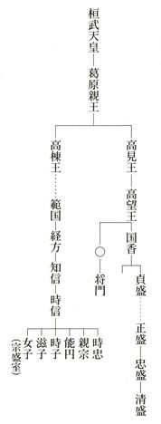

| 平家物語の女性たち (文春文庫) | |
| 永井 路子 | |
| 文藝春秋 (2011) | |
文春ウェブ文庫
平家物語の女性たち
永井路子
目 次
タイトルをクリックするとその文章が表示されます。
平家物語の女性たち
『平家物語』の中で、いちばん名の知られた女性は？ と聞かれたら、私はためらいなく王、女をあげたい。
が、じつをいえば、彼女たちは、『平家』本筋の女主人公ではない。彼女たちの登場する「王」の巻じたいが、『平家』の本筋から離れたもので、『平家』が作られた当初はなかったのではないか、とさえ言われているくらいなのだ。彼女たちはあくまでも脇役である。ではなぜ、彼女ら脇役たちが、かくも人気があるのか、まずその人間像をさぐってみよう。
彼女たちは白拍子だった。白拍子というのは、平安朝末のそのころもてはやされた舞姫である。その名称について『平家』は、鳥羽天皇の時から始まり、水干に立烏帽子で白巻の太刀をさして舞った男舞であったが、のちに烏帽子、太刀をとって水干だけで舞うようになったので白拍子と言った、と説明している。水干というのは当時の庶民の男子のふだん着で、多く白で作ったから、すなわち白拍子だというのである。
また一説には、白拍子とは、語源的には無伴奏の拍子という意味だともいうが、有名な静御前は、鎌倉へ下って来たとき、鼓や笛、銅拍子の伴奏で舞っているから、現実の白拍子の舞は、必ずしも無伴奏でもなかったようだ。
ともあれ彼女たちは、こうした芸を売りものにする舞姫だった。王、女の母もとぢ（刀自）という白拍子だったというから、二代続いた生ッ粋の踊り手だったのであろう。
その芸のみごとさに目をつけられて、やがて王は、時の最高権力者、平清盛の屋敷に迎えられ、寵愛をうけるようになる。それにつれて妹の女の人気もたかまり、当時の都を代表するスターの座にのしあがった。清盛は、とぢのためにも家を作ってやり、しかも毎月米百石、銭百貫を与えたので、母子三人は物質的にもめぐまれ、しあわせな毎日を送っていた。
いわば王・女ブームである。こうなれば、彼女たちをうらやむ者、そねんで悪口を言うものが出て来るのは世の常である。
「あれはきっと、という名前が縁起がいいのだろう」
と、これにあやかりたいと思う連中は競っての字をつけたり、
「何で名前によるものですか、あれはただ前世からの約束でしあわせに生れついたのよ」
というものもあり、とかく彼女たちは都に話題をまき散らした。
ところが、三年ほどたつと、また新人があらわれた。加賀の国の生れで年は十六、仏という名のその少女は、たちまち都の人気者になり、
「これほどの舞の上手はなかった」
というほどの評判をとった。
こうまでちやほやされると、仏御前の望みもふくれあがる。
「私もずいぶん有名になったけれど、天下に権勢をほこる平清盛さまに呼ばれないのは残念なこと。遊び女のならい、別によばれないところへ出かけていったってかまやしない、ひとつ清盛さまのお屋敷におしかけてみましょう」
いかにも年若い、世間知らずな、現代っ子とでもいった感じの気負いにあふれた仏御前である。こわいもの知らずで、西八条にある清盛の館に出かけて行った。
が、この気負いは、もろくも崩された。せっかく出かけた仏を、清盛はすげなく追い返そうとしたのだった。
「遊び女というものは、呼ばれてから来るものだ。げんに、ここにこうして王がいる以上、『神』だろうが『仏』だろうが、出入りは無用、さあ、とっとと帰れ」
顔も見ずにそうわめいたのである。
天下の権力者にこう言われてしまってはおしまいだ。自信をくじかれて、すごすごと引返そうとしたとき、王がやさしくとりなした。
「よばれもしないでもおしかけるのは遊び女のならい。しかも年もまだ若く世間知らずなのですもの、深い考えもなく、ふっと思い立って出かけて来たのでしょう。すげなく帰されては、あまりかわいそうです。わたしも同じ白拍子、人の事とは思えません。舞や歌はともかくとして、ただ会ってだけおやりになったら？......」
清盛もお気に入りの王の言葉に、
「まあ、そなたがそんなに言うなら......」
と、仏御前を呼びもどす気になった。すでにがっかりして車に乗って出ようとしていた彼女が、急いでもどって来ると、清盛は言った。
「とうてい会ってやる気にはなっていなかったのだが、王が何を思ったか、しきりにすすめるので引見してやるのだぞ。さあここで今様の一つも歌え」
今様というのは、「当世風」ということでそのころ流行していた歌のことである。当時はこれが大流行で、現代のロックかなにかのように一世を風靡していた。宮廷側の最高権力者であった後白河法皇も、若いころからこの今様の大ファンで、昼も夜も歌いまくって、しまいにはのどがつぶれてしまったことも何度かあったという。今残っている今様はみんなのどかでみやびやかで、どこに人を狂わせるほどの魔力があるかと思えるが、とにかく当時は、人の心を酔わせてしまう、ふしぎな歌として、流行していたらしい。
ところで、仏御前は、今様の名手だった。
君をはじめてみるおりは千代も経ぬべしひめ小松
おまへの池なるかめをかに鶴こそむれゐてあそぶめれ
美声は聞く人々の耳をとろかし、清盛も大いに心を動かされたらしい。
「ほう、こんなに今様がうまいのなら、さぞかし舞も見ごたえがあろう。一曲見てやろうか」
もちろん舞はお手のものだ。仏御前はここでも完全に清盛を魅了してしまった。
仏が舞終ったとき、清盛の心はすっかり変っていた。ほんのちょっと前まで、
「顔も見るに及ばぬ、帰れ」
といっていたのに、この気まぐれな王者は、年若な舞姫の手をとらえて離そうとしなかったのである。
「仏よ、かわいい奴。これからずっとわしのそばにいるがいい」
言われてかえって仏御前はうろたえる。
「何とおっしゃいます。私はもともとおしかけて参りました者。いったんお屋敷から出されたところを、王御前のおとりなしで、こうして舞をみていただくことができたのです。なのに、私がこのまま、ここで御寵愛をうけることになりましたら、王御前がどうお思いになるか、そう考えただけで恥ずかしくなってしまいます。どうか、早くおいとまさせて下さいませ......」
ドライな舞姫ではあったが、仏御前が考えていたのは、芸の世界だけのことだったのだ。
──天下の舞姫として、清盛にもみとめられたい。
そうは思ったが、王から清盛の愛を横取りすることまでは考えていなかったのである。むしろ、そんなことになったら王にすまない、としきりにこばんだのだが、わがままな王者はきかなかった。
「いや、いかん、帰ることはならん。もしや王がいるのに遠慮してそういうのだったら、王を出してもいいぞ」
ますます仏御前は困ってしまう。
「まあ、そんなこと......いっしょにこの御殿にいることだって困りますのに、私一人だけがいるようになったら、それこそ王御前が何とお思いになるか......もし私をお忘れにならなかったら、またお呼び下さい。とにかく今日は帰らせて下さいませ」
が、それでも清盛は仏御前を帰そうとはしない。
「いや、絶対に帰ることはならぬ。かわりに王こそ出てゆけ」
急な心変りである。
──遊び女の常として、いつかは捨てられる時が来るのではないか......。
心の中でひそかにこう思っていた王ではあったが、よもやこんなに突然に追立てられるとは思っていなかった。が、いまは全く心の離れてしまった清盛は、
「早く出よ」
しきりにそう言ってせめたてるので、部屋の中を大急ぎで取りかたづけ始めた。こんなときにも悲しみをおさえて、後で物笑いにならぬようと心づかいする王の姿が哀れである。『平家』はこのときの彼女を、
は（掃）きのご（拭）ひちり（塵）ひろはせ、見ぐるしき物共とりしたゝめて......。
と書いている。が、ともあれ、三年の間、清盛の寵愛をうけ、豪奢なくらしをしたところだけに、いざ出てゆかねばならぬとなれば、さまざまの思いが胸にこみあげてくる。涙ながらに王は襖に一首の歌を書きつけて立ちのいた。
もえ出るもか（枯）るゝもおなじ野辺の草いづれか秋にあはではつべき
春になってもえ出る草も枯れる草も、みな同じ野辺の草であってみれば、どれも秋にあわないですむはずはない。──今、仏御前は寵愛をうけ、私は捨てられるけれども、いずれ野の草のようなはかない命──いつかは飽きられて枯れてゆくのだ......人間のはかなさをこう王は詠嘆したのである。
清盛の屋敷を立ちのくまでは、彼女もけなげに気を張っていた。人から後指をさされまいとして、部屋の片づけにも念を入れた。が、わが家に帰りつくと、はりつめていた気持がいっぺんにくずれ、わっと泣き伏すばかり。母や妹が何とたずねても、答えることさえできない王であった。
こうなると、母のもとに清盛の所から送られて来た百石百貫の仕送りも絶えた。しかも彼女が清盛の屋敷から出されたことは、たちまちのうちに都じゅうに知れ渡ってしまった。
「それなら、ひとつ王を呼んで遊ぼうじゃないか」
物珍しさが先に立って、使をよこす者、手紙を届ける者などが多かったが、いまさらその相手になって遊びたわむれる気にはとてもなれない。
そのうちに年が変って春になると清盛の所から珍しく使が来た。
「その後どうしているか。仏御前がたいくつしているようだから、そなたも来て、今様を歌ったり舞を舞ったりして、なぐさめるように──」
なんという言いぐさであろう。王がどんなに苦しんでいるかを全く考えにいれない無慈悲な、無神経な命令である。さすがに返事もできないでいると、また追いかけて使が来た。
「いったい来るのか来ないのか。なぜ返事をしないのだ。もし来ないというなら、こちらにも考えがあるぞ」
これを聞いた母は泣きながら王にいいきかせた。
「まあ、そなた、ともかく御返事だけはしたほうがいいのじゃないかい？」
王はかぶりを振った。
「行くつもりがあれば御返事もしますが、私は始めから行く気がないのです。今度のお使で、来ないなら考えがある、とおっしゃる所をみると、都を追出すのか、それとも殺すおつもりなのか......でも、今となっては都を追出されてもかまいませんし、命だって惜しくないのです。いったん清盛公にきらわれた私、もう二度とあそこへは参りたくありません」
平清盛という人のイメージを王はすっかり消し去ってしまいたかったのだろう。が、母はむしろ、その決心を恐れたようだ。
「でも、この世に住んでいる以上は、やはり清盛さまのお言いつけに背いてはねえ。だいたい男女の縁というものがはかないことは、今始まったことではない。千年万年もいっしょにと約束した二人がまもなく離れてしまうこともあるし、かりそめの契りと思ったものが、案外一生続くこともあるもの。あなたは清盛さまに思われて、三年もお屋敷にいたというだけでも稀有なこと、深い御情と思わなければなりませんよ。お召しがあったのに行かないからといって、よもや命を奪われることもないだろうけれど、やはり都の中からは追出されるでしょうね。まああなた達は若いからそれでもいいだろうけれど、こんな年になって、馴れぬいなか住いは、私にとってはつらすぎます。私への孝行だと思って、いなか住いだけはさせないでおくれ」
こうまで言われては、王も母の言葉にさからうこともできず、泣く泣く西八条の清盛の屋敷に行くしたくをした。
言葉のうわべだけ見れば、ひどく自分勝手な母親である。娘がこんなに苦しんでいるのに、その気持をわかってやらず、いなか住いはしたくないから、清盛の所へ行けというのは、随分無理解なような気もする。
が、じつは母には母の考えがあったのではないだろうか。
──愛する娘の身の上にもしものことがあったら......。
ひそかにそれを案じたからこそ、わざと、
「親に孝行すると思って──」
と言って行くことをすすめたのかもしれない。また王もそこまで言われては母の言葉にそむくこともできず、泣く泣く、清盛の屋敷に出かけてゆく決心をした。このときの様子を、『平家』は、
なく又出立ける心のうちこそむざんなれ。
と書いている。なにげない言葉だが、ちらりと暗い未来を暗示させるものがある。「むざん」とは痛ましい、気の毒という意味だ。母も娘のためによかれと思ってすすめたのであろうが、それにしたがって、苦しみを秘めて清盛の屋敷に出かけようとする王の心の中こそ痛ましい、というのである。
果せるかな西八条に出かけた王は、ここで、さらに残酷な経験をしなければならなくなる。
ひとりでは心細いので妹の女やほかに二人の白拍子を連れて行ったが、通されたのは、昔住んでいた部屋ではなかった。ずっと下った身分の低い者の通る部屋に通されて、さすがにくやしく、涙をおさえていると、清盛から声がかかった。
「王、その後はどうしているか。仏御前が、たいくつしている様子だ。さあ、今様でも歌ってみせよ」
覚悟してここまで来た以上、何といわれても拒むわけにはいかない、と決心して、王は涙をおさえて歌った。
仏もむかしはぼんぶ（凡夫）なり我等も終には仏なり
いづれも仏性具せる身をへだつるのみこそかなしけれ
（仏も昔は人間であった。われわれも悟りをひらけば、やがて仏になる身である。人と仏と──いずれも仏性をそなえているのに、差別されることは何と悲しいことか......）
この歌のもとの歌は、
仏も昔は人なりき 我等もつひには仏なり
三身仏性具せる身と 知らざりけるこそあはれなれ （梁塵秘抄）
というのであるが、それを王は少しかえて、清盛が自分と仏御前を差別待遇することの悲しみを歌ったものらしい。
涙ながらにこう歌う声を聞いて、なみいる人は思わず眼頭を熱くした。が、当の清盛は、このとき、全く彼女の心の中に気がつかなかったのか、上機嫌で言った。
「なかなかうまく歌ったな王、ついでに舞も見たいが、ちょっと今日は用事がある。まあ、今後は呼ばなくとも来て、歌を歌い、舞を舞って、仏御前を慰めてやれ」
王はさすがに返事もできず、涙をおさえて退出した。帰るなり、王はこらえていた悲しみをぶちまけた。
「親の言いつけに背くまいと思って、つらいつとめに行ったものの、これほどまでの恥ずかしめにあうとは......この先もこうして生きていたら、また悲しいめにあわなくてはなりませぬ、もう今は身を投げて死ぬよりほかはありませぬ......」
妹もその言葉を聞いては黙っていられなかった。
「お姉さまが身を投げるのなら私も......」
母のとぢは涙を流しながらかきくどいた。
「よもやそれほどのことがあろうとも思わず、行くことをすすめた私が悪かった。許しておくれ。お前達が死んでしまって老いた私が生き残っても何にもならない。いっしょに死にたいと思うけれど、私が死ねば、お前たちに親殺しの罪を負わせることになる。考えてみれば、この世は仮の世、恥をかこうとかくまいと何のことはないが、あの世にまで罪を背負ってゆくことが悲しい。親殺しの罪を犯したら、後の世でまたどんなに苦しむことか」
言われて王もやっと自殺だけは思いとどまった。
「たしかに親殺しは五逆の罪の一つ。では死ぬことだけはやめます。でもこうして都にいれば、またつらいめにあうにきまっていますもの。都にはいたくありません。都の外へ出て住みましょう」
ときに王は二十一、惜しげもなく俗生活をすてて尼になり、嵯峨野の奥に移り、小庵をかまえ、念仏三昧の生活に入った。続いて十九の女も、四十五になる母のとぢも出家し、専修念仏にあけくれる身になった。
やがてその年の秋のある夜──。
かすかな燈のまわりに集まった三人が、ひそやかに念仏をしていると、表の竹の網戸をほとほとと叩く音がした。
「まあ、誰でしょう」
三人は思わず顔を見あわせた。
「何か魔性のものが来て、私達の念仏の邪魔をしようというのでしょうか。昼さえ人も訪れぬこの小さな一つ家、どうせ防いだとしても竹の網戸では、やすやすと押し破られてしまいます。それならむしろあけてやりましょう。もし命を奪おうというならそれもよし、今は私たちをお救い下さるという阿弥陀さまの御本願を信じて、お念仏をとなえるよりほかはありませぬ。諸々の仏様は、その念仏の声を聞いて、お救いにいらっしゃるといいますから、きっといらっしゃって下さるでしょう」
そう言って、お互い念仏の声をはげましながら、戸をあけると、なんとそこにたたずんでいたのは、仏御前だったのである。
「まあ、あなたは......」
おどろく王の前で、仏は泣く泣く言った。
「私はもともと、すんでのことで西八条のお屋敷を追いだされる所を、あなたさまのお力で召し返されたもの。それがあのようなことになってしまい、女の身の悲しさは、清盛公に押して反対することもできず、心ならずも、あのお屋敷にとどまっていたのです。でもあなたさまがこの間またおいでになって歌われたあの今様の文句、心にしみて悲しゅうございました」
じつはあのとき、仏御前は、王がそまつな部屋を与えられたと聞いて、
「まあ、あんなところではお気の毒、こちらへお呼びしては」
ととりなしたのだが、清盛はそれもききいれなかったのである。
仏御前はさらに続けた。
「清盛公に寵愛をうけても、ちっともうれしいとは思いませんでした。あなたが出てゆかれるときに書きつけられたあの歌、『いづれか秋にあはではつべき』という筆の跡、ほんとうにそのとおりだと心にしみました。あのあとお行方もわからずにおりましたが、世を捨ててこうしていらっしゃると聞いて、もう矢も楯もたまらなくなってしまいました」
仏御前は、清盛の所を辞したいと願ったが、なかなか許しが得られなかった。
「けれどもこの世の栄華は一時の夢、思いたったときに仏縁を得られなければ、あるいは地獄に堕ちてしまうかもしれませぬ、若いといっても頼みがたいのは人の命──そう思って、今朝お屋敷をしのび出て、こうしてまいりました」
と言いながら頭からかぶっていた着物をのけると、すでに彼女は髪を切り、尼の姿になっていたのである。
「こうなった上は、どうぞ今までの罪はお許しくださいませ。もしお許し頂けるなら、いっしょに念仏をさせて下さい。もしお許しが得られないとならば、これからどこへでもいって念仏をして一生を終ろうと思います」
その言葉を聞いて王も涙をおさえながら言った。
「そうとも知らず、私はあなたをお恨みしていました。これも世のさだめだと思いながらも、どうしても心の底では悟りきれなかったのです。これでは往生もおぼつかない、この世でも不幸だったけれども来世もうまくゆくまいと思っていたのですが、今のお話を聞いた上はもう露ほどの恨みもありません。これで私も清い心となって往生できます。じつは私たちが尼になったことを、世の中でも例のないことだと言い、私たちも内心そんな気がしていたのですが、考えてみれば、私たちのように不幸になったものが出家するのはあたりまえのこと。あなたのように幸福の絶頂にある方で、まだ年も十七というのに、ここまで悟りの境地に到達なされたことこそおみごとです」
かくて、四人は一つの庵にこもって、朝夕念仏を唱え、のちにはそれぞれ心静かに往生したという。
これが王たち舞姫の生涯である。
では果して彼女たちが実際に当時生きていたか、というとこれをたしかめるすべはない。『平家物語』の素材は大部分が実在の人物をモデルにしているが、ここは、まずそうした部分とは違ったフィクションと見ていいと思う。
が、彼女たちが実在したと否とにかかわらず、この物語は、往生念仏への希求の激しかったそのころ、おそらく、人々に大きな感動をもってうけいれられたに違いない。
しかも登場人物は白拍子──当時の花形芸能人だ。王が実在しないとしても、彼女のように貴人の寵愛をうけ、ときめいた舞姫はかなりいたのではないか。
またこの部分は短編としてかなりよくまとまっている。事件の起伏もあり、最後に仏御前が尼となって現われるといった意外性もあって、読む人や、「平曲」として聞く人をあきさせないようにできている。このくだりが『平家』のさわりとして、民衆に拍手をもって迎えられたであろうことは想像にかたくない。
が、じつはそのゆえにこそ、現代の私たちはこの巻に、あまり魅力を感じないのではないか。
第一に物語の筋が、あまりにも常識的な仏教説話でありすぎる。現代の人間はこうしたお悟りの世界には、始めから不感症なのである。
第二に登場人物が、あまりに類型的だ。王も仏もとぢもそこには何の個性も感じられない。
かろうじて仏には、若い女らしいドライさ、気の強さを感じさせるが、個性的というほどではない。またとぢにいたっては、あまりに通俗的常識的な母親である。
特にこの巻の最大の欠陥は、平清盛というその人の性格を全く捉えていないことであろう。ここに登場する清盛は、全くの暴君である。気まぐれに王を仏に乗りかえるだけでなく、王の気持を考えようともせずに、ふたたび王を呼びよせて恥をかかせる。まったく思いやりのない、無神経な男として描かれている。
が、実在の清盛は、こんな愚かな男ではない。だいたい平清盛については『平家』は必ずしも好意的な立場をしめしていないのだが、それにしても、この巻での清盛の扱いはあまりに類型的な悪役でありすぎる。
現実の清盛は院政期に画期的な活躍をし、平家時代を作りあげた、なかなかスケールの大きい、決断に富む政治家でもあった。時としては、たしかに無神経なゴリ押しもしないではなかったが、それはむしろ政治上のことであって、それがすなわち個人的にも非情な男であったという証拠にはならないと思う。
この巻の作者は、こうした清盛の人間像全体を捉えていない。この事からして、この巻の作者がたとえ誰であるにせよ、清盛からはかなり距った──時間的にも社会的にも──人でなかったか、ということを感じさせる。この巻が『平家』の本筋よりもおくれて成立したという説に、私が賛成するのはこのためである。
この巻が有名になったおかげで、清盛は世の中の人に、ひどく悪い印象を与えてしまったようである。もしこの巻がなかったら、彼の印象は、よほど違ったものになっているのではないだろうか。その意味でも、この巻は、必ずしも『平家』の中ですぐれた巻とはいえないと思うのだが、にもかかわらず、この巻が人々にもてはやされたのはなぜか。これはまさしく王たちの大衆的な人気のためであろう。
たしかに、現代の目から見れば、あまりに類型的ではあるが、彼女たちには、一種の哀れさがある。彼女たちは庶民だ。『平家物語』の登場者のほとんどが、高位高官である中で、彼女たちは身分の低い白拍子だった。「平曲」を聞く人々は、そこに自分たちと共通の身分の女性を見出し、その哀れさに、ひとしお涙をそそられたのではないかと思う。
しかも彼女たちは、ただ哀れな存在だっただけではない。むしろ貴族に先立って現世の栄耀のはかなさに気づき、仏教に帰依して静かに往生した。王たち庶民の代表は、平家が栄華をきわめている最中に、はやくも出家して平家を離れ、その滅亡の渦に巻きこまれることをまぬがれた。
この意味では彼女たちは、人生のチャンピオンである。当時の人々に深くしみこんでいた専修念仏を、女性の身ながら、いち早く実行した人として、人々は彼女にかぎりない憧憬すら感じたのであろう。
『平家物語』を語り伝えたのが琵琶法師であることを思いあわせれば、この部分が後に挿入されたと考えることは、はなはだ興味ぶかい。彼らに語りつがれ、時代が下るにつれてしだいに『平家』が仏教色を濃くしていった一つの証拠がここにあるとも見られるからだ。しかも特に念仏思想が押し出されていることにも注目していいのではないかと思う。いずれこのことは後にもふれる機会があるかもしれないが......。
『平家』の中で、こんなふうに仏教の助けを借りて現世の修羅を避け得た人は、彼女たちのほかに平重盛（清盛の長男）がいる。そしてこの重盛と王たちが、『平家』の中では昔から何となく評判のいい人物だったこともおもしろい。特に王たちが女性であり、かつ一番華やかで世俗的な幸福を追いかけそうな白拍子であることが、彼女たちの印象を深めている。
人々は琵琶法師の語る「平曲」を聞くとき、彼女たちが実在であると否とにかかわらず、その中に自分たち庶民の姿を見出し、その人生に対して見開かれた眼差しの深さに感嘆し、哀れさの中にも、ほっとした救いのようなものを感じたのではないだろうか。古来、民衆の同情と共感は、物語の主人公に永遠の命を与える。かくて彼女たちは、あたかも『平家』の女主人公の一人のような地位を獲得するのである。
私は近頃になって、何度か古曲の伝統を伝える検校たちが「平曲」を語るのを聞いた。はたして現存の曲が、そのまま全盛時代の「平曲」そのものであるかどうかはわからないが、単調ながら、何か神秘的な響きを持つ調子で語られるとき、活字の上ではいかにも彫りが浅く類型的に見える彼女たちが、ふしぎな翳をひきながら、鮮明にうかびあがって来るのではないかと──残念ながら私の聞いたのは王のくだりではないので、想像をめぐらせるだけでしかないのだが、少なくともそんなふうな気がした。
ここに「語り物」と読む文学の差がある。その意味で、『平家』はいわゆる小説と同じに扱えないのである。
が、そうした問題を別にして、最後にもう一度、彼女たちの人間像にもどってみよう。彼女たちは、たしかに『平家』の中の人気者だ。だからといって、いま、私たちが『平家』の世界を読む場合、彼女たちの存在をあまり買い被りすぎてはいけないと思う。始めに言ったように、彼女たちはあくまでも脇役だし、現在の目からすると、その描き方は必ずしもみごととはいえないからだ。
彼女たちはたしかに哀れである。その哀れさで多くの民衆をひきつけたかもしれないが、それだけに常套的な類型人物であることはいなめない。これは同じく『平家』の作者が、心からの同情と好意をよせて描いている重盛が、案外今の目でみると平板で、血の通った人間として描けていないことと共通することかもしれない。作家の意図と、できあがった作品の間には往々こうしたギャップはあるものなのだ。
これは一つの提案なのだが、私は『平家』を読むとき、一度この巻をとばして読んでみることをおすすめしたい。こうすると、物語の流れにも少し違った感じをうけるだろうし、なぜのちに王たちのようなフィクション人物を入れたくなったのかということも、案外はっきりするのではないかと思う。
なお京都の嵯峨にある王寺は彼女たちの住んだ寺のあとと言われている。もともと彼女たちが作者の創造力から生れた架空の人物であってみれば、それ以上のせんさくは無用の事であろう。
どういうわけか『平家物語』では、本筋にかかわりの薄い女性のほうが有名である。清盛の愛人だった王・女もその代表的な例だが、高倉天皇に愛された小督局もその例であろう。
いわば彼女は脇役の脇役といった存在である。もともと高倉天皇自身が、若くしてこの世を去ってしまい、『平家』の主役クラスではないのだから、その愛人である小督はほんの添えものといった存在にすぎないのだが、にもかかわらず、人々によく知られているのは、その描かれ方が、非常にロマンティックで、彼女の哀れな運命が、人々の心を強くとらえたからであろう。
が、この小督を語るには、その前に葵女御とよばれた女性について語っておかなければならない。『平家物語』の中でも、「葵女御」の巻と「小督局」の巻は続いていて、それで一つの物語になっているといってもいいからである。
葵女御──というのは、じつは正式の名前ではない。葵前というのが本名で、もともと女御になれるような家柄の女性ではなかった。
女御というのは、天皇のおきさきとして、公式にみとめられた女性にだけ許された称号である。
当時の天皇の正妃は中宮とか皇后とかよばれ、その下に女御、さらにその下に更衣とよばれる女性がいた。女御や更衣になれば位をもらうし、その中から選ばれて中宮になることもある。したがって、かなりいい家柄の公家の娘でなければ女御にはなれなかった。
高倉天皇の中宮は、周知の通り、平清盛の娘、徳子である。葵前は、この徳子に仕える女房の召使だった。宮仕えをはじめたころは、まだほんの少女で、女童とか、上童とか呼ばれて、細々とした雑用に使われていた。
が、生れつき美しかった彼女は、まもなく高倉天皇の目にとまり、寵愛をうけるようになった。
じつをいうと、中宮徳子は高倉天皇より六つも年上である。十六歳で徳子が入内したとき、高倉はたった十歳。だから少年天皇にとって、徳子は、はじめはお后というより、むしろ姉のような存在であったに違いない。そしてその感じは、天皇が青年になった後でもぬけきれなかったのではないだろうか。
これに比べて、葵前は、まだ少女らしさのぬけきらない、ういういしい美女だった。青年天皇は、彼女によって、はじめて年下の女性をいとおしむことを知らされたのかもしれない。
『平家物語』は、このあたりの高倉の心境を、「たゞよのつねのあからさまにてもなくして、主上つねはめされけり。まめやかに御心ざしふかゝりければ」と書いている。かりそめの恋、ふつうの程度の関心の持ち方ではない、もっと真剣なものだった、というのである。
──人を愛するとはこういうことか......。
と、おそらく青年天皇は、はじめて愛の世界を知る思いだったのではないだろうか。
人々は、天皇の愛情の深さを知って、ひそかに葵前を、葵女御と呼ぶようになった。
──いずれ天皇の皇子を生むようになれば、女御とよばれるようになるかもしれない。
そんな思いから、正式に女御とみとめられていない彼女をそう呼んだのであろう。
が、その噂を聞くと、高倉天皇は、ふいに葵前を寵愛することをやめてしまった。
それはなぜか？
「愛情が薄れたためではない」
と『平家物語』は書いている。
天皇の地位にあるものが、好き勝手な愛情の対象におぼれて世のそしりをうけることを憚った、というのである。葵前に向ってほとばしる愛情を、理性がかろうじておさえた、ということだろうか。
それだけに高倉帝は苦しんだ。それからというもの、いつも物思いにしずんで、食事もほとんど口にせず、病気と称して、寝所である、「夜の御殿」にひきこもってばかりいた。
その様子を見聞きした側近は心配しはじめた。関白の藤原基房も早速やって来て、
「そんなに心にかかっておいでなら、何のお差支えがありましょう、その女房を、すぐお召しなされませ。家柄がどうのとお調べになるには及びませぬ。私がすぐ養女分にいたしましょう」
と奏上した。
が、帝は首をふった。
「さあ。お前の計いもいいとは思うが、退位後ならともかく、現に位にある身でそんなことをしたら、後々まで批難されはしないか」
と言って、遂に基房の案はうけいれなかったのである。
それかといって、もちろん葵前のことを忘れ去ったわけではない。ふとした折に、帝は手許にあった緑の薄様（薄い鳥の子紙）に、それとなく歌を書きつけた。
しのぶれどいろに出にけりわが恋はものやおもふと人のとふまで
拾遺集の恋の部にある平兼盛の名歌である。まさにそのときの帝の心境にふさわしい歌であった。そばにいた冷泉隆房（『平家物語』では「れんぜい」と呼んでいる）という公家が、これを頂き、葵前にやると、それと察してか、彼女もぽっと顔を赤らめた。
「少し気分が悪うございまして......」
彼女がそう言って宮中を退ったのは、その直後である。それから家に帰って五、六日床についたかと思うと、俄かにこの世を去ってしまった......。
あまりにもはかない恋の物語である。高倉にしても、
──天皇としての道をあやまらないために。
という理性的判断によって、かろうじて自分の愛情のほとばしりを抑えたのだが、これではあまりに消極的すぎはしないか。高倉天皇は『平家物語』の中では、大変思いやりの深い賢王として描かれているので、天皇として在位中は、人のそしりをうけることはしたくない、という自制もさこそと肯けはするものの、しかし物語としては、何やら物足りない感じがすることはたしかだ。
が、じつをいうと、天皇が葵前をわざと遠ざけたのは、単に道徳的抑制ではなかったらしい。むしろそれよりも、当時の権力者の清盛に対する遠慮が大きかったのではないだろうか。
先にのべたように、天皇の中宮は、清盛の娘、徳子である。それなのに徳子をさしおいて、葵前を寵愛したということが、清盛の耳に入ったら、どうなるか。さらに葵前が男子を生み、噂の通り女御にでもなるということになったら、清盛の怒りは爆発し、彼女の身にどんな事が起るともかぎらない。
天皇が関白基房のすすめをしりぞけたのも多分このあたりに原因があるのではないか。関白の養女分ということになれば、家柄には問題がなくなるかわり、今度は清盛と基房の間に対立が起り、微妙な政治問題に発展しかねない。いずれにしても、かれんな葵前を酷薄な政治闘争の渦に巻きこむことは必定である。
だから、葵前から遠ざかったというのは、天皇の大きな愛情にほかならなかった。
──こんなかれんな女を、苦しい立場に追いこむことはできない。それより自分ががまんするのがいいのだ。耐えることこそ愛なのだ。
おそらく天皇はそう思ったのではないだろうか。
『平家物語』にはそこまでは書いていないのだが、これは筆者の筆が足りないからではなく、じつは小督局の物語を読むときにその経緯がはっきりするようになっているのである。だからここではいたずらな重複はさけて、さらりと書き流してしまったのではないかと思う。「葵女御」と「小督局」は、その意味でも、やはり、いっしょに扱わなくてはならない巻なのである。
逆にいえば、「葵女御」は、「小督局」の前奏曲なのだ。そう思ってみれば、何か物足りない描き方も納得がゆく。さらにもう一つ、私自身の推察を加えるならば、この巻は、「小督局」を描くための、筆者のフィクションではないか、ということである。
葵前が実在したかどうかは、今日では全く確かめるすべはない。こうした宮廷の小ロマンスは、当時としては、よくあることだが、そのかわり、史料に残ることはほとんどない事件だからだ。
だからここで彼女の実在性をせんさくすることよりも、一応筆者のフィクションと見て、これが「小督局」の前に置かれた理由を考えてみたほうが、物語を理解するためには大切ではないかと思う。
ここで『平家物語』が言いたかったのは、高倉帝の清潔でひかえめな人柄であろう。帝は決して当時よくあるような色好みではなかった。たとえば白河法皇は、各階層の女を手あたり次第に寵愛し、法皇の落しだねと名乗る者があちこちに現われたというエピソードの持主である。
が、高倉帝は決してそういうことをしなかった──ということを『平家』の作者は言いたかったのだ。天皇としての自覚もあり、抑制心もあり、耐えしのぶという愛のかたちを知る人だった。
「葵女御」で語っていることは、じつはこの一事につきるといってもいい。巻の名前こそは「葵女御」だが、主題は高倉帝の性格であり、葵前自体は、むしろ脇役である。たしかに、今の感覚でいえば、彼女の描き方は、いささか物足りない。帝の恋の歌を見て、それなり死んでしまったというのも、簡単に結末をつけたという感じがしないでもない。が、これも、彼女がフィクションの人物であり、小督を描くための前提的な存在だとするならば、納得もゆく。だから私たちは、ここでは、実在もさだかではない幻のような美女を想像できればそれでいいのである。
弱々しげな、かぼそい体と、少女らしさのぬけきれない、かれんな面差しと──この世ならぬ美しさをもったそのひとは、高倉帝の思いやりがかえって仇となって、愛の重みにさえ耐えかねて、この世を去ってしまった。なかばメルヘンにも似たその物語に耳を傾けながら、次の「小督局」の巻をあけてみようではないか。
この巻のヒロイン小督は、葵前とはちがって、れっきとした実在の人物である。父は桜町中納言といわれた藤原成範という公 で、その父の藤原信西は、当時きってのやり手といわれた人だった。
で、その父の藤原信西は、当時きってのやり手といわれた人だった。
平安朝後期、いわゆる院政時代の一時期、政治は、この藤原信西によって動かされていたといってもいい。彼は保元の乱には平清盛と組んで政敵を降し、以後の政権を一手に握ったが、その後、後白河の近臣や清盛と対立する源義朝に憎まれて、平治の乱では彼らのために殺されてしまったという人物である。
信西の死後、子供たちは各地に流されたりしたが、やがて赦されて都にもどった。中でも小督の父の成範は、もっとも順調に公家社会に復帰した一人であろう。というのは、わけがあった。信西の生前、成範と清盛の娘は、両者の父親を結ぶ絆として婚約させられていたのである。つまり成範は、清盛にとって婿ともいうべき存在だったのだ。
小督の母はこの清盛の娘ではなかったようだが、ともかく、彼女の家と、平家との関係は、何ともいえず微妙なものだったらしい。そして当時の小督は、中宮の側近にいる女房の一人になっていた。彼女が小督とよばれたのは、父の成範が、左兵衛督だったからだといわれている。
小督は当時、無雙の美人──二人とはいない美人といわれた女性であり、しかも琴の名人でもあった。こうした彼女が、徳子の側近にいれば、高倉天皇の目にとまらないはずはない。ところが『平家物語』は、この事情を、
「高倉天皇が葵前との恋の思い出にふさぎこんでおられるのをお慰めしようとして、中宮徳子が、わざわざ差しむけた」
と書いている。
これはいかにも不自然である。が、その事については、私自身少し考えるところがあるので後になって触れることとして、ともかく小督が高倉帝の寵愛をうけるようになったという事実だけに目をとめておこう。
ところで、この小督には、そのころ一人の恋人があった。のちに冷泉大納言といわれた藤原隆房がその人である。まだ少将であった隆房がしきりに歌を詠んだり、恋文をよせて来るのを小督はなかなか受入れようとしなかったが、やがてその熱心さに負けて、彼女も隆房を愛するようになったのだった。
彼女が高倉帝の愛をうけるようになったのは、じつはその後である。
──帝の思いものになってしまったのではしかたない......。
隆房は、そう思いながらも、小督をあきらめることができない。
──もしや、よそ目にも小督を見ることができはしないか......。
ひそかにそう思う気持があって、せっせと参内し、小督のいそうな局のあたりを行ったり来たりするのだったが、小督自身は、
──こうして帝のお情をうける身となっては、少将がいかに私を愛して下さっているとしても、もう言葉をかけたり、文をやりとりすべきではないから......。
と思い定めて、人づてに何かを言ってやるということもしなかった。
が、隆房は、やはりあきらめきれなかったらしい。もしやと思って、歌を詠んで小督のいる局の御簾の中に投げいれたりもしたが、小督は高倉帝をはばかって手にもとらず、召使にそのまま中庭に投げ出させた。
隆房は絶望した。
──ああ、わが恋もこれまで......。
死んでしまいたいとまで思いつめた。
ところが、これを聞いた平清盛は激怒した。
「なに？ 小督が帝の思い人になったと申すのか？」
じつは隆房の正妻は清盛の娘だった。その娘を放りだして小督に熱中している隆房も隆房だが、その小督が今度は大事な徳子の夫である高倉帝の寵愛をうけていると聞いては、黙っているわけにゆかなかった。
中宮はわが娘、隆房もわが娘の婿、すれば娘二人までが、小督に愛を奪われたことになる。
「いや、これでは小督がいてはろくなことにならないぞ。召し出して亡いものにしてしまおう」
清盛がそう言ったと聞いて、小督は決心した。
「私の身はどうなってもいいけれど、このままでは帝の御身に御迷惑がかかってしまう」
そう思って、ある日の夕方、薄闇にまぎれて宮中をぬけだし、どこへともなく姿を消してしまった。
小督失跡......
と知ったときの高倉帝の嘆きは深かった。昼も寝所に入ったまま、夜は紫宸殿の廂から、月を眺めて、物思いにふける──というありさまだったが、それを聞くと、清盛は、ますます不快になったらしく、
「これもみんな小督のせいだ。よし、それならそれで考えがある」
とばかり、小督に代って帝の身のまわりを世話する女房もさしむけないだけでなく、参内する公たちの邪魔までしはじめたので、その権勢に恐れる人々は、自然と高倉帝の側近から遠ざかるようになり、宮廷は、何となく、重苦しげな空気が漂いはじめた。
かつて葵前を愛したときに、高倉帝がおそれたような事態が、やって来てしまったのだ。しかも高倉には、帝として清盛に威圧を加えるだけの力もない。抑圧された魂をかかえて、鬱々として楽しまない日を送るよりほかはなかったのだった。
やがて月日が過ぎて八月の十日ごろになった。仲秋の名月にほど近い季節である。その夜、紫宸殿にいた帝は、いつもよりさらに物思いにふけりがちだったが、遂にたまらず、人を呼んだ。
「誰かおらぬか」
が、清盛の眼の光っているこの頃では、近くに侍る人もいない。わずかに遠くで、
「仲国」
と答える人がいた。正しくは弾正少弼仲国という下僚である。笛の名手で、かつて小督の琴にあわせて演奏したこともある人間だ。
仲国が姿を現わすと、帝は言った。
「嵯峨野あたりに、小督はかくれているらしい。その家のあるじの名はわからないが、小さな家にいる様子なのだ」
仲国は困ったような顔をした。
「その家のあるじの名がわかりませんでは」
「それもそうだな」
帝は気弱げにもう涙をうかべてしまっている。それを見て仲国も帝がお気の毒になったのだろう。ふと、あることを思いうかべた。
──そうだ。小督どのは琴の名手だった。こんな夜には、多分、帝のことを思い出して、琴をひいておられるのではないか。とすればこの仲国、笛をあわせたこともあり、その琴の音なら、すぐ聞きわけられるに違いない......。
仲国はそう決心すると帝に申し上げた。
「では、何とかたずねてまいりましょう」
もし小督にめぐりあえたとき、ただ手ぶらでは、帝のお使といっても信用されないだろうから、と帝の手紙を頂き、供をつれ、愛用の笛をもって、嵯峨野をめざして出かけていった。
この名月の夜の嵯峨野行は、『平家物語』の中でも最も美しい場面である。
仲国の御馬給は（ツ）て、名月にむちをあげ、そこともしらずあこがれ行。
というあたりを、できれば原文のまま味わっていただきたい。の御馬というのは、左右の馬寮（宮廷の馬を管理する役所）にある馬のことである。
折しも名月近く、嵯峨野はいちめんの薄の原であったろう。銀色の薄の穂をかきわけるようにして、馬を走らせてゆく恋の使、仲国──紺色と銀色に描かれた、絵のように美しい場面といえよう。
もちろん嵯峨野は、今の人家のたち並んだ嵯峨ではない。わび住居する家がまばらにある全くの郊外で、有名なのは釈堂といわれた清涼寺のほか、二、三の寺ぐらいなもので、今の天竜寺や苔寺はまだできていなかった。
仲国はその釈堂ものぞいてみた。もしやおこもりをしてはいないか、と思ったが、それも徒労だった。
あちこちたずね歩いて、彼はとうとう嵐山の近くに来てしまった。この近くには、法輪寺という寺がある。
──もしや、そこでも......。
と、今の天竜寺の上の亀山のあたりまで来たとき、ふと、仲国は立ちどまった。
かすかに......ごくかすかにではあるが、琴の音を聞いたように思ったのだ。
峯の嵐か、松風か、たづぬる人のことの音か、おぼつかなくはおもへども、駒をはやめて行程に、片折戸したる内に、琴をぞひきすまされたる。ひかへて是をきゝければ、すこし〔も〕まがふべうもなき小督殿の爪音なり。
片折戸というのは扉が一方にしか開かない戸、つまり扉が二枚ないような小さな門の扉のことである。いかにも、ひっそりした侘住居の風情の中から、小督の琴が聞えて来たのだ。
しかも、その時の曲は「想夫恋」だった。夫をおもうというその曲の名も、いかにも小督の今の心にふさわしい。
──おお小督どのらしい、心のやさしさよ。
仲国は腰から笛をぬきだし、ひと口吹いてから、門をこつこつと叩くと、それなり琴の音は絶えた。彼はここぞと大声をはりあげた。
「内裏からまいりました仲国でございます。どうぞおあけ下さい」
中からは何の返事もない。それでもあきらめもせずに叩いていると、一人の少女が扉を細めにあけて、小さな声で言った。
「お門ちがいでございましょう。こちらは内裏よりお使を頂くような家ではございません」
仲国は、返事もせずにその細い戸口から、むりやり中に入ってしまった。なまじ返事をしていて、戸を閉じられてしまってはおしまいだと思ったのである。
それなり、ずかずかと縁の近くに歩みより、彼は声をはげましていった。
「小督さま、何でこのような所に来ておしまいになったのです。帝はあなたさまのゆえに思い沈まれ、お命も危いほどでいらっしゃいますぞ。この仲国の申すこと、うそではございません。このとおり、お文も頂いております」
と、例の帝の手紙をとり出して、そこにいる女房に手渡した。
しばらくして、中から小督の文と、仲国へのかずけものとして女房装束が贈られた。が、仲国、それだけでは満足しなかった。
「ほかのお使ならそれでもよろしゅうございましょう。が、仲国は、お笛の役もつとめた者でございます。どうか直接お声をきかせて下さいませ」
言われて、部屋の中の小督は、縁に近づき、やっと本心を打ちあけた。
「そなたも知るとおり、入道殿（清盛）が、あまりに恐ろしいことを言うので、ここまで逃げて来てしまいました。このわび住居で、琴をひく事もなかったのですが、明日は大原の奥へでも行ってしまおうと思いましたところ、この家のあるじの女房が、お名残に一曲、と申されましたので、つい琴を手にしてしまったのです」
涙ながらに言う言葉を仲国は聞き咎めた。
──明日は大原？ ではさらに山奥に入って、出家してしまうおつもりか？
そんなことがあってはならない。もし、そんな事になったら、帝がどんなにお嘆きになるだろう。しかも、明日というさし迫った状態では、一刻の余裕もない。
「ともかく、そなた達、ここをしっかりお守りして、小督殿をお出ししてはならぬぞ」
供のものに言いおいて、仲国は大急ぎで馬に乗って宮中に馳せ戻った。行きはあれかこれかとさまよい歩いた銀色の道を、今度は、全速力で疾走するのである。急速な場面の転換は、まるで映画でも見るようだ。
宮中に帰りついたころ、すでに夜は暁方近くなっていた。
──もうこれでは、おやすみになってしまったであろう。はて、誰を通じて申し上げたものか......。
案じながら、昨夜の紫宸殿のあたりまで来てみると、かすかにつぶやきのようなものが聞えた。
南に翔り北に、寒雲を秋の雁に付難し。東に〔出〕西に流、只瞻望を暁の月に寄す......。
まがうかたなき、高倉帝の声であった。帝は仲国を使にやったあと、物思いにふけり、眠られぬままに、そのまま、ここにいたのである。このとき口ずさんだ詩は、和漢朗詠集にある大江朝綱という人の詩である。
「春と秋に、北や南に渡ってゆく雁に、便りを託することもできず、東から西へと渡る月を眺めて、ただ思いにふけるばかりである」
というような意味の詞句で、これはそのまま高倉帝の今の心境だった。仲国は急いで近づき、小督の返事と、見たままを報告すると、
「それでは、すぐ、今夜のうちに連れてこい」
と高倉は言った。
──そんなことをすれば、清盛が......。
とは思ったが、ここまで来ては、天皇の言葉にそむくこともできなかった。
車を、牛を、供の者を......。
あわただしく用意し、嵯峨野にとってかえす。小督はなかなか承諾しなかった。やっとのことでなだめすかして車に乗せて宮中にそっとひき入れ、人目につかない所にかくしておいて、夜な夜な帝の寝所に召し出した。
高倉帝にしても小督にしても、全く命を賭けた恋だった。ここまで読んで来て、「葵女御」が伏線として、かなり重要な役をしていることに気がつかれたことと思う。
高倉帝は、いわゆる好色な帝ではなかったのだ。相手の身を思って、ひとたびは葵前への恋をあきらめるだけの抑制心のある人である。
その帝が、抑制心も打捨てて恋した小督だった。はたせるかな清盛は、小督にむかって怒りを爆発させた。それを恐れ、帝の身を気づかって、いったんは身を退いた小督だったが、帝の愛情は彼女を宮廷に呼びもどす。もうこうなったらお互い危険も承知である。いかにその恋がはげしいものだったかがわかるだろう。
やがて小督はみごもって、女の子を産む。これが範子内親王である。こうなれば清盛の耳に入らないわけはない。
「小督はいなくなったと聞いていたが、それは全く大うそだったのだな」
たちまち彼女を捉え、尼にして追払ってしまった。もとより出家の志のあった小督ではあったが、こんな形で尼にされるのは、彼女としても本意ないことであったに違いない。かくて彼女は嵯峨野のあたりにかくれ住むことを余儀なくされる。それからまもなく、高倉帝は病の床につくようになった。この帝の死を『平家物語』は「こうした事件が原因で亡くなられたという噂である」と書いている。
さて以上が「小督」のあらましである。いかにも哀れな王者の恋の物語だが、先にもふれたように、ここには、いくつか不自然な筋のはこびがないではない。
まず、中宮徳子が小督を帝にすすめた、というところだ。もしそれが真実なら、なぜ徳子は小督をかばってやらなかったのか。小督と帝の恋に一番責任あるはずの徳子が、物語が進行する間に一度も出て来ないのは、おかしい。また常識から考えてみて、自分の夫に別の女性をすすめるというのが、そもそもおかしい。これは『平家物語』の作者の、ぎこちないフィクションで、ほんとうは、高倉天皇と小督の恋は、中宮徳子の全く知らない所で進行してしまったのではないかと思う。そしてそれを知った中宮は、人並みに不愉快な思いもしたのだろうが、生れつき、おっとりしてひかえめなたちなので、何も言えなかった、というのが真相なのではないか。
では、なぜ、『平家物語』は、こうした人間の心情を無視した描き方をしたのか。それは一つには、物語の中で、中宮徳子を、理想的な女性として書きたかったからではないかと思う。この理想化された女性がやきもちを焼いたりしては具合が悪いので、小督の問題は、あくまで中宮も承知の上ということにしたのではないか。
さらにもう一つ、『平家物語』の狙いは、ここで清盛の強引さをきわだたせたかったのではないか。中宮は帝の恋に寛大だったのに、清盛はカンカンに腹を立てた──こう書くことによって、清盛の横暴さを浮彫りにしたかったのであろう。が、じつを言うと、この見方は、清盛の人間像を正確にとらえていない。『平家』では、清盛が、
「小督め、俺の娘の婿を横どりした」
と怒っていることになっているが、じつはこれは、そんな感情問題でかたづけられることではなかったのだ。
というのは、小督が範子内親王を産んだのは、治承元年十一月六日で、このときはまだ、徳子は安徳天皇を産んではいない。安徳が生れるのは、その一年後の治承二年十一月十二日、『平家物語』では安徳天皇の誕生は、ずっと前に出て来るので、ちょっと錯覚してしまうが、小督事件のときは、まだ清盛の政治的地位が安定する以前の事だったのだ。こう見て来れば、清盛のいらだち、小督へのすさまじい憎悪も、納得がゆく。
──もし、わが娘に皇子が生れる前に、他の女が皇子を産むようなことがあったら......当時、政治的権力を握るためには、わが娘が天皇のお后になるだけでは不十分で、その娘の産んだ皇子が帝位につかなければならなかった。してみれば、清盛は、このとき、運命のわかれ路に立っていたといってもよく、またこの事から考えてみても、中宮徳子が、のほほんと他の女性を高倉に推薦したりしているひまはないということは想像がつく。
『平家物語』は、残念ながら、こうした事情を捉えていない。「物語」としては、美しくみごとだが、政治を見る眼に物足りなさのあることは、以前から人々に指摘されているところだが、『平家』の弱さが露呈している典型的な部分であろう。
しかし、不満はあるにしても、この「小督」の巻は、『平家』の中で、最も美しい部分の一つである。秋の月の夜、物さびしい嵯峨野の小屋、琴と笛──。帝とその恋人を語る舞台装置は、絵のように美しく、そして悲しい。
ところで、この部分を読むとき、ちょっと頭に浮かべていただきたいことがある。それは、『源氏物語』の第一巻「桐壺」の巻である。最愛の恋人、桐壺更衣に先立たれた帝は、秋の夕暮、物思いに沈みながら、更衣の生んだ皇子（源氏）を思い出し、更衣の母の侘住いに使をやる。使にゆくのは靫負命婦という女官である。彼女は、更衣の母に会い、しみじみと語りあい、帝への返事をもって帰って来る。帝は寝もやらず待っておられて、その返事に涙される。
「野分たちて、俄に肌寒き夕暮のほど、つねよりも思し出づること多くて......」
から、
「月も入りぬ」
まで、秋の月の夜の時間の経過にかさねあわせて語られるこの部分は、『源氏物語』の中で、最も美しい部分であるが、「小督」を読むと、『平家』の作者が、これを頭においていることに気づかされる。一方は亡き恋人のわすれ形見をたずねる話だし、一方は恋人自身を探しにゆくのだから、多少違うけれども、この舞台の設定の裏には、『源氏』の裏付けがある。
といっても、これを、単純に『源氏』のまねと思っていただいては困る。作者も原典を知っているし、読者にもその知識のあることを期待しながら話をすすめてゆき、その事によって、さらに物語の内容を豊かにする、というやり方は、日本の文学の中ではよく行なわれていることだからだ。たしかに『源氏』を思いうかべながら、秋の嵯峨野行を読むとき、この物語はさらに美しさを増す。その意味でも『平家』の中で、これは、最も王朝風なムードにあふれた部分であろう。
『平家物語』は、一般に鎌倉時代を代表する軍記物語といわれているし、たしかに書かれている内容はそのとおりだが、そこを流れる美意識は、王朝風のものがかなり残っている。そして「小督」の巻は、中でも最も鮮かに王朝風な美意識に貫かれているといえるかもしれない。
『平家物語』に登場する女性のほとんどが都育ちなのに、千手前は珍しく東国の女性である。ふつうなら平家一門の興亡などには全く無関係なはずの彼女は、ふしぎなめぐりあわせから、平重衡とかかわりを持つ。
重衡は清盛の五男で、当時本三位中将とよばれ、一門の大将格の一人だったが、一の谷の合戦のときに運悪く生捕りになり、鎌倉へ送られることになった。彼はそれ以前に、奈良攻めの総大将として出陣している。このときは反平家的な動きをしていた南都大衆──つまり東大寺や興福寺の僧兵達を鎮圧するためだったが、このとき兵火によって東大寺が炎上し、有名な大仏も焼けおちた。仏教信仰の盛んな当時にあっては、許すべからざる大罪を犯したわけである。頼朝が重衡を鎌倉によびよせたのは、いわば彼を戦争犯罪人として、その罪状をただすためだった。『平家物語』の中の「海道下」は道行文の典型として有名である。道行文というのは、通りすぎる地名を追いながら、そのあたりの光景や旅情を織りこんだもので、例えば、
勢田の唐橋駒もとゞろにふみならし、ひばりあがれる野路のさと、志賀の浦波春かけて、霞にくもる鏡山、比良の高根を北にして、伊吹の嵩も近づきぬ。（傍点は地名）
といった具合である。これは平安朝以後急速に交通が発達し、人々の旅への関心が高まったこと、また一面、「平曲」が各地を流浪する琵琶法師によって語りつたえられたことも無縁ではないであろう。のちにこの道行を踏まえて、『太平記』の海道下りが完成する。ここには、
元暦元年のころかとよ、重衡中将が東夷のために捉はれて云々。
という文句さえある。いかにこの重衡の「海道下」が人々の耳に親しまれていたかを知ることができよう。
こうして重衡は鎌倉に着き、やがて頼朝の前に引出される。案の定、頼朝は奈良焼打ちについて、彼の責任を追及する。
「そもそも南都を焼いたのは、故太政入道（清盛）の命令か、それとも、そのときにあたっての、そなたの処置によるものか。いずれにしても、以ての外の大罪であるぞ」
と、重衡は、いっこうに悪びれた様子もなく、口調もはっきりと答える。
「この事は、故入道の取計いでもないし、私の考えたことでもない。衆徒（僧侶）の悪行鎮圧に出むいたのだが、思いがけない事で寺が焼けてしまったので、いたしかたのないこと」
重衡はさらにこう語る。
「平家がひとたび栄えて、いま落目になったのも運がつきたからだ。いわんや武士たるもの、敵の手にかかって死ぬのは決して恥ではない。ただ情があるならば、早く首をはねて欲しい」
捕虜となって敵の本拠に連れて来られたといっても、卑屈な所が全くない。彼をここまで連れて来た鎌倉の有力者、梶原景時も、
「あっぱれの大将軍や」
と、いって涙を流すし、頼朝もかなり心を動かされた様子だった。が、ともかく重衡は南都焼亡の責任者だから、多分奈良の寺から何か言って来るに違いない。まずそれまでは、というので、伊豆の国出身の武士、狩野介宗茂に預けることにした。
このとき重衡が、こんなに平静に頼朝に対することができたのはなぜか。これについては、その直前に「戒文」という章で説明されている。
重衡は関東へ下るときまったとき、罪の思いに責められ出家することを願ったが、頼朝に会うまでは、と止められ、そこで、心の師と仰いでいる法然に会わせて欲しいと申し出て、やっと許される。この法然はすなわち浄土宗の開祖であり、比叡山の黒谷に住み、乱世に魂を救う聖として、人々の信頼を集めていた僧侶だった。
重衡は、法然の前で、南都を焼いたことをはじめ、戦いで人を殺した罪の深さにおそれおののいていることを告白する。
けふあすともしらぬ身のゆくゑにて候へば、いかなる行を修して、一業たすかるべしともおぼえぬこそくちをしう候へ。倩ら一生の化行をおもふに、罪業は須弥よりもたかく、善業は微塵ばかりも蓄へなし。かくてむなしく命おはりなば、火穴湯の苦果、あへて疑なし。
（今日、明日にも殺されるかも知れない運命にある私は、今更どんな行いを行っても、その罪の一つさえまぬがれることができないのが残念です。私の生涯にやって来たことを思えば、罪は須弥山（仏教の教えの中で世界の中心にあるとされている高い山）よりも高く、善行はちっとも積んでおりません。このまま死んでしまえば、地獄（火）、畜生（穴・本来は血）、餓鬼（湯・本来は刀）の苦しみにあうことは間違いありませぬ）
恐怖の絶叫といってもいい。もう自分の命は風前の燈だ。死ねば地獄におちる。地獄の実在を疑わなかったそのころのことである。重衡の魂のおののきがどんなに深かったか、想像できる。このとき、法然は、力強く救いの手をさしのべる。
「いや、あなたが今これまでの悪行を悔い、善心を持たれたそのことで、仏様たちは、よろこんでおいでですよ。仏道に帰依する方法はいろいろあるが、このような末法の世には、仏の名号を称える、つまり、念仏、称名こそが大切なのです」
さらに法然は、はげまして言う。
罪ふかければとて、卑下し給ふべからず......。
（自分の罪が深いからといって、もうだめだと卑下してはいけません）
死を目前にして罪におののく者にとって、何という救いであろう。あの乱世に、浄土宗の教えが、まるで渇いた者が水を求めるように望まれ受入れられた事情がわかると思う。じつをいえば仏教の教えは、深遠で一朝一夕にはわからない。まして重衡のような立場にある者は、これを学問的に問いつめたり、あるいは大きな寺を作って僧を集めて経を読み、仏の救いをもとめたりする余裕はない。死はすぐそこに迫っている。ぎりぎりのところで、自分の所業を悔いるものは重衡だけではなかったであろう。彼らに、むずかしい教えを説き、お前のような奴はまだまだ救われない、といったら彼らはどうなるか。自暴自棄に陥って破滅してしまうに違いない。法然はそうした人々に救いの手をさしのべてやったのだ。
「あなた達は、自分のやったことを悔いている。それだけでも、もう仏心を生じているのだよ」
と。浄土教がいかに乱世にふさわしく、そして人間的な教えであったかを理解していただきたい。
史料を調べていくと、この時法然は重衡に会える所にはいなかったようだ。史実と虚構の問題は、いずれまとめて触れるつもりなので、ここでは一応指摘するだけに止めておく。
千手前にふれる前に、重衡について余り多くのことを書きすぎたようだが、じつは重衡のそうした心情を理解しておかないと、千手との出遇いの情景が浮きあがって来ないからである。
さて、狩野介にあずけられた重衡は、思いがけない手厚い待遇をうけた。もともと狩野介は情ある武士だったので、まず湯を用意して、旅のよごれを洗い落すことをすすめた。しかもそのとき、湯殿に奉仕する若い女までつけてくれた。そしてその女性こそが千手前だったのである。色白く、いかにも清潔な感じの、二十ぐらいの美女であった。まとっていたのは、
めゆいのかたびらにそめつけのゆまき
と原文にはある。鹿子絞りの単衣に、模様染の湯巻を着ていたというのである。湯巻というのは、湯殿で入浴の世話をするときに、着物の上に着るものだ。
そのあとから、こんどは十四、五歳の少女が、髪洗いの道具を持って入って来た。この少女は「こむらご」（紺のぼかし染）の単衣を着ていた。
千手は、言葉少なに重衡の入浴を手伝い、帰りがけに、そっと言った。
「男では武骨であろう、こんなときはかえって女がよいと兵衛佐殿（頼朝）が仰せられて、私をおつかわしになりました。何でも御希望のことは承って来て申し伝えよ、と申されております」
本文には、千手の言葉はこれだけしかない。が、湯殿に入って来てすぐそう言ったのではなく、帰りぎわにそう言ったという書きぶりは、なかなか心にくい。
死後の世界しかみつめていない重衡は、おそらく千手前にそれほど関心を持たなかったのだろう。また千手前も、
「私はこういうもので」
とはじめに名乗って、いろいろ語りかけて来たりするたちではなかったと見える。平重衡、三位中将といえば、都の貴公子である。おずおずと近づき、ただ黙々と入浴の世話をするやや世なれぬ感じの、ひかえめな女性の姿が、最後の一言で、あざやかに浮かびあがって来るではないか。
が、重衡はまだ千手に目をとめていない。何か希望は、と聞かれて、
「いや何も。今はただ出家したいばかりだ」
言葉少なにそれだけ言った。が、もちろんその望みは叶えられなかった。頼朝が、
「それだけはいけない。私個人の敵ならともかく、彼は今は朝敵として預っている人間である。簡単に出家を許すことはできない」
と言ったからである。その答を聞いても、すでに覚悟のできている重衡は、それほど失望もしなかったかもしれない。そしてそのときになってから、彼ははじめて、例の女性の名もたずねていなかったことに気づく。
「いまの女房、やさしい優雅な女性だったが、名は何というのか」
警固の武士に聞くと、
「あれは手越（いまの静岡市内）の長者（遊女のかしら）の娘、千手というもので、美人でしかも心やさしい娘なので、この二、三年、御所で使われておる者です」
という答がかえってきた。
その夜、狩野介は酒をすすめて重衡をなぐさめた。千手は酌をしたが、重衡は一向に興に乗って来ない。狩野介が、
「鎌倉殿も、ねんごろにお慰めせよと申しておられます。私は伊豆の者なので、鎌倉では大したおもてなしもできませぬが、できるかぎりのことはいたしますので」
と言うのにあわせて、千手は朗詠を口ずさんだ。
羅綺の重衣たる、情ない事を機婦に妬。管弦の長曲に在る、へざることを伶人に怒る。
これは菅原道真の詩で、和漢朗詠集にある。もともと、いかにもなよやかな舞姫をうたったもので、「身につけた綾織の薄物さえ重そうな姿をみると、機織りの女をうらみ、管絃が長すぎて終らないので楽人を怒る」という意味である。ここでは、重衡が浮かぬ顔をしているので、朗詠の後の句をひいて、
「きっとあなたは、管絃の長いのにあきあきして、早く終ればいいと思っているのでしょう」
と暗にいったのだ。すると重衡が、
「おお、北野天神（菅原道真）の詩か。天神はこの朗詠をする人を一日三度守ろうと誓われたそうだが、もう重衡は今生は見捨てられた身だ。いっしょに歌う気にはなれない。もっと罪が軽くなるような歌なら」
と言ったので、千手は、今度は、
十悪といへども引摂す
という朗詠を歌った。どんな罪を犯した人でも救ってあげる、という意味で、そのあとの、
極楽ねがはん人はみな、弥陀の名号となふべし
という今様を歌ったので、重衡の心もほぐれたのか、やっと盃をとりなおした。今度は千手は「五常楽」という曲を琴でひいた。すると、重衡は、
「おお、五常楽か。しかし今の重衡には、後生楽（後の世が楽になるようにとの願いをこめた音楽）とも聞える。では、往生を急ごうか」
と言って、琵琶をとって「皇」という曲の「急」の部分をひいた。千手のその場の空気を読みとった気転の計いに、重衡の心がしだいになごんで来たのである。
「おお、東国にもこんな趣味ゆたかな、心のやさしい女性がいたのか」
重衡は千手をみつめなおして歌を所望する。
一樹のかげにやどりあひ、おなじながれをむすぶも、みなこれ先世の契......
千手は心をこめて、この悲運の貴公子のために歌った。重衡もこれにこたえて、
燈闇しては、数行虞氏の涙
という朗詠をしみじみと歌う。これは昔、楚の項羽という勇将が漢の高祖と戦って敗れたとき、一緒に従っていた虞美人がほろほろと涙をこぼしたという、敗戦の将の悲しみをうたった詩である。これこそまさに今の重衡の心境にふさわしいものであったかもしれない。
やがて夜もあけて来たので、千手は重衡のもとを辞して帰り、頼朝の所へ行った。そのとき、頼朝は持仏堂で法華経を読んでいたが、
「どうだ、よい仲人をしてやったろうが」
と、千手にほほえみかけたという。
さて、これが「千手前」のあらましである。気をつけてみると、千手の語った言葉は、先に上げた一節しか出て来ない。あとは口ずさんだ朗詠や今様の文句ばかりである。もちろん実際には、あれこれ話もしたのだろうが、こうした書き方は、いかにも彼女が言葉少なの、ひかえめな女性であることを想像させる。
また会話があまりなくて、朗詠のやりとりそのものが会話になっているところが、この章の優雅な雰囲気を一段とたかめている。千手はいわゆる東国の女らしい武骨さはどこにもない。黙っていて、次々と相手の気分に応じて朗詠を歌ってゆく。都の女性でもこんなデリケートな感覚を持つ人は少ないのではないだろうか。
その意味では、『平家物語』はここでは全く東国的な女性を描いていない。坂東武者の生態をあれほど生き生きと描いていながら、どうも東国型の女性には目をとめていないのだ。
が、そうした不満はしばらく措き、ここでは二人の優雅な一夜の雰囲気を味わおうではないか。敗軍の将の、すでに死後の世界しか求めていない貴公子が、行きずりの一夜に思いがけない心のやさしさにめぐりあうこの部分は、『平家物語』の中でも最も美しいものの一つであろう。
それからしばらくして重衡は帰途につく。頼朝は彼を助けてやってもいいくらいな気持になったらしいのだが、南都の僧侶たちが承知せず、とうとう首を斬られる。
千手はこの一夜のこと以来、重衡のことが忘れられなくなってしまったらしい。重衡の死を聞くと、やがて出家し、信濃の善光寺で行いすまし、その菩提を弔った、と『平家物語』は伝えている。
ところが、おもしろいことに、この千手前について、『吾妻鏡』の伝えていることは少し違っている。この『吾妻鏡』は漢文体で書かれた鎌倉幕府側の記録であるが、ここでは始め頼朝が伊豆へ行っていたときに重衡がやって来て、ここで対面したことになっている。その時の重衡のりんとした態度は『平家物語』と同じで、聞く人これに感じないものはなかった、とある。
それからしばらくして、重衡は鎌倉に移される。狩野介が警固にあたった、というのも全く同じである。そして、同じようにある日酒宴が行われ、五常楽、皇の急が奏され、「数行虞氏涙......」がうたわれる。が、文章の格調からすれば、はるかに『平家物語』がすぐれている。このとき、『吾妻鏡』では、鎌倉方の武将工藤祐経らが席に加わって鼓を打ったりしている。祐経は我兄弟に殺されたので悪人のように思われているが、頼朝の側近に侍した侍の中では最も趣味豊かな文化人である。しかも彼は以前、都で平重盛に仕えていたことがあり、このとき重衡を見知っていた。彼はしきりに重衡を気の毒がった。頼朝は彼らの報告に心を動かされ、重衡に着物を贈り、さらに千手について、
「田舎の女ではありますが、お気に召せば滞在中お側で召し使って下さい」
と言ってやっている。
が、その後の千手についての記事は、かなり『平家』とは違っている。
文治四年、というから、それから四年後、彼女は突然急死しているのだ。死んだのは、四月二十五日、年二十四歳だったとあり、
「その性質が大変おだやかで、人々はその死を惜しんだ。先に斬られた重衡が鎌倉へ来たとき、思いがけないことで親しくなり、彼が帰った後も恋慕の思いがやまなかった。その思いがつもりつもったのが発病の原因だったのではないか、と人々は思った」
というようなことが書いてある。
『平家物語』と『吾妻鏡』と、そのどちらが正しいか、というせんさくは、この場合、あまり意味を持たないと思う。多分『平家』で出家して善光寺に行ったというのは、善光寺信仰と結びついたものだろうと思うが、だからといって『吾妻鏡』のほうが真相に近い、ともいえないのである。
なぜなら『吾妻鏡』は鎌倉の中期、文永ごろになってからいろいろの史料をもとに編纂されたもので、当然『平家物語』をも参考にしているからだ。そういえば、五常楽や皇のあたりは全く『平家』とそっくりだし、これに限らず、『吾妻鏡』の中には『平家物語』の文章をそっくり漢文に移しかえたのではないか、と思われる所がいくつもある。してみるとこの部分も『平家物語』をもとにしたものだろうか。もしそうだとすると最後の違いは何によるのだろうか。『平家物語』の中に出て来る好ましい女性は、そのほとんどが出家している。これにあわせて『平家』の作者は千手を出家させてしまったのか。それにしても、突然善光寺信仰と結びつくのはなぜか。まだ解決されない問題はかなりあるが、このあたり、『平家』や『吾妻鏡』の性格を鮮明にする一つの手がかりにはなるかもしれない。
が、いまはただ重衡と千手、この二人に目をとめておこう。都の貴公子と東国の平凡な女、死を目前にして、必死に悟りを求め、すでに現世には関心がもてなくなった男と、そうした歴史的な流れにはほとんど無縁な、無垢なおとなしい女性。
千手は重衡を通して、死を知り、罪を知り、生きていることの意味を知らされたであろう。二十ぐらいの女性にとっては手にあまるほどの経験を彼女はどううけとめたか。それについて、『平家』は出家したと描き、『吾妻鏡』は死んだと書く。が、私が興味を持つのは、むしろそうした結果よりも、それまでの彼女の心の過程である。これについては何も語られていないが、大きな戦いを経験して来た私たちの世代と、戦いを知らない世代との対話など、現代の問題についても、ついつい考えさせられてしまうのが、この「千手」の章なのである。
奈良の法華寺は木彫の十一面観音で有名な寺である。ところで、この仏像の安置された本堂の片隅に、紙で作った女人像があるのをご存じだろうか。これが、ここに御紹介しようとする横笛の像といわれているものなのだが、これがなぜ奈良の法華寺にあるかについて語る前に、彼女の生い立ちを見てみよう。
彼女は建礼門院（高倉天皇の中宮、清盛の娘）に仕える雑仕女だった。いろいろの雑用をつとめる下級の女官である。女官といえば何やらしかつめらしく聞えるが、ごく下働きの女性だと思っていただいていい。源義経の母の常盤も九条院という宮家に仕える雑仕女だったし、あまり家柄のよくない家の娘がその仕事にあたったらしい。
この横笛の前に一人の男性があらわれた。斎藤時頼という若者で、もとは建礼門院の兄にあたる平重盛に仕えていたが、十三歳のときから、宮中の滝口になった。滝口というのは、宮中警固の武士のよび名、天皇の常の住居である清涼殿（古い読み方ではせいろうでん）の御溝水（軒下の溝を流れる水）の落ちる所を滝口ということから、ここに控える武士を滝口とよぶようになった。
重盛に仕え、つづいて建礼門院や高倉帝のいる清涼殿警固の役にあたったことから、彼は横笛の姿を見染めるようになったのだろう。『平家物語』には二人の恋の経過は書いていないが、若い滝口と若い雑仕女は宮廷を背景に、小さな恋をはぐくんでいったにちがいない。
ところが二人の恋人の前に、大きな障害があらわれた。滝口時頼の父が反対したのである。
世にあらんもののむこ子になして、出仕なんどをも心やすうせさせんとすれば、世になき物を思ひそめて。
と言ったと『平家物語』は伝えている。
世にあるものと世になきものという対照的な使い方をしているが、これはもちろん在世のものと死者という意味ではない。世の中に立ってひとかどの生活をしているもの、さらにいえば、時めいている者と、時運にも乗れずつまらないくらしをしている者と、という意味である。
時頼の父は、彼を時めいている勢力者の娘の婿にして、官吏として相応の出世もさせてやろうと思っていたのだが、息子が横笛のように、家柄もない家の娘を好きになってしまったので、いさめたのである。
では、滝口時頼はどうしたか。このとき十九歳、今ならまだティーン・エイジャーの彼は言ったのだ。
「昔は西王母とか東方朔とかいう仙人や長寿の人がいたとかいうが、今の世ではそんなことは聞いたことがない。人間などはいつ死ぬかわからない。長生きしたところで七、八十、そのうち若盛りはわずか二十年くらいなもの。この夢まぼろしの世を、醜い女といっしょに過したとて何がよかろう」
なるほど、ここまではいかにも若い者らしい考え方である。現代のティーンとそっくりだといっていい。が、違うのはそれから先である。続けて彼は言う。
「かといって、自分の気にいった女性と結婚しようとすれば、父の命令にそむく。が、考えてみれば、これこそ、悟りをひらく機縁である。これを機にうき世をいとい、まことの道に入るのが一番いい」
さっさと思いきって出家してしまい、嵯峨の往生院で修行に打ち込んだ。
十代の少年が？ むしろ奇異な思いさえするが、これは全くの作り話でもなかったようだ。というのは、当時の公家の日記に、「滝口の時頼というものが出家した」という記録があるからだ。仏道の悟りとか出家というものが、今日とは全く違った受取り方をされていた時代だということを考える一つの手がかりといってもいいような事件である。以来、彼は滝口入道と呼ばれるようになる。
これを聞いた横笛は激しいショックをうけた。
「私を捨てたとか何とかいうならまだいい。出家なさった恨めしさよ。いや出家なさるにしても、なんで私に知らせてくれなかったのか」
生きながら別世界に行ってしまった恋人から、恋の裏切り以上の打撃をうけたのである。彼女はいても立ってもいられなくなる。
──いくらあの方が心を堅く持って愛欲を断ち、私に会わぬ決心をされたといっても、どうしても一度尋ね出して恨みごとを言ってやらなくては。
横笛はすぐさま滝口をさがしに出かける。が、往生院という名はわかっていても、いざ探してみるとなかなか見つからない。あそこか、ここか、と横笛は馴れぬ足をひきずって、たずねあぐむ。と、荒れた僧坊から念誦の声がきこえて来た。耳をすませば、まさしく滝口そのひとの声である。はやる胸をおさえて、横笛は供の女房に言わせた。
わらはこそこれまで尋まひりたれ。さまのかはりてをはすらんをも、今一度みたてまつらばや。
（私、横笛がたずねてまいりました。出家されたお姿をもう一度拝見させていただきたいものでございます）
さすがに滝口入道は動揺した。障子の隙間からそっとのぞくと、まさしく横笛が立っている。それもたずねあぐねて疲れきっている様子が、いかにもあわれであった。いかに道心堅固な者でも、ふっと心を動かされ、声をかけたくなるような彼女の姿だったが、はっと気をとりなおした滝口は、心をふるいおこして、人づてにこう言ってやる。
「そういう人間はおりません。お間違いでしょう」
ここで逢ったら、またもとの恋の道へひきもどされてしまう、と思ったのだ。
目の前にいる恋人に会うことを拒まれた横笛の傷手は大きかった。我と我が目で、恋人が別世界に行ってしまったことをたしかめてしまったのだから。彼女が力もつきて、涙をおさえて帰ったあと、滝口入道は、嵯峨の幽栖地も捨てる決心をする。
──一度は会わずに帰した。しかしまた二度、三度と来たら、自分の決心は崩れてしまうかもしれない。
滝口入道もまだ決して悟りの境地に到っているわけではない。彼自身も苦しいのだ。そして自信が持てないのだ。そこで彼は女人禁制の高野山に登る決心をする。落着いた先は清浄心院──これは高野山の蓮華谷にある寺である。そこで修行を続ける滝口入道の耳に、しばらくして一つの噂が伝わって来た。
横笛も出家して仏道に入った、というのである。
──ああよかった。これであのひとも、愛欲の苦しさから離れて、真の悟りの道に生きることができる。
このとき彼は、これまでの燃えるような恋の心とはちがった、同じ悟りの道を歩む者への高度の同志愛とでもいったものを横笛に感じたに違いない。
『平家物語』はこのとき二人のよみかわした歌をあげている。
そるまではうらみしかどもあづさ弓まことの道に入ぞうれしき 滝口入道
（私はあなたが出家するまでは悲しんでいたが、あなたもまことの道に入ったと聞いて大変うれしい）
そるとてもなにかうらみんあづさ弓ひきとゞむべき心ならねば 横笛
（出家したとて、何であなたをお恨み申し上げましょう。ひきとめることのできないあなたのお心なのですから）
歌の解釈は一応通例に従った。しかしもう一つつけ加えておくと、『平家物語』のある本には、この歌の作者が入れちがっているのである。『平家物語』には幾通りも本があり、内容や表現が大分違っているが、ここもその例であろう。私なりの考えをいえば、ここは歌の作者をとりかえた方が、なお自然ではないかという気がする。そのときは、歌の意味はこんなふうになる。
第一首め（横笛）＝私も出家するまではあなたを恨みましたが、今は同じ仏道の道に入り、大変うれしく思っています。
第二首め（滝口入道）＝あなたが出家したことを決して恨んではいません。第一私自身それをひきとめる心境ではいないのですから。
日本語は主語がはっきりしないので、こんなふうにどっちにでも解釈できるのである。
さて、出家した横笛は法華寺に入った。ここは奈良時代以来の伝統ある尼寺である。まもなく横笛はこの世を去る。滝口入道は人の世のはかなさを身近に感じ、ますます修行にうちこんだので、高野の聖とまでいわれる高僧になった。
一番先にふれた横笛像については、いくつかの言い伝えがある。一つはこの寺の尼にあてて横笛がさまざまの悩みをうったえた手紙を使って、尼が、のちに彼女の像を作ったという説、彼女がかつて滝口入道とやりとりした恋文で自分の像を作ったという説、あるいはその恋文で彼女の死後、尼が彼女の像を作ったという説......。
が、はたしてどれが真実かと問いつめる必要はないだろう。横笛の出家とか法華寺入りそのものが、伝説の霧に包まれているのだから......。『平家物語』はさまざまの寺と結びついて語りつたえられているが、この横笛伝説もその一つなのであろう。
この横笛の話は明治になってから高山樗牛が、「滝口入道」として書いたことから大変有名になった。これは樗牛が懸賞小説に応募した処女作で、筆者が二十三歳の青年だとわかるとさらに評判になり、一躍彼は文壇の花形になった。ここで滝口入道自身が二十三歳の青年ということになっているのも、彼の心情を反映してのことであろうか。
『平家物語』の時代から明治の「滝口入道」まで、この横笛は、最もよく人に知られたヒロインの一人である。が、いまこれを読みかえしてみると、私は何か物足りない気がしてならない。横笛の描き方はあまりに類型的である──というより、極言すれば、全く人間としての個性が描かれていないのだ。
いや、これは彼女にかぎったことではない。王や小督について見たように、『平家物語』に登場する恋人たちは、多かれ少なかれ、そういう思いを抱かせる。人に愛され、やがて人に別れて出家する......それでおしまいなのだ。どんなふうに彼女たちが人を愛したかというような個性的な行動はひとつもやっていない。『源氏物語』に登場する女性の多くがきわめて個性的な恋を経験するのに、彼女たちは全く受身で没個性的なのだ。
これはひとつには彼女たちがあくまでも脇役で、この大きな『平家物語』全体のヒロインではないからかもしれない。彼女たちはみな、本筋から派生した物語の主人公であって、極端な言い方をすれば、彼女たちが登場しなくても、『平家』は、けっこう成立つのである。
とはいうものの、それは決して彼女たちが全く必要のない存在だということではない。いや、『平家物語』の大筋のほかに、脇道としてこうしたロマンスは絶対に必要だった──『平家』が語られていく間に、聞き手がこれを要求したからこそあらわれたのだ、と私は思う。おそらくこれらのロマンスを盲法師は力をこめて語り、民衆は身をのりだして聞き、彼女らの哀れな運命に涙を流したことであろう。
だから──その故にこそ、彼女たちは必然的に類型的存在になったのだ。大衆のもとめるヒロインは、あくまでも美しく、哀れでなければならない。それでなければ共感が得られないのである。
「哀れよのう。あの若さで──」
聞く人にそう思わせる必要があった。大衆の好みというものは、いつの時代でもその程度のものなのである。ここに語り物としての『平家』の限界がある。その意味では、読む文学の『源氏』と同じ水準で比較はできないのである。
が、それでいながら、『平家』は『源氏物語』の中に、恋人像を求めている。恋といえば作者の頭にうかぶのがまず王朝絵巻であることは、すでに「小督」の所で指摘しておいた。すでに時代は動いていたし、変動期にふさわしいような逞しい人物はたくさん出て来ているのに、『平家』の作者が恋人像として頭にうかべるのは、王朝的な女性なのだ。女性であっても現実にはその枠をはみだした個性的な人間のいたことは、ほかの史料から裏づけ得るのに、『平家』はそうした新しい女性は摑まえていない。そのあたりに『平家』の作者の眼がどこにむけられたかをさぐる手がかりがあるともいえるのだが、ともあれ、『源氏』とは全く別の土俵にありながら、あこがれの女性は依然として王朝型の哀しき美人だったところが、『平家物語』の恋人像のおもしろいところであろう。
その上、彼女たちは、揃いも揃って、みな仏道に帰依している。が、じつをいうと、彼女たちだけでなく、『平家物語』では作中で好意をもたれている人物は、すべて最後に仏道に帰依することになっている。その典型は重盛で、その仏心のゆえに彼は平家が滅亡の危機にさらされる前にこの世を去った。『平家』の作者は、恋人たちにも、それと同じ運命を与えた。好意を持つがゆえに、最も理想的な形で彼女らの生涯を終らせているのである。そしてこれがかえって私たちにマンネリな印象を与えているのだが、この事をここでもう一度考えなおしてみたい。滝口入道の出家が全く架空のことではなかった、ということでもわかるとおり、当時は一般の人々にも出家の願いが強かったのだ。
それは裏返せば、当時の社会に対する、底知れぬ不信感であり絶望感である。だからこそ十代の滝口は、すべての欲望をなげうって、仏に心のよりどころをみつけずにはおられなかったのだ。危機感、虚脱感は、あるいは現代以上のものであったに違いない。その意味で恋人たちの出家についても、作者はきわめて鮮烈な思いをもって書いていることを理解しなくてはならないだろう。
彼女たちは弱々しく泣き悲しみ、世の中をはかなんで出家したのではないのである。人間的な愛欲をスプリング・ボードにして、永遠の精神的平和の世界へと跳躍したのだ。そして不安な乱世に対決するにはそれしかないのだ──と作者は言いたかったのではないだろうか。
園女御は『平家物語』の中の謎の人物の一人である。ほんの脇役ながら、物語の主役の一人、平清盛の生母だとされ、しかもその出生の秘密を握る人、と見られている。
彼女はもともと、白河法皇の愛人だった。都の東山の麓の園のほとりに住んでいたために園女御といわれたという。が、じつをいうと、「女御」というのは、たいへんな称号である。天皇のおきさきの中でも上位に属し、ちゃんとした宣旨──公の命令がなくては名のることは許されない。
さきにも述べたように、昔は天皇のおきさきは何人もいた。いちばん上位の正夫人が、中宮、または皇后。その次が女御、それから更衣という順になる。女御になれるのは皇族出身の女性か、または高位の貴族の娘である。
多分園女御とよばれるこの女性は、本当の女御ではなく、白河法皇から特別に愛されたので、こんなふうによばれたのであろう。白河法皇という人は、平安朝末期に最初に院政をはじめた人で、権力もあるかわり、私生活はかなり乱脈だった。そのまわりに出没する女性も多く、中には素性のはっきりしないのもずいぶん混っていたらしい。そのために、法皇の落胤と名乗る者があちこちに現われたという話が残っていることによってもその間の事情は知られるというものである。園女御はその中で最も寵愛を得た一人だったと考えていい。
彼女の身許については、もう一度後でふれるとして、『平家物語』に戻ろう。「園女御」の章によれば、彼女はこんなふうに白河法皇の寵愛をうけていたが、のちに平忠盛の妻になったという。今から考えると妙な話だが、貴人のお手つきの女性を臣下がもらいうけることはよくあった。しかも忠盛は白河法皇から恩賞として彼女を賜わったのである。
では、それは何の恩賞だったか。
そのころ、白河法皇は、しきりに園女御の所に通っていた。もちろん「おしのび」の夜歩きだったからお供は少ない。殿上人（公家）が一人か二人と、法皇の警固の役にあたる「北面の武士」を数人つれてゆくだけだった。
ところがある夜、このしのびあるきの途中で、法皇の一行は、奇怪なものに出会ってしまった。
比はさ（五）月廿日あまりのまだよひの事なれば、目ざすともしらぬやみではあり、五月雨さへかきくらし、まことにいぶせかりけるに、件の女房の宿所ちかく御堂あり。御堂のかたはらにひかり物いできたり。
（五月の廿日すぎの闇夜、おまけに雨が降り、まことに陰鬱な夜だった。と、女御のすみかの近くの御堂の脇に、あやしげな光る物が立っていた）
人々はその場に立ちすくんだ。見れば頭は銀の針を磨いたようなきらめき、両手をさしあげ、一方には槌のようなものを持ち、片手には何か光る物を持っている。
「鬼じゃあないのか......」
もしこんな所で襲われでもしたら......しのびの夜歩きだけに、ていさいの悪いことになってしまう。とっさに、法皇は供の北面の武士の一人をよびつけた。それが忠盛だったのである。
此中にはなんぢぞあるらん。あの物ゐ（射）もとゞめ、きりもとゞめなんや。
（此の中ではお前だ──お前だけが役に立つ──。あいつを射るなり斬るなりできるだろうが）
法皇はそう言った。命をうけた忠盛は、その怪物に近づきながら思った。
──こいつ、それほど強いおそろしいものじゃなさそうだ。おおかた狐か狸か。こんなものを射殺したり斬殺してもしかたがない。生捕りにしよう。
と思った。このあたりが忠盛の沈着なところである。法皇の命令だからといって、やみくもにとびかからないで、落ちついて相手をたしかめようとしている。
忠盛はなおも近づく。変化のものは、時折さっと怪しげな光を放つ。それをめがけて忠盛は、つと走りよって、むずと組みついた。
と、相手は抵抗する力もなく、
「わっ」
これはどうしたことか、と大声をあげる。なんのことはない、ただの人間だったのである。このあたりの原文の呼吸はまことにみごとである。
とばかりあ（ツ）てはさ（ツ）とひかり、とばかりあ（ツ）てはさ（ツ）とひかり、二三度しけるを、忠盛はしりよ（ツ）て、むずとくむ。くまれて、「こはいかに」とさはぐ。変化の物にてはなかりけり。はや人にてぞ有ける。
一々現代語訳するまでもなく、じつに簡潔で名調子である。「はや人にてぞ有ける」の「はや」は「もともと」という意味だが、何となく、「まあなんと」というような感じもあって、おもしろい。
人々が灯を近づけて見ると、怪物と見えたのは六十がらみの老法師で、御堂に燈明をあげようとしてやって来たのだった。片手には油を入れた瓶、片手には素焼きの容器に火を入れていたが、ざんざんぶりなので、麦わらを頭から笠のようにすっぽりかぶっていた。そのわらが火をともそうとするたびに光って、銀の針のように見えたまでのことだったのだ。
「罪もないこの法師を殺したりしたら、あとでどんなに悔やんだかわからぬ。忠盛のふるまいはまことに思慮ぶかかった」
と白河法皇からおほめの言葉があった。
このとき、白河法皇はさらに、
弓矢とる身はやさしかりけり。
と言ったという。このやさしは『平家』独得の使い方で、感心だとかけなげであるという意味であるが、言葉の感触からいえば、よく気がまわってそつがない、という感じも含まれているような気がする。
忠盛の沈着さを示す逸話はほかにもある。
『平家物語』巻一の有名な「園精舎」に続く、物語の発端ともいうべき「殿上の闇討」に語られているのがそれだ。
彼が備前守だったころのことである。鳥羽上皇の勅願によって得長寿院を造ったときに、忠盛は三十三間の御堂を建て、ここに一千一躰の御仏を安置した。
と書けば、すぐ京都にある三十三間堂を思い出されるかもしれないが、この得長寿院というのは今の左京区聖護院あたりにあった寺で、現在の三十三間堂とは別ものらしい。が、三十三間堂とか千躰仏というようなものがどんなものかは現存のそれによってほぼ想像はできるかもしれない。この御堂の供養は天承元年に行われた、とあるが実際は翌年の長承元年が正しい。
忠盛はこの恩賞として但馬守に任じられ、さらに「内の昇殿」を許された。内の昇殿というのは、天皇の常の居間である清涼殿の殿上の間に出入りすることである。
ついでに殿上人という言葉を解説しておきたい。俗に殿上人といえばお公家さん、それ以下は地下人というふうに考えられている。そして地下人というのは宮中の御殿にも上れず、庭の上を歩き廻っている人だと思っているがこれはまちがいだ。地下人というのは正しくは一般庶民ではなく官人であって、彼らはもちろん宮殿（役所の建物）の中には出入できる。ただし、今書いたように天皇の常の居所である清涼殿とか、あるいは上皇、東宮の居所には入れない。ここに入るには許可が必要で、この許しを得た人が殿上人なのである。
だからお公家さんすべてが殿上人というわけにはゆかない。原則として五位以上の人の中から選ばれるが、天皇の側近で秘書役をつとめる蔵人は、六位でも仕事の性質上昇殿が許される。国文をよむためにはこのくらいのことを予備知識として知って頂くとよいと思う。
ところが、多少国文を読む人の中にも、殿上人についてまちがったイメージがひろがっていた。殿上人の資格が原則として五位以上ということから、「昇殿を許されたものの中で四、五位は殿上人、三位以上を公」というふうにきめこんでいるのである。
が、これも厳密にいえば正確ではない。たしかに三位以上は公と呼ばれるけれども、もっと正確にいうと四位でも参議は公である。昔の官職のことはなかなかむずかしいが、大臣、大納言、中納言、参議が一応いまの閣僚クラスにあたる。これらの人は大体位は三位以上だが、三位以上なら全部この役についているかというとそうではない。役目のない三位以上の人もざらにいる。その人のこともやはり公と呼ぶ。だから公は位なら三位、役職なら参議以上の人と思えばいい。
ところが、この公が全部昇殿を許されているかというとそうではない。許されない場合は地下である。だから地下の公も現実にはいたわけである。だから、「公、殿上人」と対にして使うのは分け方が混乱しているのだ。一方は官職と位を規準にした言い方だし、一方は昇殿を規準にした分け方だからだ。
なおつけ加えていうと、地下人という言葉の意味は後には次第に変化した。はじめは先に言ったように昇殿を許されない官吏のことだったが、これが官位を全くもたない庶民のこと、すなわち、身分の賤しい者というふうになった。
さて、忠盛は、殿上の間への昇殿を許された。つまり殿上人の仲間入りをしたのである。これは平家のこの血筋の人間としては、異例の出世といっていいであろう。彼らは、伊勢あたりの豪族で、そこからのし上がって来て、国司に任ぜられるようになった。こうした連中を受領層という。平安末期──院政期にはこうした受領層が政治の中心にのし上がって来るのだが、中でも伊勢平氏、忠盛の出世は群をぬいていたのである。こうなると当然周囲の貴族たちは、
──ふん、あの成り上りものめ。
と強い反感を抱くようになる。そして十一月二十三日豊明の節会の夜、忠盛を殿上で闇討にしようという密議が行われた。
豊明というのは宮中で行われる大宴会である。毎年旧暦の十一月に五節という節会（儀式、祭典）がある。このときは五節の舞姫が出て舞を踊ったりして、四日間節会が続き、四日目の夜にこの豊明の節会になる。たくさんお酒を飲み、頰をあからめるのでこういう名前がついたのだというが、ともあれ新穀に感謝する大宴会で、舞えや歌えやの騒ぎをやる。貴族たちは、そのときに忠盛をいじめてやろうと思ったのだ。
この噂を聞いた忠盛はこう思った。
われ右筆の身にあらず、武勇の家にむまれて、今不慮の恥にあはむ事、家の為身の為心うかるべし。せむずる所、身を全して君に仕といふ本文あり。
（私はもともと文官ではなく、武士の出だ。それなのに、今度思いがけない辱しめをうけるというのは家のためにもわが身のためにも心憂いことである。要するに『命を全うして君に仕えよ』という文句もあることだから......）
いよいよその日が来た。
参内のはじめより、大なる巻を用意して、束帯のしたにしどけなげにさし、火のほのぐらき方にむか（ツ）て、やはら此刀をぬき出し、鬢にひきあてられけるが氷な（ン）どの様にぞみえける。諸人目をすましけり。
（忠盛は参内した最初から、大きな巻の太刀（つばのない短刀）を束帯の下に無ぞうさにさし、あかりのほのぐらい所に向って、やおらこの刀をぬき出し、鬢にあてたりしたが、それは、氷などのように見えたので、人々は眼を見張った）
しかも忠盛の家来で、もとは平家一門だった木工助平貞光というものの子孫の左兵衛尉家貞という者が、武装をして、殿上の間の前の小庭に控えていた。
左兵衛尉というのは、宮廷の警固にあたる役だが、その当時は、ちょっとした官僚の家来は主人のとりなしでこうした役をもらう。いわば社会的な肩書であって、この場合も家貞が忠盛の家来であることには変りはない。
『平家物語』はこの時の彼のいでたちを、薄青のかり衣の下に萌黄威の腹巻を着ていた、と書いている。こうした侍達の装束がくわしく描写されているのが、『平家』の特徴なのだが、萌黄威の腹巻というのは、萌黄色（青と黄の中間の色）の糸で、鎧の札を綴った略式の鎧である。そのころの鎧は、皮の小さな板（札）を並べて、これを糸で綴っていった。その糸の色によって緋威の鎧、紫威の鎧などと呼ぶ。正式の鎧の大鎧は、大将格の着るものだが、腹巻は少し略式のもので、腹に巻きつけ、背中で合わせるので、この名がある。
このとき家貞は腹巻をつけてはいたが、その上に狩衣を着ていた。狩衣は彼らにとっては正装だから、一応礼儀正しい服装で清涼殿の庭にやって来ているわけだ。が、万一のことを考えてその下に鎧をつけている。しかも萌黄威の鎧の上に薄青の狩衣だから、色のとりあわせもなかなか美しい。
見なれない武者の姿に、殿上人たちは動揺した。
「そこにいるのは何者だ、けしからん、出てゆけ」
こう命令すると、さわやかな答が返って来た。
相伝の主、備前守殿、今夜闇打にせられ給べき由承候あひだ、其ならむ様をみむとて、かくて候。えこそ罷出まじけれ。
（代々仕えている主の備前守殿（忠盛）が、今夜闇討にあわれると聞きましたので、その最期を見届けようとしてこうしております。絶対に退出はいたしませぬ）
礼儀正しく言うだけに、かえってすごみがある。これでは仕方がないと思ったのか、とうとうその夜の闇討は行われなかった。忠盛と家貞主従のデモンストレーションによって、無言の圧力をかけられ、遂に公家たちは闇討をあきらめてしまった。
が、そのまま引込むのは、どうも腹の虫がおさまらない。そこで、彼らは、公家らしい、たちの悪いいたずらを考え出した。そのころ、豊明の節会のあとでは、それぞれ殿上人が踊ったり舞を舞ったりする。忠盛が舞に立つと人々は急に拍子を変えて、
伊勢平氏はすがめなりけり。
と歌いはやした。忠盛の先祖が伊勢に長く住んでいたことと、伊勢の産物である瓶が酢を入れるのに使われたこと、忠盛自身がやぶにらみだったのをかけてからかったのである。
すがめについて、素焼の瓶という説もあるが、このころは素焼の瓶はざらだから、とりわけ伊勢の瓶をからかっていうことでもない。むしろ酒瓶ではなくて、酢を入れたりする、大衆的な食器だ、というふうにとった方がいいのではないかと思う。
これには忠盛も返す言葉もなくて、まだその日の歌舞は終っていなかったが、そっとその場を立った。が、そのとき、帯びていた太刀を、主殿司（宮廷の輿や調度品の管理や掃除や灯火のことを担当する役所）の者に、あずけて帰った。
家貞は忠盛の姿をみつけるや、走りよって、
「いかがでございましたか」
とたずねた。人々にうたいはやされた無念さを語ろうかと思ったが、言ったらどうするかわからない。忠実な家貞は、主君がはずかしめをうけることに耐えられず、すぐさま殿上の間まで斬りこんで行くかもしれなかったから、忠盛はわざと、
「別に何もなかった」
と言って退出した。
さて、その後、殿上人たちが口をそろえて上皇に訴え出た。
「夫雄剣を帯して公宴に列し、兵仗を給て宮中を出入するは、みな格式の礼をまもる。綸命よしある先規なり。然を忠盛朝臣、或は相伝の郎従と号して、布衣の兵を殿上の小庭にめしをき、或は腰の刀を横へさいて、節会の座につらなる。両条希代いまだきかざる狼藉なり。事既に重畳せり、罪科尤のがれがたし。早く御札をけづ（ツ）て、闕官停任ぜらるべき」由、をの訴へ申されければ......。
（宮中で帯剣して宴席に列したり、護衛兵をつれて出入りするというのは、皆格式がきまっていて、それによってやるもので、これは勅命があってはじめて可能なこと。なのに忠盛朝臣は代々の郎従と称する家来を小庭につれこみ、また節会の座に刀をさして連なった。両方とも前代未聞のことである。この罪は逃れがたい。早く殿上の間にある名札をとりのぞいて昇殿をやめさせ、役職も免職させるべきだ）
鳥羽上皇も驚いて忠盛に事の真否をたずねたのだが、このときの忠盛はまことに落着きはらったものだった。
まづ郎従小庭に祗候の由、全く覚悟仕ず。但近日人々あひたくまるゝ子細ある歟の間、年来の家人事をつたへきく歟によ（ツ）て、其恥をたすけむが為に、忠盛にしられずして偸に参候の条、力及ばざる次第也。若猶其咎あるべくは、彼身をめし進ずべき歟。次に刀の事、主殿司にあづけをきをは（ン）ぬ。是をめし出され、刀の実否について咎の左右あるべきか。
（家来が殿上の小庭に参入したのは、私の全然知らないことです。多分最近人々が何か企んでおられると聞いて、長年の家来ゆえ、主人の恥を救おうとしてやって来たものと思われます。知らない以上私がとめることもできなかったわけですから、もしそれでもいけないと言われるのでしたら、かの者を呼んで差し出しましょうか。また太刀の事は、念のため主殿司にあずけておきましたから、それをまずごらん頂きたい）
そこで太刀をとりよせてみると、なんと木刀に銀箔をはりつけたものであった。
鳥羽上皇は大変感心し、
「弓矢とる身はこのくらい周到であってほしいものだ。また家来がやって来たのは武士の郎等（家来）として当然のことをやったまでのこと、忠盛の咎ではない」
と言った。忠盛は叱責をうけるどころか、かえって感心されて、もうそれ以上、罰をうけるような話は立消えになってしまった。
いかにも忠盛らしい用心ぶかいエピソードであるし、ここに新しい武士の主従関係が登場していることも注意しておきたい。主人の身の大事となれば、命じられないでもやって来て、それを守ろうとする──こうした関係は公家の社会にはないことだった。しかも彼らは、武力を持っている。その威力に公家たちは手もなくすくみ上がったのである。
これらの忠盛の沈着な行動は、よほど白河法皇の心に感銘を与えたらしい。それで、この恩賞として、法皇は園女御を忠盛に賜わったのだ。
このとき、園女御はみごもっていたので、法皇はさらにこう言ったという。
「生れる子が女の子なら、自分の子にしよう。男の子なら忠盛の子として、武士にせよ」
そして生れたのが男の子だったので忠盛の子となった。これが清盛だ、というのが、『平家物語』の説である。
忠盛はこの子のことを白河法皇に報告しようと思ったが、なかなか機会がなかった。と、あるとき白河法皇が熊野詣でをし、紀伊国の糸鹿坂というところで休憩をした。するとその近くの藪にぬかご（山芋の子）がたくさん生えていたので忠盛はこれをとって来て、
いもが子ははふ程にこそなりにけれ
と言った。山芋の子と、妹（妻＝園女御のこと）をかけ、山芋の生うのと、子供の這うのをかけて、それとなく、もう子供は這い這いをするくらいに成長した、と申しあげたのだ。と、白河法皇は忠盛の意向を察しられたとみえて、下の句をつけた。
たゞもりとりてやしなひにせよ
盛り採って養分にせよというのと、忠盛がとって養育せよというのをかけた返事である。さらに法皇は一首の和歌を忠盛に賜わった。
よなきすとたゞもりたてよ末の代にきよくさかふることもこそあれ
（その子が夜泣きをしても、忠盛よ、ひたすら養育するがいい。きっと後には清く栄えることもあるぞ）
その和歌の言葉をとって、清盛とつけた、というのである。この子は十二で兵衛佐になり十八で四位になった。兵衛佐というのは中流の武官である。これは表向きは宮廷内の警固にあたる役だが、習慣として名門の子弟が、任官の初期に任じられる場合が多い。
清盛の生い立ちの秘密を知らない人は、
花族の人こそかふは。
（花族の人ならこうもあろうが）
と言ったという。花族というのは、摂関家に次ぐ家柄で、末は大臣、大将をかね太政大臣にもなることができる。つまり上流家族の血すじである。そうした名門の子弟ならともかく、忠盛の子がそうなったのでふしぎがったのである。鳥羽院がこれを聞き、
「清盛の血すじのよさは、人には負けないさ」
と言ったという。
さて、以上が『平家物語』に現われた天皇家と園女御と平家との結びつきである。しかし、真相はどうなのか。
まず園女御の身許だが、これはどこを調べてもよくわからない。一説によると、白河の後に即位した堀河天皇の中宮篤子内親王に仕えていて、白河に眼をつけられたともいう。またこれはずっと後のことだが、『吾妻鏡』の中に、彼女について数行の記事がある。政所別当大江広元という人が、
「彼女は筑前守源仲宗という男の妻だったが、院の寵愛をうけるようになった。すると院は仲宗を隠岐国に流してしまった」
と言っている。政所別当といえば、行政担当の長官、いわば鎌倉の国務長官である。大江広元は中年まで都で官吏として生活し、のちに源頼朝に招かれて、幕府政治の中枢にあずかった人物で、いわば鎌倉切っての知識人である。
おそらく広元は都にいる間にそんな噂を聞いていたのだろうが、何しろ広元は、園女御の生きていたころからほぼ百年も後の人間なので、この事実には少し誤りがある。
源仲宗が流されたのは嘉保元年（一〇九四）で、流されたのは周防国（山口県）だ。これは『中右記』という公家の日記に書かれていることなので、まずまちがいはない。『中右記』の著者の中御門宗忠が「これは仲宗の子の三河守源惟清というものが、白河を呪咀したからだ」と書いている。もっとも呪咀事件というのは、このころよくある事で、たいていデッチ上げが多く、何かの理由で人を陥れたいと思うようなとき、呪咀の罪をなすりつけたりするから、真相はわからない。
大江広元の言葉には、ほかにも記憶ちがいがあり、園女御を鳥羽上皇の愛人だといっている。こうなると大江広元のいうこともあまり信じられない。それに、嘉保元年から五年経った康和元年に、源仲宗の妻が、夫の配流の地からひそかに上京して来たといって、改めて罰せられて土佐国に流されるという事件がおきているところをみると、仲宗の妻なる人物は、どうやらそれまで夫と共に周防に行っていたらしいのだ。とすると、これも園女御とは結びつかない。
結局、園女御のことは謎につつまれているとしかいいようがない。かといって全く架空の人物かというとそうでもない。なぜなら、公家の日記をみると、彼女がちゃんと登場して来るからである。
たとえば、長治二年（一一〇五）十月二十六日の『殿暦』にはこうある。
十月廿六日、天晴（中略）今日薗ニ於テ堂供養アリ［世間云ウ薗女御ト云々］上達部五人、彼所ニ向ウ（以下略）
『殿暦』というのは関白藤原忠実の日記で、同じことを『中右記』は次のように書いている。
今日院ノ女御ト号スルノ人、園南辺ニ一堂ヲ建立シ、供養ノ筵ヲ展ブ。天下ノ美麗過差、人、耳目ヲ驚カスト云々。（中略）件ノ堂ハ園巽角ニ一堂ヲ立テ、丈六阿弥陀仏ヲ安置シ、荘厳ノ躰、金銀ヲ餝リ、珠玉ニ満ツ。華麗ノ甚、記シ尽クスコト能ハズ。
園女御が金にあかせてきらびやかな堂宇を造り、金銀に飾られた阿弥陀仏を安置したことは、これによってもわかる。なおこれに関連して、『中右記』には天仁元年（一一〇八）二月十六日にも、多数の人々を集めて供養を催したという記事が出て来る。
さらに、『殿暦』には、園女御と平家の結びつきをしめす興味ある記事がある。
永久元年（一一一三）の十月一日の条に、
今日院ノ女御［世人薗女御ト云フ］、備前守正盛ノ六波羅蜜堂ニ於テ、一切経ヲ供養セラルト云々。上達部、殿上人多以参会ス、余ノ職事四人、堂童子ヲ勤仕ス、院ノ仰セニ依リテナリ。
園女御が正盛の所で供養をし、当時摂政だった忠実は、白河院の命令で、自分の家司四人に、堂童子（法会の堂の上に上って奉仕する役）をつとめさせた。
同じことは源師時という人の書いた『長秋記』にもある。このとき、特に命令がなくとも、そこへ出むくようにと指示されていたらしい。行ってみると、摂政忠実はじめ、高官がずらりと並んでいた、と師時は書いている。
こうした記事を見ると、園女御を忠盛の妻として結びつけるのは、ちょっと無理なようだ。一方は栄光に輝く法皇の寵姫であり、一方はその前にひざまずいて、財力をつくして奉仕するという立場にある。園女御と平家の結びつきはたしかに緊密だが、『平家』にいうような関係とは思えない。
次に忠盛の側から史実を洗ってみよう。平正盛とか忠盛のような人物を院の近臣という。ふつうなら中流貴族で国の守になるくらいがやっとの家柄で、格式のやかましいそのころのこと、天皇をとりまく朝廷ではとうてい大臣や関白にはなれない。
しかし、彼らは、財力は豊かである。国の守といえば、現代の県知事のような役目だが、収入は格段にいい。彼らの主な仕事は税の取り立てで、しかも一種の請負い制度だから、きめられた額だけ官に収めればいいので、それ以上うまく取り立てれば、全部自分の収入になる。だから国の守を一期（四年）やれば、莫大な財産ができてしまう。
彼らはそれをもとでに、上皇の所に出入りする。ここは天皇の周囲のように格式ばった序列がないから、財力や才覚によって、いくらでも上皇の信任を得ることができる。しかも白河のように、院政を開いて、事実上の最高権力を握っている場合は大変有利である。彼らは惜しみなく財力を費して上皇に奉仕するかわりに、それに見合う有利な地位を獲得し、投資した額を上廻る利益を得るのである。
清盛の祖父の正盛も、こうしたやり口で白河法皇に近づいて出世した一人だった。たとえば白河が愛していた娘の郁芳門院が永長元年（一〇九六）に死んだとき、落胆のあまり落飾した白河が、彼女の家を寺にしようと思い立った折に莫大な田地を寄進したのはこの正盛だった。これで白河の信任を得た彼はその推挙によって若狭、因幡、但馬、丹後などの国司を歴任して巨富を積んだ。彼らが、園女御の仏事に奉仕したのも、同じやり口である。正盛の子の忠盛は父の富に加えてさらに蓄財にはげみ、そのころきっての財力の持主になっていた。これをフルに活用して出世街道をひた走り、最後には正四位上刑部に進んだ。刑部というのは太政官の八省の一つの長官だから現在でいえば局長クラスである。平家一門では異例の出世といっていい。彼が仁平三年（一一五三）五十八歳で死んだとき、ときの左大臣頼長は日記に、
数国ノ吏ヲ経テ富ハ巨万ヲ累ネ、奴僕国ニ満チ、武威人ニ軼グ（原文は漢文）
と書きつけた。
では彼と園女御との関係は全くなかったのか？ 『平家物語』は全くのうそか？ これについては誠に微妙な史料がある。近江の胡宮神社にのこる文書がそれで、園女御には兵衛佐局とよぶ妹があり、忠盛は彼女とねんごろになった、というのである。
この兵衛佐局も白河法皇と関係があり、その種をやどしたまま平忠盛にとつぎ男の子を産んだが、やがて死んだので、この子は園女御のもとで養われた。それが清盛だというのだ。このごろでは、この説の方が有力になっているが、この文書じたいの信憑性について疑問を持たれる学者もあり、必ずしも定説というわけではない。
が、一応兵衛佐局と忠盛の関係をみとめるとすれば、その間にできた子供が園女御に養われるということは考えられないことではない。特に院の寵愛をうけている女性の養子分になると出世が早いし、こういうことは当時よく行われている。そしてこれがいつのまにか実子と考えられるようになり、『平家物語』の作られるころには、園女御と忠盛が結びつき、そこへ事を運ぶ道程として、五月雨の夜の事件が設定される......と考えることもまた可能である。
私はこの説に大いに魅力を感じている一人なのだが、かつて『絵巻』という小説を書いた中で忠盛を扱ったときは、兵衛佐局と白河法皇との関係を忠盛は逆手に利用し、わが子を法皇の落胤ということにして前面に押し出した、という構成をとってみた。一刑部にすぎない忠盛の子とするより、法皇の御落胤とするほうが、出世に有利だからである。しかしどちらかといえば、法皇御落胤説は信じていない書き方をしている。なぜなら、彼が本当に法皇の落胤なら、もっと早い出世をとげていると思うからだ。
『平家物語』は清盛が十二歳で兵衛佐になり、十八歳で四位になったのを異例のこととし、だからこそ太政大臣にもなり、遷都などもやってのけた、といっているのだが、この時代の十二歳の兵衛佐は、じつをいうとさほどとびぬけた出世ではないらしいのだ。
たとえば同時代の藤原氏の中で比較的家柄のいい徳大寺実定は十一歳で左兵衛佐、十四歳で左近衛権少将、十五歳で従四位下であり、関白の息子藤原基実にいたっては八歳で正五位下、九歳ですでに従四位下、十歳で左中将である。
これに比べて清盛の出世は決して早くはない。もちろん父忠盛の出世の速度にくらべればかなり早いが、上り坂にあった平家としては、これは当然のことであろう。また彼よりおそく生れ、次の時代の立役者となる同じ武門の出の源頼朝も、じつは十四歳で従四位下左兵衛佐をもらっている。彼の父義朝は左馬頭どまりだから、忠盛よりずっと位は低い。その義朝の子にしてこの通りなのだから、清盛だけが異例の出世とはいえないのではないか。
してみると園女御の存在の謎はまだ解けているとはいえないが、彼女自身、物語の中で占める位置は、これまでに考えられていたものよりも、やや後退すると思う。
この章では『平家物語』に現われた園女御についてよりも、その実像についての話が主題になってしまった。それというのも、物語中では園女御の性格はほとんど描かれていないからで、彼女に関するかぎりは、物語の中の展開よりも、その虚像と実像の間をみつめることのほうが面白いのではないかと思ったからである。
『平家物語』には、あまり本筋と関係のない話が数多く入っているが、これを区別すると、大体二つに分れると思う。
一つは傍系の物語である。本筋とは別の主人公が登場して、一章または二章くらいで（時にはもっと多い）物語が完結する「王」「小督」などがそれである。この章の意味についてはすでに述べた。
もう一つは、前者のような物語的なまとまりもなく、ただ歴史の経過を説明するためにおかれたような章である。今これからとりあげる「二代后」はこれに属するといっていい。この集団は物語的な興味も薄いし、全体の中でさほど重要な部分とも思われないので、見過されがちだが、案外ここには『平家』の素顔がのぞいていることもある。だから、ここでは王や千手前のように女主人公の描き方をさぐって行くのとは、少し違った角度から扱ってみたい。
「二代后」は巻一の「王」と「額打論」の間にはさまれている。しかし、前におかれた「王」とは全く関係がない。しいていうならば、もう一つ前にある「吾身栄花」に連なる性格を持つ。そこまで平家一門の発展についてふれた筆者が一転して皇室の内部にふれ、次へとつなげる意図をもって書いたと見られないこともない。
まず本文は、平治の乱以後の社会情勢について書かれている。
昔より今に至るまで、源平両氏朝家に召つかはれて、王化にしたがはず、をのづから朝権をかろむずる者には、互にいましめをくはへしかば、代のみだれもなかりしに、保元に為義きられ、平治に義朝誅せられて後は、すゑ の源氏ども或は流され、或はうしなはれ、今は平家の一類のみ繁昌して、頭をさし出す者なし。いかならむ末の代までも何事かあらむとぞみえし。されども、鳥羽院御晏駕の後は、兵革うちつゞき、死罪・流刑・闕官・停任つねにおこなはれて海内もしづかならず、世間もいまだ落居せず。就中に永暦応保の比よりして、院の近習者をば内より御いましめあり。内の近習者をば院よりいましめらるゝ間、上下おそれをのゝいてやすい心もなし。たゞ深淵にのぞむで薄氷をふむに同じ。主上上皇、父子の御あひだには、何事の御へだてかあるべきなれども、思のほかの事どもありけり。是も世澆季に及で、人梟悪をさきとする故也。主上、院の仰をつねに申かへさせおはしましけるなかにも、人耳目を驚かし、世も（ツ）て大にかたぶけ申事ありけり。
の源氏ども或は流され、或はうしなはれ、今は平家の一類のみ繁昌して、頭をさし出す者なし。いかならむ末の代までも何事かあらむとぞみえし。されども、鳥羽院御晏駕の後は、兵革うちつゞき、死罪・流刑・闕官・停任つねにおこなはれて海内もしづかならず、世間もいまだ落居せず。就中に永暦応保の比よりして、院の近習者をば内より御いましめあり。内の近習者をば院よりいましめらるゝ間、上下おそれをのゝいてやすい心もなし。たゞ深淵にのぞむで薄氷をふむに同じ。主上上皇、父子の御あひだには、何事の御へだてかあるべきなれども、思のほかの事どもありけり。是も世澆季に及で、人梟悪をさきとする故也。主上、院の仰をつねに申かへさせおはしましけるなかにも、人耳目を驚かし、世も（ツ）て大にかたぶけ申事ありけり。
（昔から今まで、源平両家は朝廷に召し使われ、朝廷の命令にしたがわなかったり、その存在を軽んじるような連中がひょっこり出て来たときに、代りあって、これに制裁を加えて来た。そのために世の中はよく治まって、乱れることもなかったが、保元の乱で源為義が斬られ、平治の乱で源義朝が誅せられるということが起って以来、源氏は全く凋落して、末流の源氏まで流罪になったり、殺されたりして、今は平家全盛の世となり、ほかに頭角をあらわすものもなくなった。
こんなふうに武家の平氏が繁昌すれば、その威光におそれて、末の世まで何事も起るまいというふうに見えたのだが、鳥羽院がなくなった後は兵乱が続き、死罪、流罪、免職、停職がしきりに行われ、国の中が平穏でなくなった。
特に二条天皇が即位された永暦、応保以来は、院（後白河院）の近臣を天皇方が警戒し、天皇方の近臣を後白河が牽制するというようになったので、上下は恐れおののき、安らかな心もなく、ひたすら、深淵にのぞみ、薄氷を踏むような気持でいた。
二条天皇と後白河院、この父子の間には、何の隔りもないわけだけれども、現実には思いのほかの事件なども起きていた。これも世が末になり、人の心が悪くなったからである。天皇は、後白河の言うことにいつも逆っていらっしゃったが、中でも人がびっくりし、世をあげて批難するような事件が起った）
ここに述べられていることは、大体四つあると思う。そのつもりで、段落をつけて口語訳をしておいたが、
一、源平両氏は朝廷の命令をうけて反乱分子を制圧する武力集団だが、平治以後、源氏がおとろえ、平家が繁昌したこと。
二、この武力を持つ平家が天下をとったにもかかわらず、かえって世の中は騒がしくなったこと。
三、二条天皇と後白河院の近臣の間に対立があったこと。
四、天皇と院もしばしば対立し、遂に前代未聞のことがあったこと。
一見しただけでは、いわば前置きの部分で、次の事件に移る前の時代の経過の説明にすぎないようだが、実はここにも、なかなかおもしろい問題が含まれている。
まず、源平両氏が、朝廷の警固役で、平家が天下を握ってから、かえって世の中が悪くなった──という見方である。そのころの、ごく平均的な見方といってしまえばそれまでだが、これはどちらかといえば公家寄りの考え方といってよい。もし平家側の書き手なら、「平家の天下になってから世の中が悪くなった」とは決して書きはしないだろう。
いや、じじつ、平清盛が登場して以来の日本は、前より一段と悪くなったとはいえない。平家政権についてはさまざまな見方があり、ある人は、藤原氏時代をそのまま引継いだ古代的性格のものと見ているし、ある人はその中に含まれた進歩性を大きく評価しているが、とにかく、後の武家政権のように中世に向って大きく一歩を踏みだしたとはいえないにしても、彼らには藤原氏とはかなり違った性格があることは認めなくてはならないだろう。たとえば日宋貿易を積極的に推進し、瀬戸内海の航路を整備して宋船を迎え入れようとしたことなどは、外国船の瀬戸内乗り入れを認めなかった王朝時代から脱け出した進歩的な政策の一つである。
この「二代后」に先立つ「吾身栄花」の最後に、
楊州の金、州の珠、呉郡の綾、蜀江の錦、七珍万宝一として闕たる事なし。
とあるのは、ただの言葉のあやではなくてそれほど中国の文物がたくさん入って来て、貿易が盛んになった、ということの現われにほかならない。
が、『平家』の作者は、これをただ「平家が金持になった」としか見てはいず、「むしろ、平家時代になってから世の中が悪くなった」と言っている。これはやはり平家の進出によって落目になった公家層の意見だと見ていいのではないか。今でも昔上流階級だった連中が、
「戦争前はもっとよかった。戦後になって日本はすっかり悪くなった」
などとぶつぶついうのと同じである。
が、これは必ずしも公平な見方ではない。じじつ平家時代には、それ以前に起った保元、平治のような大乱は起っていないから、平家の天下になって特に悪くなったとはいえない。
ただ、すでに時代は変革期に入っていたから、何となく落ちつかない世の中になっていたことは事実で、その動きについてゆけない公家連中は、いやな世の中になった。これも平家が天下をとったからだ、と考えたにちがいない。
とすると、ここに、『平家物語』の作者が、ほぼ、どういう人であったかを考える手がかりがありはしないか。もちろん『平家』の作者は一人ではないし、しかも長い間かかって、多くの人の手が加わって今の形になったものと思われるのだが、それにしても中心人物は何人かいたと思う。
その筆者の一人とされているのは、信濃前司行長という人物である。これは十四世紀ごろ成立したといわれている『徒然草』に、彼が書いたという説があるからだ。その後の研究でも、彼とか彼に近い人物とかがあげられ、当時きっての文化人である大僧正慈円がこれをバック・アップしたとも言われている。この慈円という人物は政界の大立者だった関白九条兼実の弟だから、もしそうだとすれば、公家的な観点から書かれていても無理はないことになる。私自身はこの慈円バック・アップ説にはいささか疑問があるのだが、とにかく公家層に近い人物が、『平家』の周辺にいたということはまず考えてもいい。
この意味では『平家物語』は皮肉にも、平家出身ならぬ人が描いた「平家」の世界である。このことをはっきり浮出させているのがこの部分だといえるのではないだろうか。
さらに付け加えておくと──。源平両氏が朝廷の番犬的存在だったというのも、現代の目から見れば少し違う。源氏はむしろ藤原氏の番犬として成長したものだし、平家は院（上皇）の番犬として成長した。院というのは平安後期に生れた権力機構であって、本来的な律令体制の朝廷（天皇の）をはみだしたところに生れたものである。が、『平家』の作者がここまで見ぬいていないといって、文句をいうわけにはゆかない。これは現代の目から当時をふりかえってはじめて言えることで、そのころの人々は、源氏や平氏の当人たちを含めて、誰もそこまでは考えていなかった。
では次に、三と四についてはどうか。たしかに当時、天皇と上皇側にはさまざまの対立があった。この事について、以下、本文を読みながら考えてゆきたい。
さて、そのころ故近衛天皇のお后だった多子という人がいた。すでに天皇に先立たれ、太皇太后宮とよばれて、近衛河原のあたりにひっそりと住んでいた。といっても年はまだ二十二、三で、女盛りがやや過ぎたという程度であった。近衛天皇は三歳で即位し、十七歳でなくなってしまった不運の天皇である。多子は保延六年（一一四〇）の生れだから、天皇より一つ年下で、久安六年（一一五〇）数え年十一歳で天皇のお后となり、五年後には、すでに未亡人になってしまった。従って正確には、この時点では二十一歳だ。そしてこの若さと美貌がまもなく彼女を数奇な運命にひきこむのである。
しかれども、天下第一の美人のきこえましければ、主上色にのみそめる御心にて、偸に高力士に詔じて、外宮にひき求めしむるに及で、此大宮へ御艶書あり。大宮敢てきこしめしもいれず。さればひたすらはやほにあらはれて、后御入内あるべき由、右大臣家に宣旨を下さる。
（多子は、天下第一の美人だという評判だった。天皇（二条）は女性には目のない方で、ひそかに美人を探していたところ、この多子の事が耳にとまり、ここへ文がつかわされた。多子は全然応じなかったが、天皇の方では、早くもその意志を表明して、入内せよと、多子の実家の右大臣家に命令が下った）
「高力士に詔じて外宮にひき求めしむる」というのは、中国の故事をひいたもの。玄宗皇帝の時代、高力士という人物が帝の意をうけて美人さがしに歩き、楊貴妃を見出した。このことから臣下に美人を探させるという意味に使っている。
この多子は、右大臣藤原公能の娘である。この家は徳大寺とよばれるかなりの名家であるが、さらに家柄のいい藤原頼長の養女として近衛天皇の側へ入内した（このことについてはまたあとでふれたい）。
が、とにかく、先帝のお后が、また別の帝のお后となるなどというのは前例がない。
「いくら何でも」
と臣下の公たちも反対し、後白河上皇も、
「それはよくない」
思い返すようにいろいろ言われたが、二条帝はいっこうに聞き入れずに、こう言った。
天子に父母なし。吾十善の戒功によ（ツ）て、万乗の宝位をたもつ。是ほどの事、などか叡慮にまかせざるべき。
（天子には父母はいない。だから父のいうことを聞かなくてもいいのだ。自分は前世に功徳をつんだおかげで、いま天子の位についたのだ。このくらいのことを何で自分の思いのままにできない事があろうか）
こう言って入内の命令を下してしまったので、院もついに力及ばなかった。
「十善の戒功によって万乗の宝位をたもつ」というのは、当時の天皇の位についての考え方である。このころは前世に仏教の教えの十善を行った功徳によって、天皇の位についた、というふうに思われていた。十善というのは、十悪すなわち殺生、偸盗（ぬすみ）、邪淫、妄語（うそつき）、両舌（二枚舌）、悪口、綺語（まやかしの話）、貪欲、瞋恚（怒り）、邪見（偏見）の悪行をしないように戒めを守ること。この戒めを守りぬいたのが戒功である。が、こんなふうに二条帝に思いをかけられ、強引に入内を要請された多子はどういう心境だったか。もう一度返り咲きの季節がやって来たことをとび上がって喜んだか。
いや、そうではなかった。自分が日本はじまって以来の数奇な道を辿らねばならないことを悩み、かつ亡き近衛帝のことを思って涙にくれるばかりだった。
──ああ、あのとき、いっしょに死ぬか、あるいは出家していたら、こんなはずかしい目にあわなくてもよかったものを......。
父の公能は、さまざまなだめすかしてこう言った。
「世にしたがわざるを狂人とす、ということわざもある。もうとやかく言っている余裕はない。ただ早く入内するがいい。もしかすると、これは、二条帝の皇子を生んで、その方が位につき、そなたが国母といわれ、この私も外祖父と仰がれる好運のきざしかもしれぬ。そうなれば父にとってもそなたは大変な孝行をしてくれることになるのだからな」
が、多子の口からは、とうとう返事がきかれなかった。そのころ、彼女は手習のついでにこう書いた。
うきふしにしづみもやらでかは竹の世にためしなき名をやながさむ
（あの悲しかった先帝崩御の折に出家しなかったために、今、二代の帝の后となって、世に例のない評判をたてることになってしまった......）
ついに二条帝の後宮に入る日が来た。おつきの公家たちが従い、出車の様子なども特に心をつかって準備がととのえられた。出車というのは、女性が車に乗っているときに、わざと簾の外へ衣の袖口など押し出すことである。公家や女房がたくさん並んで入内に従ったということをこういったのだ。
しかし当の多子の心は晴れず、わざと夜もふけてから入内した。その後の住いは麗景殿であったが、ひたすら帝にも政治に精励されるようにおすすめし、愛欲におぼれるようなことはなかった。
原文ではこれを「ひたすらあさまつりごとをすゝめ申させ給ふ御ありさまなり」と言っている。「あさまつりごとせず」というのは「長恨歌」の中の有名な一節である。楊貴妃の愛に溺れた玄宗皇帝が政治をかえりみなくなったことを、
「これより君王早朝せず」
といっているのだ。これは『源氏物語』の「桐壺」の巻にも使われているから、それからの連想で『平家』もこういう言い廻しをしたのであろう。
さて、宮中には故近衛帝がまだ幼かったころ、清涼殿の障子をちょっと汚されたあとが残っていた。このころの障子は、現在の衝立とか衾のようなもので、桟に紙を貼った明障子ではない。ここにはいろいろの絵が描いてあるが、近衛帝が幼児のころ、ちょっとこれに手をふれて汚されたというのである。
それを見て、多子は昔を思い出して一首の歌を詠んだ。
おもひきやうき身ながらにめぐりきておなじ雲井の月をみむとは
（憂き身の上ながら、またふたたび宮中に戻って来て昔ながらの月をながめようとは......）
障子に画かれた絵が遠山にかかる月の絵だったから、これと雲井の月を眺める（宮中生活をする）こととをかけたのだ。
以上が「二代后」のあらましである。ここでは二代の帝のおきさきとなった多子の悩みしかとりあげられていないが、この多子は、近衛帝に入内したとき、すでに運命の歴史の渦に巻きこまれた女性だった。
彼女が藤原公能の娘であることはすでに述べた。が、彼女はすでに幼い時から伯母の幸子に養われていた。というより、この伯母の夫の藤原頼長の養女になっていた。頼長は摂関家の嫡流をついだ藤原忠実の息子で、同じ藤原家の中でも、父公能の徳大寺家にくらべてずっと家柄がよい。
頼長が彼女を養女にしたのは、多分近衛天皇に入内させることを、始めから計算に入れてのことだったと思われるが、三歳の時の魚味始（食いぞめ）はすでに頼長の邸で行われた。その年には着袴（今の三つのお祝いにあたる）の祝いを行い、この頃早くも、
「天皇御成人の折には、この娘を──」
と内諾を得ていたらしい。
ではなぜ、頼長はまだ年歯もゆかない多子の入内に一所懸命になったか？ いうまでもなく近衛天皇との間に皇子を生ませ、これを皇位につけて、摂政、関白として権力を握るためだった。
ところが、彼には年の違う兄、忠通がいた。ふつうなら忠通の系統が嫡流を継ぐべきだったのだが、父の忠実が頼長を偏愛して、強引に彼を跡つぎにしようとしていたのである。
もちろん兄の忠通としてみればおもしろくない。すでにこのとき摂政になっていた忠通と、内大臣になって後から追いあげて来ていた頼長とは、入内問題を機に、ますます対立を深めてゆく。
多子が先にのべたように、十一歳で入内すると、後を追うようにして兄忠通の子の呈子が入内する。彼女はすでに二十歳、天皇よりはるかに年上だった。こうした入内争いがさらにエスカレートして行って遂に爆発したのが保元の乱である。もちろん原因はこれだけではなく、天皇家の相続争いやら、さまざまの問題がからんでいるが、この藤原家の兄弟の勢力争いも大きな原因の一つとなっている。
だから、多子はこの大争乱の発火点となった女性だといってもいい。彼女が意志したわけではないのだが、その存在は歴史に大きな影響を与えているのである。
『平家物語』にはこの話は出て来ない。それというのも、これはむしろ、保元・平治の事件に属するから省略したのであろう。そして、これらの政争には関係なく、近衛帝と多子の間には、人間としての愛情が芽生えていたことだけそこに描いてみせたのかもしれない。
いかに周囲の雑音が高くとも、愛しあっているものはそんなこととは無関係に生きることができる。──あるいはそう言いたかったのかもしれないが、正直いって、この章の多子の描き方はひどくマンネリで面白味はない。
周知の如く、保元の乱では頼長は敗れ、傷をうけて死ぬが、このときはすでに近衛天皇は亡く、多子は宮中を退いている。
ではその後の多子はどうなったか。これほど二条帝に懇望されて入内したのであるが、五年後にはまたもや帝に先立たれ、今度こそ落飾して北山の麓に移りすみ、建仁元年（一二〇一）十二月二十四日になくなった。年六十二歳、このころの女性としては長寿のほうである。
多子の二度の入内は、たしかに当時としてはセンセーショナルな事件だった。あえてこれをやってのけた二条帝は、まことに強引な感じがするし、これでは父の後白河院に文句をつけられるのはあたりまえだ、と思われるが、じつをいうと、天皇と院の対立は、こうした感情的な問題ではなかった。そして二条帝の言葉として有名な、
「天子に父母なし......」
も、じつは多子のことに関して言われたものではないのである。
もともと二条天皇はなかなか英明で早くから帝位に立つことを期待されていた。父帝後白河が即位したのも、当時の実力者だった鳥羽上皇が、むしろ孫の二条を位につけたかったためで、その父が生きているうちにそこを素通りしてしまうわけにも行かないので、二条を即位させる含みで、まず後白河を即位させたのだという。
つまり後白河は全く期待されない天皇だったのだ。しかし結果においては鳥羽の死後、院政をはじめ、長く権力を握ったのは、この後白河だったのだから皮肉である。したがってその政治力も大したことはなく、むしろ失政につぐ失政だったといってよい。ふつうこの後白河に対しては、平家や木義仲、源義経を操った怪物のように思われているが、これはとんでもない買いかぶりである。
さて、この後白河は二年ほど在位して位を二条に譲ると院政を始めた。が、その側近である藤原信西と藤原信頼が対立し、源氏の武力を巻きこんで、戦いが起った。その結果、一度は信西が殺されて信頼が勝利を摑んだが、その時都を留守にして熊野詣でに出かけていた平清盛が帰京するに及んで、信頼および源氏一族が倒された。これが平治の乱だ。
このとき、清盛と密接に連携していたのは二条天皇およびその側近である。天皇は後白河院とともに信頼の手許にあったが、ひそかに脱出し、清盛の館に移った。
もともと、この乱は院の近臣の権力争いに端を発した争いだった。後白河上皇は、ここでも政治的な統率力のなかったことを暴露したわけだが、これ以来、二条天皇およびその側近は、政治のイニシァチブを自分の方へとり戻そうと努力したらしい。このとき、院の近臣が、
「世ヲバ院ニシラセマヰラセジ、内ノ御沙汰ニテアルベシ」
と言ったと『愚管抄』は伝えている。すると後白河方も早速巻返しを計って、二条天皇の側近を追放した。つまりこのときの院と天皇の対立は、院政で行くか、天皇親政にもどるか、という政治の本質にかかわった相剋だったのだ。そしてこの院と天皇の反目はさらに深刻になり、お互いに、ちょっとした理由をつけて相手側の側近者をやめさせたり、流させたりした。その意味では、まさにこの「二代后」の中でいわれている通りのことが行われていた。
そしてじつは「天子に父母なし......」も、このはてしなき権力争いの間での発言で、真相は天皇が院に逆った人事異動をやったとき、
「天子には父母がない。たとえ上皇の仰せであっても、政務に私情が加わるべきではない」
と言ったのだという。
こうした事が度重なったために、当時の人は、
「天皇ははなはだ英明だが、孝行という点はどうも欠けている」
と評したという。
が、この時の対立が院政か天皇親政かという根本的な問題を含んでいることを考えれば、どちらが正しいかは、すぐには結論の出ない問題である。『平家物語』の作者は二条帝のこのショッキングな発言だけは覚えていて、多子入内のことにこれを使ったのだろう。
これを文学的なフィクションと見るべきか、作者の政治感覚の足りなさ、と見るべきかは、評価のわかれる所だ。すでに、他の人々によって、『平家』の作者の政治感覚の欠如は、よく言われていることだが、たしかにここは、そうした傾向の一つの現われと見てもいいかもしれない。私はこうした点から、『平家』の作者は、それほど政治の中枢に坐っていた人ではない、と思っている。要職についていて政治の機微を知っていた人ではなく、もっと野次馬的な人間だと思うのだ。それにもう一つ、この書き方を見ると、この作者の立場は、あまり二条天皇に好意的であるとは思えない。公平にみれば後白河にむしろ失点が多いのだが、そのことにはふれず、専ら二条の横紙破りの有様を強調している感じである。『平家』の政治的感覚のなさの一つとして、後白河を完全に描き切っていないということがよく言われるが、これは政治感覚の問題だけでなく、後白河に対する筆者の位置のとり方も反映しているのではないか、という気がする。
さて、『平家物語』の中に登場する王妃は、ヒロインともいうべき建礼門院をのぞけば、園女御と多子のほかはほとんどいないが、ここでちょっと付け加えておきたい女性がいる。
それは巻第一「東宮立」に登場する建春門院である。気鋭の二条帝がいくばくもなく病気になり、その皇子（六条帝）に位をゆずって崩じたあと、その東宮には後白河院の皇子が立つ。これがのちの高倉天皇で、建春門院はその母である。
前掲の系図でみる通り、天皇の叔父が皇太子となったわけだ。これは異例のことで、『平家』もこんなふうに書いている。
春宮は御伯父六歳、主上は御甥三歳、詔目にあひかなはず。
詔目は正しくは昭穆。中国では中央に太祖（王朝の創始者）の廟があり、左にその子の廟がある。これを昭と言う。右側にあるのが、太祖の孫の廟でこれを穆という。こういうふうに順序正しく並ぶべきなのに、これでは順序が逆だというのである。
しかもその数年後六条幼帝は譲位する。その年わずか五歳、東宮は八歳で即位した。こうして後白河院は、名実ともに帝の父として、院政を執行する権利を掌握する。と同時に、高倉帝の即位は、後白河と平家を急速に近づけた。というのはこの建春門院は、滋子といい、平清盛の妻、時子の異母妹だからだ。しかも彼らの兄弟に、清盛の片腕となって活躍する時忠（時子と母は同じ）がいる。彼らの父の時信は平家といっても清盛とは別系の中級官僚貴族の出身である。系図には書かなかったが、このほか何人か女の子があり、それぞれ、平重盛や宗盛にとついでいる。
のちに建春門院の生んだ高倉帝の所に、清盛の娘の徳子が入内し、平家全盛の時代を作りあげるのだが、この下地は、滋子が後白河の愛姫となって皇子を生んだところにあるといっていい。一般に平家は成り上り者で、はじめて天皇家に娘を入れた、というふうに考えられているが、こんなふうにその下地は前から用意されていた。もちろん院の側室になるのと天皇の正妃として入内するのでは格式も違うが、建春門院の生んだ皇子が即位し、建春門院自身が国母として待遇をうけていたことが徳子入内をよりスムーズにしたであろうことは考えられる。この意味で、建春門院もまた平家一門興隆の鍵をにぎる女性の一人であった。
ほろびゆくものの光芒を描いた『平家物語』の中で、今まで比較的注目されなかったのは、平家一門の妻たちの生涯である。しかし、この滅びの歴史の中で、もっとも悲惨なのは、彼女たちの運命ではないか、と私は思う。
彼女たちは、自分の意志とはほとんど無関係のままに、悲惨さの中に投げこまれた。平家の男たちの生涯の悲劇は、彼らが選びとった悲劇である。都落ちも、屋島、壇の浦の合戦も、その選択が誤っていたかどうかを別として、とにかく、彼らは、自分の選んだ道を歩み、そして滅びた。
が、妻たちは違う。彼女たちは夫の選んだ道を押しつけられ、その中で傷つき、苦しんで死ぬか、あるいは死より怖ろしい生を生きなければならなかった。しかもそれぞれの女たちは、世の中に対しては全く無知で無能力な女だった。平家のなにがしのの北の方としておさまっていたからこそ、どうにか世の荒波にもあたらずにすんで来たのが、急に、素肌のままほうり出されたようなものであった。
いつの世にも戦乱は、最も力の弱いものを、最も深く傷つける。これはつい先ごろの戦争のときも同じことである。夫が戦死したり、自分も空襲で焼かれたり、外地からの引揚げで死以上の苦しみを味わったり......それらの戦争体験にかさねあわせてみると、平家の人妻たちの苦しみは、よりはっきりと理解できるかもしれない。ここではその中できわだった生き方をした数人をとりあげてみたい。
そのひとり、小宰相は、平通盛の北の方である。通盛は清盛の弟で門脇中納言といわれた教盛の子。清盛の死後、平家一門の総帥となったのは宗盛（清盛の子）だが、年齢や経験からいって、補佐役の筆頭は教盛だった。
木義仲が兵をあげ、いよいよ都に迫ると聞いて、平家一門は安徳天皇を奉じて西海へおちのびるが、このとき、小宰相も通盛にしたがって都を捨てた。やがて平家は西海で勢力を盛りかえして一の谷まで攻めのぼって来る。その間に木義仲は没落し、かわって平家の前に立ちふさがったのは鎌倉勢──源頼朝の命令をうけて上洛して来た源氏の軍勢だった。
ここで源氏と平家の間に有名な一の谷の合戦が行われ、平家は敗れて海上に逃れる。この合戦のとき、通盛は山手の大将だったが、傷をうけ、敵にとりかこまれて戦死する。
「落足」の章にはこんなふうに書いている。
越前三位通盛は山手の大将軍にておはしけるが、其日の装束には、あか地の錦の直垂に、唐綾おどしの鎧きて、黄河原毛なる馬に白覆輪の鞍をいて乗給へり。うち甲をゐさせて、敵におしへだてられ、おとゝ（弟）能登殿にははなたれ給ひぬ。しづかならん所にて自害せんとて、東にむか（ツ）て落給ふ程に、近江国住人佐々木木村三郎成綱、武蔵国住人玉井四郎資景、かれこれ七騎が中にとりこめられて、遂にうたれ給ひぬ。其ときまでは侍一人つき奉たりけれ共、それも最後の時はおちあはず。
赤地錦の直垂、唐綾おどしの鎧（唐からの渡来した綾を細く裁って、畳みかさねておどした鎧）、黄河原毛の馬（黄味のかった褐色と白のまじった毛の馬）、白覆輪の鞍（銀でふちどりをした鞍）──『平家物語』の中にはこうした美しい武士の装束がよく出て来るのが特徴だが、通盛も大将にふさわしい華やかないでたちをしていた。
「うち甲をゐさす」というのは甲の内側を射られたこと、すなわち頭に傷をうけたのである。味方から押しへだてられた通盛は、傷をうけて弱り、自害を覚悟して死場所をさがすうち、佐々木、玉井といった武士にかこまれて死んでしまう。このときまでついていた侍も、彼の最期の場には居あわせなかった。
ところで、この侍が死ななかったおかげで、北の方が夫の死を知るところから「小宰相身投」の章がはじまる。
この時、傍らにいた侍は君太滝口時員という男だった。彼は海にのがれ、通盛の北の方の乗っている船をさがし廻って、これにめぐりあう。
「じつは私も殿のお供を申し上げようと思ったのですが、殿は前からこういうことをいっておられたのです」
そのわけはこうだった。
なんぢはいのちをすつべからず。いかにもしてながらへて、御ゆくゑをもたづねまいらせよ。
（お前は命を捨ててはいけない。どんなにでもして生きのび、北の方のゆくえをおたずねして、それにお仕えせよ）
と通盛が言ったのである。
北の方はもうそれを聞くだけで返事もできずに、夜具をかぶって倒れ伏してしまった。
いや、それまでも、通盛戦死の報は伝わらないではなかった。が、それでも、
──もしかしたらまちがいかもしれない。生きて帰っていらっしゃるかも......。
二、三日の間は、ちょっと外出した人の帰りを待つような──そんな気持で待っていたが、四日、五日と日を経るにしたがって、段々絶望的になりつつあった。
そこへこの時員の報告がもたらされたのである。
──ああ、やっぱり......。
突放されたような気持で、北の方は遂におき上がれなくなってしまった。それから数日後、明日はいよいよ屋島の根拠地に着こうという時に、北の方は、起きあがって、何事かを決心したように、付添いの乳母に語りはじめた。
このほどは、三位うたれぬときゝつれども、まことともおもはでありつるが、このくれほどより、さもあるらんとおもひさだめてあるぞとよ。人ごとにみなと河とかやのしもにてうたれにしとはいへども、そののちいきてあひたりといふものは一人もなし。あすうちいでんとての夜、あからさまなるところにてゆきあひたりしかば、いつよりも心ぼそげにうちなげきて、「明日のいくさには、一ぢやううたれなんずとおぼゆるはとよ。我いかにもなりなんのち、人はいかゞし給ふべき」なんどいひしかども、いくさはいつもの事なれば、一ぢやうさるべしとおもはざりける事のくやしさよ。それをかぎりとだにおもはましかば、などのちの世とちぎらざりけんと、思ふさへこそかなしけれ。
（今までは三位殿が討死したと聞いても、本当とも思われなかったけれど、今日のこの暮方から、それは違いない、という気がして来ましたわ。
人々がみな湊河とかの下で討たれたといい、その後生きているあの方に逢ったというものは一人もいないのですもの。
じつはいよいよ明日が合戦という前夜、ちょっとあの方にお目にかかったとき、日ごろよりもいっそう心細そうに、
「明日の戦さはきっと討たれそうな気がするなあ。自分がどうにかなってしまったら、あなたはどうするのかなあ」
などとおっしゃったのです。でもいくさは世のならい、あのかたが必ず討たれるとは思いませんでした。ほんとうにくやしいこと......もしそれが一期の別れだと思ったら、来世の約束もしたはずなのに、それもしなかったことがかなしくてならないのです）
打明け話をしている相手の乳母というのは、北の方──小宰相の幼いときからかしずいている女性である。このころの乳母は乳を与える女性とはかぎらず、子供の面倒のいっさいを見る女性を意味した。ふつう、貴族の家では子供が生れると、乳母をきめ、この女性およびその夫や子供に一切の養育をまかせる。だから子供にとっては、実の父母よりも乳母やその家族のほうが親しいくらいで、何か事があるときは、この乳母の一家を頼りにする。鎌倉時代に書かれた『とはずがたり』という物語などを見ると、乳母のことを「おん母」、乳母の夫を「おん父」とよんでいるのがわかる。こんな関係だから、小宰相が都落ちするときは、乳母がついて来るのである。
この北の方が一の谷の合戦の始まる前に、通盛と別れを惜しんだ話は、少し前の「老馬」の章に出て来る。
彼が弟の教経の陣屋に北の方をまねいてひそかにしのび会っていると、教経が憤慨して、
「今はそんな時期ではない。今にも源氏がおしよせて来るかもしれないのに」
と文句を言ったというのである。この教経は、平氏一門の中で一番の荒武者で、壇の浦の合戦まで、平家部隊をひきいて奮戦しているが、この勇猛な教経から見れば、通盛の女々しい態度が歯がゆくてならなかったのであろう。
じじつ、合戦は教経の言ったとおりの展開を見せた。通盛の守っていた山手というのが、例の鵯越の下で、ここに源義経が奇襲をかけた事から、平家一門は崩れたったのだから。
が、外目には女々しくみえた通盛と小宰相の間にも、実はこのとき慌しい戦乱の中で、一目会って話しておきたいことが残っていたのだ。それを、彼の死んだいま、やっと北の方は乳母にあかすのである。
たゞならず成たる事をも、日ごろはかくしていはざりしかども、心づよふおもはれじとて、いひいだしたりしかば、なのめならずうれしげにて、「通盛すでに三十になるまで、子といふもののなかりつるに、あはれなんし（男子）にてあれかし。うきよのわすれがたみにもおもひをくばかり。さていく月ほどになるやらん。心ちはいかゞあるやらん。いつとなき波の上、舟のうちのすまひなれば、しづかに身々とならん時もいかゞはせん」な（ン）どいひしは、はかなかりけるかねごとかな。まことやらん、おんなはさやうの時、とをにこゝのつはかならずしぬるなれば、はぢがましきめを見て、むなしうならんも心うし。しづかにみみとなつてのち、おさなきものをもそだてて、なき人のかたみにもみばやとはおもへども、おさなきものをみんたびごとには、むかしの人のみこひしくて、おもひの数はつもるとも、なぐさむ事はよもあらじ。ついにはのがるまじき道也。もしふしぎにこのよをしのびすぐすとも、心にまかせぬ世のならひは、おもはぬほかのふしぎもあるぞとよ。それもおもへば心うし。まどろめば夢にみえ、さむればおもかげにたつぞかし。いきてゐてとにかくに人をこひしとおもはんより、たゞ水の底へいらばやとおもひさだめてあるぞとよ。
この文によってわかるとおり、北の方は、通盛の子をみごもっていたのである。
（ふつうのからだでないことを、それまではかくしていたのですけれど、あまり強情な奴だと思われても、と思ってそれをうちあけると、通盛どのは大変喜ばれました。
「この通盛は三十になるまで子を持たなかったが、そうか、子供が生れるのか。男の子だといいなあ。それこそ自分の忘れ形見だ。何カ月になるのか。気分はどうかね。いつまで続くかわからないこの海上の船中生活ではなあ。無事にお産をするには、どういうふうにしてあげたらいいのかなあ」
などと言ってくれたのも、今となっては、はかない約束ごとになってしまいました。女はお産の時十の中九までは死んでしまうと聞いているけれども、ほんとうかしら。この戦さのさなか、恥ずかしい目にあって死ぬのもいやだし、また、無事にお産をしたとしても、子供を見るたびに、夫の事を思いだして慰められるどころか悲しくなってしまうでしょう。どうせ人間は死ぬもの、もし、うまく世をのがれて生きることができても、人間は心にまかせぬもの、思いがけない事だっておきるかもしれない。そう思うと、ますます心が重くなってしまうのです。夢にもあの人があらわれるし、起きていても、そのおもかげが目にうかぶばかり。生きていて、あれこれ恋しがっているより水底に身を投げようと決心しました）
明日をも知れない戦いの前夜、新しい生命の誕生を予告された人間の悲しみとよろこびの入りまじった心理を、『平家』は簡潔に描いている。原文の「心づよふおもはれじ」といった場合の「心づよふ」は決してほめた言い方ではない、強情とか非情といった感じで、そうした心強さは、当時の感覚では歓迎されなかったのである。また「心にまかせぬ世のならひは、おもはぬほかのふしぎもあるぞとよ」というのは、具体的には、生き残っていて、心ならずも再婚しなければならなくなったりすることを暗示している。
生と死のぎりぎりに立った夫婦の語らいがここにはある。日本の文学では、夫と妻の愛情よりも、夫と他の恋人の愛の物語が大きな位置をしめるけれども、ここは珍しくすなおに、夫と妻の愛のかたちが描かれている。
これを聞いた乳母は驚き悲しみ、さまざまに小宰相をなだめすかす。
「私だって子供や親をおいて、あなた様にお供して来ているのです。それに一の谷で討たれたのは、通盛さまだけではございません。ほかにもたくさんいらっしゃいます。みなさま、悲しみをこらえていらっしゃるのですよ。ですからあなたさまも、心静かにお産をあそばし、お子様を育てられてから出家して通盛さまの菩提をおとむらい遊ばしませ。今、後を追って身を投げられてもあの世で必ず通盛さまに会うとはかぎりませぬ。それに都に残っておられる御家族方のお世話を誰がなさるのです」
そのころ、死後はそれぞれの人の生前の行いによって、生れかわる所が違ってくる、と考えられていたから、死んでも必ず愛する人とめぐりあえるとはかぎらないと言ったのだ。
北の方は乳母の言葉を聞き、
「いえ、大丈夫よ。お前、私の身になって考えてくれれば、この悲しみがわかるだろうけれど、こんなときには、そんなふうに考えてしまうものなのよ。まさか、ほんとに死ぬものですか。どうか心配しないでおくれ。もし本気で死ぬ決心をしたときは必ずお前に打ち明けるからね。さあ、夜もふけたからおやすみ」
といってその場をとりつくろった。
が、これは、あくまでも乳母をなだめるための言葉だった。小宰相は乳母の寝入るのを見すますと、そっと床をぬけだして舟ばたに出た。大海の中をただよう舟であってみれば、どこが西にあたるのか方角もわからない。が、折ふし傾きかけた月を見て、その方角を西と思いさだめ、しずかに念仏百遍くりかえし、
「南無、阿弥陀如来、一切の衆生をお助け下さるという御本願どおりに浄土へおみちびき下さって、私たち夫婦を極楽の同じ蓮の葉の上へお迎えとり下さいませ」
祈りとともに海に身をしずめてしまった。
頃は夜半すぎ、人々は戦いの疲れに寝入って気づかなかったが、ただ一人起きていた梶取りが、それを見ていた。
「あっ、あれは何だ。美しい女の方が入水なさったぞ」
大さわぎになった。乳母の女房もその声に眼をさまして、隣りをまさぐると、そのひとはいない。
「あっ、やっぱり......北の方さまが」
人々は水にもぐって行方をさがしたが、ちょうど春先のおぼろにかすむ夜のこととて、なかなかみつからない。やっとさがしあてたとき、北の方は、すでにこの世の人ではなくなっていた。
絹の下着を二枚かさね、白い袴をつけた死装束も髪もぐっしょり濡れたその姿にとりついて乳母は泣きさわぐ。
「何で、私をお供につれていって下さらなかったのです。北の方さま？ どうかもう一度、ひと言おっしゃって！」
が、北の方の口からは遂に一言も洩れなかった。助けあげられたときは、かすかに息があるようだったが、それもすっかり絶えはてた。
とこうするうちに夜はしだいに明けはじめたので、このままにしておくこともできず、海に葬ることにした。浮き上がって見苦しい姿をさらさないようにという心づかいから、亡き夫の着背長の鎧（鎧の草の長いもので、大将格の人の着るもの）をつけて、海に沈めてやった。
瀬戸内海の春の曙の中で行われた、悽惨にしてかつ美しい海の鎮魂曲である。白い死装束をつけた髪の長い女人の屍体が、夫の鎧をつけて、静かに海に葬られてゆく......おだやかな春のあけぼのにおよそふさわしくないこの葬送劇は、おそらく無言のうちに行われたであろう。舟もおぼろ、人もおぼろ、その中で行われた悲しみのパントマイム──『平家物語』の中でも最も胸に迫るドラマチックな光景の一つである。
この後に『平家』は「忠臣は二君につかへず、貞女は二夫にまみえずとも、かやうの事をや申べき」とつけ加えているが、こんなことは、むしろ蛇足である。
女の生き方として見るならば、この北の方については、いろいろのことがいえるだろう。
妊娠時の興奮による発作的な自殺。
今まで仕合せだった彼女が、襲いかかって来た不幸をうけとめきれず、逃避をえらんだ。
子供を生んで育てるべきだったのに弱すぎる。
が、ここではそういう読み方はしない方がよいのではないか。『平家』がここで語りたかったのは、戦いで夫を失ったある若い妻の悲しみについてである。彼女は生きていられないほどの衝撃をうけ、自らの生命を断ったのだ、と『平家』は言いたかったのだ。
夫を戦いで失った妻たちは、現代でも、多分、一度ならず一緒に死にたいと思うに違いない。が、さまざまの現実の問題──両親や子供たちなどの存在がそれをさまたげる。『平家』はここでそうした女の心情を昇華させて流転興亡の歴史の一こまとしてうたいあげたのだ。
自殺は敗北かもしれないが、一つの決意でもある。この時代、たとえ夫が処刑されても妻子は命を助かるのが常だった。生きれば生きながらえられる身の上にありながら、彼女はみずから死を選んだのだ。若妻の死を、春の曙の瀬戸内海を舞台に、『平家』は美しく描きだす。薄墨色の暁の世界と白い衣をまとった屍体と──極端に色の存在を拒否した死のドラマの美しさを十分味わっていただきたい。
「小宰相身投」の章はさらにこの後、彼女と通盛の恋のいきさつをつけ加えている。特にひらめきのある所でもないから簡単に紹介しておく。
小宰相はもと上西門院（鳥羽天皇のかわいがっていた皇女）に仕える美人の女房で、たまたま通盛がこれを見染めたことを書いている。小宰相ははじめは返事もしなかったが、通盛からの手紙を上西門院にみつけられ、そのすすめによって夫婦となった。そのくらいだから二人とも相思相愛の仲だったとただし書きをつけている。
この恋の経緯は平凡でとりたてていうこともない。それだけに、この物語を後につけ加えた『平家』の作者は、なかなか賢明である。もしこの平凡な恋の経緯から始めたら「小督」や「横笛」と似たりよったりの話になってしまう。異常な戦争体験を始めにぐっと押し出しているところにこの章の迫力があるのだ。
さらに私の想像をつけ加えるなら、多分この章は、はじめは身投げまでのものではなかったかと思う。それが次第に語りつたえられて行くうちに、現実の通盛や小宰相を知る人も少なくなり、彼女がどんな人間で、二人の恋のいきさつがどんなだったかを説明する必要が出て来て、後の部分が加えられたのではないか、という気がしている。
数多い平家の人々の中で、最も平凡な人妻として描かれているのは維盛の妻だ。彼女は平家一門とともに都落ちもせず、その意味では自分自身海戦に巻きこまれるという危機も経験していない。ひっそりと都に残って夫の安否を気づかっているだけの、無力で、何もできない人妻だった。
が、そのあわれさの中に、私は自身が目にした第二次大戦中の人妻たち──夫を戦争に奪われた人々の姿を見る思いがする。戦争という異様な事態が、いかに多くの平凡な人生を送る人々を傷つけずにはおかなかったか。『平家物語』は彼女をさりげない形でしか描いていないが、それだけに、読みようによっては、王や小督よりも、人物にリアリティが感じられる。
だいたい、維盛という人間が、『平家物語』の中では、きわめて特殊な地位をもっている。
その理由を考えながら、その人物像をもからめて、彼女の生き方をさぐってみたい。
維盛は重盛の嫡男だ。ところで『平家』を読んだことのある方ならお気づきのはずだが、この重盛という人物は、『平家』の中で極端に美化されて描かれている。たとえば父の清盛が、鹿ケ谷で行われた反平家の謀議を知って、その主謀者のひとり大納言成親を、西八条の館に監禁すると、子供の維盛をつれてやって来て、父の軽挙をいましめる。その言葉がいかにも道理にかなっていたので、清盛も成親を殺すことを一時あきらめる（後には成親はやはり殺されてしまうのだが）。
さらにこのあと、清盛はこの策謀に後白河法皇が加担していたことを憤り、法住寺の法皇御所に押しよせるために兵を集める。が、このときも重盛がやって来て、涙を流していさめる。この「教訓状」の章は、戦前の教科書には、忠孝の手本として、必ず登場していたものである。このとき彼は言う。
此仰承候に、御運ははや末に成ぬと覚候。人の運命の傾かんとては、必悪事を思ひ立候也。又御ありさま、更にうつゝ共覚え候はず。
（父上の仰せを承りますと、御運はもう末になったという気がいたします。人の運が下り坂になってくると、必ず悪事を思い立つものです。その御様子、さらに正気の沙汰とは思われませぬ）
これほどまで平家一門が出世し、高い位をもらい、国のなかばを所領とするのも、ひとえに朝廷の御恩によるもの、それを今、法皇をおしこめまいらせることは神意にもそむくことだ。また仏の道にも叶うまい、といさめたので、遂に道理に押されて、清盛もついに思いとどまった。
しかも、まもなく彼は平家の前途を予感し、また彼自身の余命もいくばくもない事を知って、かたみの太刀を維盛に渡して死んでゆく。どこから見ても非のうち所のない人間として重盛は描かれているのである。『平家物語』の重盛びいきはここだけではない。巻一の「殿下乗合」でも、重盛の子の資盛が、路上で摂政藤原基房の一行と出合い、下馬の礼をとらなかったことから、馬から引きおろされ、恥辱をうけたとき、清盛が怒ってこれに報復し、重盛は逆に侍達をたしなめた、ということになっているが、歴史を調べてみると、このとき侍たちに報復を命じたのは、じつは重盛そのひとであったらしい。『平家』は事実を曲げてまでも重盛を美化しようとしているのである。
ところで維盛は、この重盛から、
御辺は人の子共の中には勝てみえ給ふ也。
と言われた人物である。重盛の死後、一門の例に洩れず、滅亡の苦悩を身をもって体験するが、『平家』の作者は、かねて尊敬していた重盛の子供だからというのか、彼には最後に特殊な運命を与えている。
もっとも、それまでは、維盛も戦乱の中でかなり長い間、苦労を続けなければならなかった。彼が『平家』の舞台で存在をはっきりさせるのは、巻五「富士川」からである。頼朝が挙兵し東国の兵団をひきいて西上するという情報が入ったとき、彼は大将軍として、源氏討伐に出発するのだ。
大将軍権亮少将維盛は、生年廿三、容儀躰拝絵にかくとも筆も及がたし。重代の鎧唐皮といふきせながをば、唐櫃に入れてかゝせらる。路打には、赤地の錦の直垂に、萌黄威のよろひきて、連銭葦毛なる馬に、黄覆輪の鞍おいてのり給へり。
華々しい出陣の姿である。躰拝というのは、「帯佩」のなまったもので、太刀を帯びた姿かたちということ。きせなが（着背長）は貴人の着用する鎧だが、これは唐櫃に入れ、道中は赤地錦の直垂に萌黄におい（上が濃く下が薄い色になっている）の鎧を着て、連銭葦毛の馬に乗っていた。いかにも総大将らしい華やかないでたちである。
さて源氏追討の軍勢が都を立ったのは、治承四年九月、十月十六日には駿河の清見関に着いた。このとき維盛は、ひと息に足柄を越えて源氏の本拠を踏みつぶそうといったが、侍大将の上総守忠清が反対してこれは沙汰やみになった。
このとき平家方は七万騎、しかし源氏は二十万騎ぐらいはいる、と聞いて、少しずつ平家の陣営では動揺がはじまる（もちろんこの数は両者とも誇張があろうが）。
維盛はまず東国をよく知っている長井の斎藤別当実盛を召し出して、東国武者の様子を聞く。長井というのは現在の埼玉県大里郡のあたりである。
「実盛よ、お前ほどの強い弓をひくものは、坂東八カ国にはどのくらいいるか」
と。実盛は笑って言った。
「この私を強弓をひくとお思いでございますか。私くらいの射手は八カ国にはいくらもございます。私などはわずかに十三束ですが、むこうで大矢（強弓）といわれるものは、十五束以上の者のこと。こうした者が射れば、鎧の二、三領は、ずぶりと通ってしまいます」
さらに彼は東国武者がどんなものかを説明する。ここは有名な言葉である。
大名一人と申は、せいのすくないぢやう、五百騎におとるは候はず。馬にの（ツ）つればおつる道をしらず、悪所をはすれども馬をたをさず。いくさは又おやもうたれよ、子もうたれよ、死ぬればのりこへたゝかふ候。西国のいくさと申は、おやうたれぬれば孝養し、いみあけてよせ、子うたれぬれば、そのおもひなげきによせ候はず。兵粮米つきぬれば、田つくり、かりおさめてよせ、夏はあつしといひ、冬はさむしときらひ候。東国にはすべて其儀候はず。
（大名といえば、小勢であっても五百騎以下のものはおりません。馬にのれば、落ちることを知らず、悪い道を走らせても馬をころばすようなことはありませぬ。また戦さとなれば、親もうたれよ、子もうたれよとばかり勇敢に戦い、たとえ身内が死んでも、その屍を乗りこえ乗りこえて戦います。西国では、親が討たれれば供養し、忌があけてから戦い、子供が討たれれば、なげき悲しんで戦いをやめてしまいます。兵糧がつきれば田を作り刈りとってから戦い、夏は暑い、冬は寒いといって戦うのをいやがりますが、東国では一切そういうことはございません）
この話を聞いて平家の侍はちぢみ上がったという。実盛の言葉は簡潔に東国武者の勇猛さを伝えている。そのことがあったためか、いざ合戦となると、平家は水鳥の羽音に驚いて、
──さては敵襲か。
と取るものも取りあえず逃げだした。
維盛は戦わずして敗軍の将になってしまったのである。祖父の清盛には、かなりひどく怒られたらしいが、それでもまもなく少将から中将へと昇進した。
「手がらもないのに、何の恩賞か」
と人々はささやきあったというが、まだこの時点では彼自身、その敗戦がいかに重大な意味を持つか、自覚していなかったようだ。
それからまもなく、木義仲が挙兵する。彼が東山、北陸両道の兵を従えて上洛すると聞いて、平家は義仲追討のために出兵する。このときも、維盛は大将軍だったが、有名な俱梨羅峠の合戦に大敗して都へ逃げかえる。もうこうなっては義仲の勢を食いとめるものは一人もいない。平家一門はそろって都をすて、安徳天皇とその母建礼門院を奉じて西国へ逃れるよりほかなくなってしまった。
このとき、一門の多くは妻子を連れていったが、維盛は妻を都へおいて行こうとした。この維盛の妻は、先に清盛に憎まれて捉えられ、遂には斬られてしまった大納言成親の娘である。重盛と維盛が親子そろって清盛の所へ成親を助けてくれと言いに来たのも、じつはそのためだったのだ。
維盛と彼女の間には十歳になる六代という男の子と、八歳になる女の子がいた。維盛は、都育ちの妻やいたいけな子供たちに、流浪の旅をさせるのがしのびなかったのだろう。
「日ごろから言っていたように、自分は一門といっしょに西国へ行く。そなた達のこともどこまでも連れてゆきたいが、前途にも敵が待っている状態だから無事に行けるかどうかもわからないから、そなた達の事は都においてゆく。もし自分が討たれたと聞いても、そなたは決して出家などされぬように、どんな人とでも再婚して身の立つようにし、幼い者たちを育ててくれ。世の中には、きっとあなた方に同情をしてくれる人もあるだろうからな」
これも一つの愛情の示し方である。この先に希望が持てないだけに、妻や子を悲運に突き落すのにたえられなかったのであろう。
が、北の方にしてみれば、これほど辛いことはなかった。彼女は涙ながらに訴える。
都には父もなし、母もなし。捨られまいらせて後、又誰にかはみゆべきに、いかならん人にも見えよな（ン）ど承はるこそうらめしけれ。前世の契ありければ、人こそ憐み給ふ共、又人ごとにしもや情をかくべき。いづくまでもともなひ奉り、同じ野原の露ともきえ、ひとつ底のみくづともならんとこそ契しに、さればさ夜のね覚のむつごとは、皆偽になりにけり。せめては身ひとつならばいかゞせん、すてられ奉る身のうさをおもひし（ツ）てもとゞまりなん、おさなき者共をば、誰にみゆづり、いかにせよとかおぼしめす。うらめしうもとゞめ給ふ物哉。
（都にはもう父も母もおりません。あなた様に捨てられたら、誰に面倒をみてもらうあてもありませんのに、どんな人でもよいから再婚せよとは、うらめしゅうございます。前世の因縁があったからこそ、あなたさまといっしょになり、こうしてかわいがっていただけたのですが、他の誰でもが同じように愛情をかけてくれるなどというようなことがあるはずがありません。どこまでもいっしょに連れていっていただいて、同じ野原で死に、一つ水底に沈もうと約束していましたのに、では夜の床の中でのむつごとはうそだったのですね。まだ私だけなら、捨てられた悲しみをかみしめながらここにいてもよろしゅうございますが、この幼い者たちをどうしろとおっしゃるのですか。行くな、とどまれと仰せられるのがうらめしゅうございます）
維盛は妻をなだめすかす。
「あなたが十三、私が十五の時からの縁だもの。どこまでも離れまいと約束はしたが、こんな有様で都を落ちるのだし、この先どんな戦さが待ちうけているかもわからないのだ。いっしょに行って、旅の空でつらい目にあわせるのも心配だし、それに今度は急なことで用意も整わない。どこかの浦で、落着いたら、そのあとで迎えをよこすから」
こういって、決心をつけてその場を立った。が、事情のわからない子供たちは、無心にその後を追う。父の鎧の袖や草にとりついて、
「ねえ、どこへいらっしゃるの。わたしたちも行きたい」
こういう間にも、時刻は過ぎてゆく。兄弟に催促されて、維盛は遂に家を出る。このとき、木義仲との合戦で戦死した斎藤実盛の子供たちを、六代たちのために傍らに残してゆく。維盛が去ったあとも、まだ北の方は泣きつづけていた。
「こんな無情な方だとは思ってもみなかったのに......」
残された女は何もできない。無力な妻の姿が、あわれである。これは「維盛都落」の章にある物語だが、他の平家の武将の死を覚悟した平静な都落（忠度都落・経正都落）に比べて、この部分はひどくなまなましい。かくて平家一門は揃って都を後にするのだが、維盛が妻子の顔を見るのもこれが最後になってしまう。
もちろん彼もその後何度か、彼女たちを迎えとろうと考えたことはあったようだ。都に往来する商人などのつてを頼んで、たまには北の方と便りを交すこともあり、その心細げな様子を聞くにつけても、呼び迎え、一緒に住もうと思ったりするのだが、それではかえって妻に苦労をさせるようなものだと思いかえす。なまじおいて来たことによって彼自身もあれこれと苦しまなくてはならなかった。
しかもその後まもなく一の谷の合戦が起った。平家を追落した木義仲は、鎌倉勢にほろぼされたが、その代り、その鎌倉勢が手ごわい相手として、平家の前に立ちふさがった。周知の通り、一の谷で平家は惨敗し、討ちとられた人々の首は、源氏の要請によって、都大路を渡される。つまりみせしめとして都の人の目にさらされ、獄門にかけられたのだ。
争乱の最中、嵯峨の大覚寺にひそんでいた維盛の妻は、その噂を聞くにつけても、いても立ってもいられなくなった。
「平家一門は今度の戦いで残り少なになるくらい討たれ、三位中将といわれる人が一人、生けどりにされた」
と聞いて、
「もう、あの方にまちがいはない」
衣をひきかずいて寝こんでしまった。すると侍女がなぐさめ顔に言った。
「三位中将というのは、こちらの殿様のことではなくて本三位中将（重衡）のことらしゅうございます」
そう言われれば言われたで、では、首の中にいるのではないか、とますます不安になって来る。
巻十の「首渡」の章のこのあたりは、後に残された妻の不安な心理をみごとに描ききっている。世をしのぶ身の上だから、はっきりたしかめる事もできないし、平凡な人妻である彼女には、その勇気もないのであろう。が、夫はほんとうに無事なのか、死んでしまったのか、この中途半端な気持は、死を知らせられるよりもかえってみじめである。
そのうち、夫が置いていってくれた実盛の息子たち、斎藤五、斎藤六が姿をやつして、様子をさぐりにいった。さらされた首の中には、かなり見知った顔があったが、維盛のはなかった。しかし誰彼のむざんな姿を見るにつけても先立つものは涙である。あまり悲しんで怪しまれてもと、二人は急いで大覚寺に戻って来る。
「さ、どうだったの？」
維盛の妻の言葉に、二人はともかく答える。
「小松殿（重盛一族）のお身内では末弟の師盛さまのお首以外は見あたりませんでした」
ほっとはしたものの、彼女は心から喜ぶだけの力もない。
其外はそんぢやうその頸、その御頸
（そのほかは、あの首、この首......）
というのを聞くにつけても、
「人ごととも思われませぬ」
と涙にむせんでしまうのだった。
さらに斎藤五は人に聞いた所を語った。
「小松殿の御一家は一の谷の合戦の時、三草山にあって、九郎義経に破られ、舟にのって、資盛、有盛、忠房（いずれも維盛の弟）さまは八島（屋島）へ逃げられたそうな、と申しておるものがございました。では維盛さまは、とたずねましたら、戦さ前から重い御病気で、八島においでになり、今度の合戦には出て来られなかった、と申しておりました」
「まあ、それはきっと、私たちの身の上を思っての御病気なのでしょうよ」
と妻は涙ぐんでしまう。
「風が吹けば、舟が沈みはしないかと思い、戦さと聞けば、今にも討たれはしないかと心配ばかりしているのです。まして病気になられたら、誰がお世話をすることやら......」
幼い子供たちは事情もわからず、斎藤五に言う。
「何の御病気かって、なぜもっとくわしく聞かなかったの？」
無邪気なのがひとしおあわれである。
が一方の維盛も思いは同じであった。寝てもさめても妻や子の事が忘れられず、侍をひとり、そっと都へ上らせた。
「都のことを聞くにつけて、あなた方のことが思われてなりませぬ。いっそお迎えしてとも思うのですが、やはりあなたのためを思うと心苦しくて......」
さらに一首の歌がそえてあった。
いづくともしらぬせのもしほ草かきをく跡をかたみとも見よ
（どこでまた逢うとも知られぬ私たち、もしお草のようなこの頼りない私の手紙を、せめてかたみとして下さい）
幼い子供たちには、
「毎日なにをして退屈しのぎをしているか。早く迎えとりたいと思っているよ」
と二人にあてて同じ文句を書いてあった。
その手紙を見るにつけても妻は涙に沈んでしまう。使がまもなく八島に帰るというので、泣く泣く返事を書く。子供たちにも、
「さあ、お返事を書きなさい」
というと、二人は筆をとって、
「ねえ、何て書いたらいいの」
とあどけなく聞く。
「何でも、あなたたちの思う通りを書きなさい」
と言うと、
などやいままでむかへさせ給はぬぞ。あまりに恋しく思ひまいらせ候。とくむかへさせ給へ。
と二人が同じ文句を書いた。八島の維盛はこれを見て、
「もう今は出家する気もなくなった。あまりに愛執の思いが強く、浄土を願う気にもなれない。何とかもう一度山伝いにでも都へ行って、家族たちにひと目逢いたい。逢って自殺するのがいちばんいい」
というふうに思うようになった。
この「首渡」の維盛とその家族の場面は、あまり注目されていないが、戦いによって隔てられた妻子の哀切な姿が、どこよりもリアルに描かれているという点で、『平家』の中の傑作だと私は思っている。
首の中に夫がいないかどうか。姿をやつして見にいった斎藤五が、
「そんぢやうその頸、その御頸......」
というあたりのすさまじさ。中で二人の幼い子供のしぐさが鮮かに描かれていて、読む人の心をうつ。特に子供たちが同じ文章を書くというあたり、もちろん作者は子役の効果を十分に考えているのだろうが、それにしても、みごとである。
維盛はのちに恩愛の契りにひかされて、八島を脱出するが、それも無理もないことだと思わせるだけの筋書きが、この章でぬかりなく展開されている。
彼はかなりに思い悩んだらしい。都へ妻子をおいて来たことで総帥宗盛や時子（清盛の妻）に、誠意を疑われたりしたこともあって、ますます八島にいるのが嫌になったようだ。
維盛が八島を脱出するのは、元暦元年三月十五日のことである。それから以後の話は、巻十「横笛」の始めにある。そのとき従ったのは与三兵衛重景と、石童丸という少年と、武里という舎人の三人だけだった。舟の漕げる武里の力で阿波国の結城の浦（徳島県）から舟出し、鳴門浦から紀伊へ、そして、和歌浦のあたりを通って紀伊の湊へついた。
これから山づたいに都へ──と思ったが、そこまで来て維盛は迷いはじめる。
──重衡のように生けどりにされて恥をかくのもくやしいし......。
思い迷ったあげくに、出家を志して高野山に入る。そこで「横笛」のところでふれた滝口入道時頼に会って、高野山を巡拝した後、彼の介添で出家を遂げ、さらに熊野に詣でてから、那智の浜の宮（那智勝浦町あたり）から舟を出して入水する。これは現在の自殺ではなく、現世への欲望を絶ち切って、極楽へ往生するための入水、つまり、この当時よく行われた補陀落渡海をとげたのである。
いよいよそのときが来ると維盛はさすがにためらってしまう。
「妻子というものは、持つべきものではないな。念仏をしていても、今ごろはどうしているかと心にかかってならぬ。私がこうして入水したことだって、どうせ知れるだろうから、そのときどんなに嘆くかと思うと......。妻子というものは、この世で物を思わせるばかりでなく、後の世のためにも障りになるのだな」
正直に白状すると、滝口入道はしいて往生の徳を説く。
「いま往生なされば、身は海の底に沈んでも、来世は必ず紫の雲の上に生れかわるでしょう。そうなってから妻子をみちびかれればよろしいのです」
そういわれて維盛は妄執をひるがえし、念仏を百遍ばかりとなえ、「南無」の声とともに入水した。供の与三兵衛や石童丸は維盛が暇をやろうというのも聞かずに出家して従っていたが、これも同じく念仏して主人の後を追った。
ひとり武里だけは滝口入道に入水をとめられ、かねて維盛にいいつけられていた通り、八島へ帰って事の次第を報告した。すると宗盛や時子も、
「頼朝に心を通わせて、都へもどったのかと思ったが、そうではなかったのか......」
と、はじめて嘆きを深くした。後に残った維盛の弟たちが、死におくれたことを悲しんだのはいうまでもない。
維盛の入水は都にいる彼の妻の耳にも入らないではおかなかった。
はじめは、便りが来なくなったのをいぶかしんでいたのだが、そのうち、
「三位中将は、もう八島にはおられない」
という噂が耳に入ったので、不安になって八島へ使をやると、何カ月もして、その使が入水の知らせを持ち帰って来たのである。
──ああ、やっぱり......。
物も言えずに妻は倒れ伏してしまった。傍らの若君の乳母の女房が、やっとのことで彼女をなぐさめて言った。
「これが生けどりになって重衡さまのような境遇におかれなさったのだったら、どんなに心配かわかりませぬ。ともあれ後生を願っての覚悟の往生でいらっしゃるのですから、嘆きの中の御喜びと申すべきでございます」
その言葉にはげまされはしたが、彼女も出家し、維盛の後生をとむらった。
維盛のしたことは、ある意味では敵前逃亡である。今の常識からすれば、こんな形の戦線離脱は卑怯というよりほかはないが、後生を願うといえば、すべてを許されるのがこの時代の感覚だった。もっとも、この話はどこまで本当かわからない。入水したことにして維盛が行方をくらませてしまったということも考えられるが、このことは、ここであれこれ論じるよりも、もっと先へいってからふりかえってみた方がいいように思う。
さて、その後維盛の妻は、大覚寺にひっそりとくらしていたが、鎌倉方の代官、北条時政に、その隠れ家をつきとめられてしまう。
「小松三位中将の若君、六代御前がここにいらっしゃると承って参りました。早々若君をお渡しありたい」
すでに十二歳になっていた六代は、覚悟をきめて母に言う。
「あまり拒んで武士達に踏みこまれたりすると、母君や皆の者のみじめな姿を見られてしまいます。とにかく行ってまいりましょう。しばらくしたら暇乞いをして帰って来ますから、心配なさいますな」
夫に先立たれた妻は、こんなときも何も言えない。今こそ自分が羽根をひろげて子供をかばうべきなのに、今度もむしろ子供に力づけられている有様なのである。平凡な妻の無力さが行間からにじみ出ている。そしてそのとき彼女が六代にしてやれたことは、黒檀で作った数珠を持たせてやることだけだった。
六代が連れてゆかれてしまったあと、彼女は、もう生きた心地もなく泣き伏してしまう。
「何でも鎌倉方では、この頃平家の子供たちをとり集めて、水に投げこんだり、土に埋めては押し殺し、刺し殺すというではありませぬか。あの子はどうやって殺されるのかしら。あの子は生れたときから乳母にもあずけずにそばにおいてかわいがったのに......。夫がなくなってからは六代と姫君と左右において、せめて心のなぐさめにしていたのに、この先どうしたらいいのか。いえ、こうなることは考えないではなかったのだけれど、まさか昨日、今日とは思いもかけなかった......。長谷観音さまを信仰していたのに、やっぱり、とられてしまった......」
夜中まで眠れない様子でいたが、突如起き上がって乳母に言う。
「うとうととしたら、あの子が白い馬に乗って来たんですよ。あまり恋しいから、ちょっとの間、暇をもらってまいりましたといって、ふとうらめしそうな顔をして泣くのです。おどろいて、眼がさめて、もしやと床をさぐってみたら、やはり何もなかった......夢だったのねえ。それならさめなければよかったのに......」
夫に別れた彼女は、さらに愛するわが子との間も引裂かれてしまった。この平凡な女性は、かよわい肩には背負いきれないほどの重荷を背負って、なおも生き続けなければならなかったのである。
が、この六代の命は、このときは奇蹟的に助けられる。高雄山に文覚がいて、彼が鎌倉の頼朝と親しい事を聞き知っていた一人の女房が、そっとその寺に訪ねてゆき、命乞いをたのむのだ。
文覚は頼朝の父義朝のしゃれこうべを見せて挙兵をそそのかしたといわれている怪僧である。話を聞くと、六波羅にいる北条時政の許にかけつけ、二十日間の猶予を申入れ、自ら鎌倉へ助命を乞いにとんでゆく。というのも、頼朝が文覚のこれまでの努力を多とし、彼のいうことならば何でも聞いてやるという約束をしていたからだ。
六代につきそっていた斎藤五、斎藤六からその話を聞いた母親や乳母は、これも観音の御たすけと、ひたすらその加護を祈りつづける。ところが文覚はなかなか帰って来ない。時政も六代の神妙さに心を動かされるが、やむなく彼をともなって東海道を下り始める。いよいよ駿河国に来たとき、時政も意を決して六代を斬ろうとするが、このとき墨染の衣を着て月毛の馬を走らせて来る僧があった。それこそ文覚で、手には頼朝の「六代の命を助ける」という御教書をひらひらさせていた。
今にも殺されそうになるドラマチックな場面から急転して命が助かるまでのこの物語は、『平家』の中でも、感動的な場面の一つである。のちに六代は十六歳で出家し、高野、熊野と父のゆかりの地を廻る。彼も結局頼朝の死後、殺されてしまうのだが、十二歳から三十あまりになるまで命を保ったのは、ひとえに長谷観音のおかげだ、という所で物語は終っている。
ここまで読んで来ると、どうやら『平家物語』の意図は、はっきりするようである。この物語の作者は、ほろびゆく平家一門の中で、特殊な道をたどった小松殿──重盛から維盛、六代と続く一つの流れを書きたかったのだ。一門が悽惨な戦いの中で殺され、あるいは捕えられて首を刎ねられる中で、少なくとも重盛と維盛はそうした死をまぬがれている。合戦で死んだものの陥ちゆく先は修羅地獄としか考えられなかった当時のことだ。物語作者が、この小松一門にだけは、全く異質の死後の世界を用意していることは、目をとめてもいいことだ。
では彼ら小松殿の主流は、なぜ死後の浄福を約束されたか？
「それはひとえに信仰のおかげだ」
と作者はそう言いたかったのであろう。重盛については生前から滅罪生善の志深く、東山に四十八間の御堂を建てて、一間ごとに灯籠をともし、浄土の世界さながらの世界を造ったとか（灯籠の沙汰）、黄金三千両を中国に送って、育王山へ寄進した（金渡）ということが書いてあるし、維盛が八島を脱出して往生を求めたことはすでに書いたとおりである。六代は最後には斬られたけれども、これら積年の功徳によって、ともかく、十二歳から三十あまりまで命をながらえた──というのが作者の主張であろう。
そこには、さらに高野信仰、熊野信仰、長谷信仰がしっかり結びついている。盲法師によって語られる平曲が多分それらの寺社に集まる門前で聴衆をあつめたであろうこと、また盲法師じたいが、信仰の聖地をたどって流浪したであろうことを思えば、その過程で小松殿一族の物語が容易にふくらんでいったことは想像がつく。
だから作者にとっては維盛の戦線離脱、敵前逃亡の責任などということは全く眼中にないのだ。小説家としての推理を許してもらえるならば、私はまだ維盛の入水には疑問があり、八島をぬけ出して入水といつわり、どこかで生きながらえたのではないかという気がしている。じじつ、維盛が船団を率いて八島を出ていったという話もある。事実とすれば、明らかに戦線離脱で、その後、紀伊の山中で命長らえた、ともいわれている。その虚実に、むしろ私は心引かれているのだが、『平家物語』の作者の興味はどうやら別の所にあったらしい。
仏の加護によって命を助かる──または地獄へ陥ちないですむ、といった物語は、『平家』に限らず、『今昔物語』そのほかにたくさんみられるところだが、こうした物語の一つの弱点は、信仰心篤い主人公を美化するあまり、人間のリアリティが失われることだ。そのよい例が重盛だが、維盛の後半にも、そうした不自然さがないわけではない。
ところで、こうした利生物語の中にあって、維盛の妻は完全な脇役である。彼女は夫に先立たれ、しかもその後、子供を育て、その子供を奪われるという最大の不幸に一人で立ちむかわなければならなかったにもかかわらず、物語作者は、彼女を通りいっぺんの同情の眼でしか見ていない。
が、最も不幸なのは、むしろ彼女ではないか。維盛自身は入水して極楽往生の望みを達したかもしれないが、残された彼女は、現世の苦悩を一人に担ってゆかなければならなかった。にもかかわらず、物語作者は、彼女の不幸についてはさほど筆を割いていない。それを書いては主題が弱まるからだ。せっかく小松一族の信仰物語を描いているのだから残された者の不幸など書いてはいられないのである。
しかし、皮肉なことに、そのおかげで、彼女は最も自然な形で、この動乱期を生きた人間の姿を代表している、といえそうである。おそらくさほど賢くもなく、世才もなく、夫と別れては、生きてゆく術も知らない、ごく平凡な女であったろう彼女。悲しければ泣くよりほかはない動乱の世の平均的人間のあわれさが、行間から伝わって来る。
時代の隔ってしまった今は、『平家』の筆者が力をこめて描いた重盛や維盛よりも、むしろ平凡なこの女性の方に、いっそうのリアリティが感じられるのはおもしろいことだ。
源義仲の上洛に従って木谷からやって来た巴は、『平家』の中では、極めて特色のある女性である。もっとも、物語の中で彼女の登場する部分はごく少ないが、それでも、短い文章の中に彼女の個性はくっきり現われている。
第一に彼女は、その生い立ちがしめすように、田舎の女だ。木谷に育ち、もし、こうした歴史の大変動がなかったら、絶対に都など見る事はなかった人間である。しかも彼女は田舎の育ちにふさわしく、骨太で体格がいい。『平家』には都の女性以外はほとんど登場しないし、かりに登場したとしても、重衡の最後の愛人となった千手のように、およそ東国の女性らしくない、都会人と変らない存在として描かれているのに、巴だけは、全く別のタイプとして取扱われている。
しかも、彼女は、骨太なたくましい女性にふさわしく、荒馬をのりこなし、男まさりの働きをする女武者だ。『平家』の中の女性は、みな、なよなよとしているのに、これも全く異質である。
木殿は信濃より、ともゑ・山吹とて、二人の便女を具せられたり。山吹はいたはりあ（ツ）て、都にとゞまりぬ。中にもともゑはいろしろく髪ながく、容顔まことにすぐれたり。ありがたきつよ弓、せい兵、馬のうへ、かちだち、うち物も（ツ）ては鬼にも神にもあはふどいふ一人当千の兵也。究竟のあら馬のり、悪所おとし、いくさといへば、さねよき鎧きせ、おほ太刀・つよ弓もたせて、まづ一方の大将にはむけられけり。度々の高名、肩をならぶるものなし。
（木義仲は、信濃から、巴、山吹という二人の美女をつれて来ていた。山吹は病気で都にとどまった。中にも巴は色白く、髪は長く、大変美貌だった。しかも稀に見る強弓をひく剛の者で、馬に乗っても、徒歩立ちでも、刀剣をもてば、鬼でも神でも相手にしようという一人当千の女武者だった。屈強の荒馬乗りで、難所をうまく乗りこなす名手だったから、戦さといえば、色どり美しい鎧を着せ、大太刀や強弓をもたせて、まず一方の大将にして敵陣へさしむけられた。そこで度々たてた手柄は、並ぶものがないくらいだった）
女といえば、おしとやかにしているものと相場のきまっていたそのころとしては、全く型破りの女だ。『平家』が一人当千の「兵」と男並みにいっているのが、まことにおもしろい。
彼女は一説によると木の豪族、今井兼平の娘ということになっている。が、兼平は義仲の乳母の子──いわば乳兄弟だから、その娘では義仲の愛人としては年が違いすぎる。むしろ兼平の妹と見た方がいいのではないか。とすれば、兼平の父、中原兼遠の娘ということになるが、じつをいうと彼女は、北条政子や建礼門院のように実在性のたしかめられる存在ではない。いたとも言えるし、いないとも言える──といった感じで、まして、彼女が人なみすぐれた女武者だったかどうかは、『平家』とか『源平盛衰記』のような物語にしか伝えられていない。
が、ここで必要なのは、そうした実在性のせんさくより、『平家』が義仲にまつわる人物として、どうしてこういう異色の人物をとりあげたかということであろう。『平家』に登場する鎌倉方の勇猛な武者はたくさんいるし、それぞれ個性的で、平家側とは違った活躍ぶりをみせるが、この中にはなぜか女武者はいない。
では、木義仲の物語にだけ、なんで巴のような女性が登場するのか、この事を考えながら彼女の生き方を辿ってみよう。彼女の父と思われる中原兼遠は、木谷きっての豪族で、妻は義仲の乳母だった。生れたころは武蔵国で育った義仲だったが、二歳のとき、父を源義平（頼朝の異母兄）に討たれて木に逃れ、兼遠の庇護をうけて成長した。義仲と頼朝はいとこの間柄だが、両者の父、義賢と義朝は、関東における源氏内部の主導権争いの過程で戦わざるを得ない立場にあったのである。が、幼い義仲はもちろんそんなことまで知らないうち、木につれて来られてしまった。中原兼遠の娘の巴とは、いわば幼なじみで、彼らが自然に恋人となったであろうことは想像がつく。
やがて義仲の成長したとき、戦乱の世はしだいに近づいて来た。都で挙兵して敗れた以仁王の発した「平家追討」の令旨がもたらされたとき、義仲は兼遠の息子たちとともに起ちあがる。
はじめ彼らは義仲の父の故地、武蔵や上野を狙ったが、すでにその地は頼朝の勢力範囲になっていたので、あきらめて反転越後に向う。そのころ越後には大豪族の城氏がおり、平家の命令をうけて、義仲追討の軍を進発させようとしていた。このとき木方は数倍する城氏の軍勢と戦って、奇蹟的な勝利を得る。以来、彼らは、快速の進撃を続けて北陸路を席巻し、一気に都まで押し進んでゆく。このとき行われた最も有名な戦いは俱梨羅峠での決戦である。このときも木方は、数倍の敵に決定的な打撃を与えている。
この戦いの意義は、少数が多勢を破ったというような、戦術的な問題ではない。既成の権威に対して、一地方の勢力が戦いを挑み、その権威を突き崩したということである。これはそれまでの日本史の中で一度も行われなかったことだ。それを木義仲はやってのけたのだ。古代的な権威が、音をたてて崩れたのは、この瞬間だといってよい。
が、実をいえば、義仲にできることは、せいぜいそこまでだった。彼は既成の権威に一撃を加えることはできても、新しい体制を生み出すだけの構想も政治力も持ちあわせなかった。だから意気揚々と都入りしたものの、都のしきたりも、政治のしくみもわからず、意地悪な公連に手玉にとられ、何らなすところなく日を過し、遂に鎌倉勢の攻撃の前に敗退して、あっけない最期をとげる。
『平家』はこの都における義仲を、極端に戯画化して描く。車の乗り方ひとつ知らず、牛が走り出したために、車の中でひっくり返ったり、降りる時は車の前部に降りるのに、後から降りてしまったとか。公家に田舎まるだしの食事のすすめ方をしたとか......。彼は最後に公たちの権謀術数に腹を立て、後白河法皇や天皇を押しこめてしまう。そしてそのあとで、彼は言う。
抑々義仲、一天の君にむかひ奉て軍には勝ぬ。主上にやならまし、法皇にやならまし。主上にならうどおもへども、童にならむもしかるべからず。法皇にならうど思へ共、法師にならむもをかしかるべし、よしさらば関白にならう。
（そもそも義仲は、いま天皇と戦って勝った。さあこの上は天皇になろうか、法皇になろうか。天皇になろうかと思うが、今さら童形になるわけにもいかないし、法皇になろうかと思うが、坊主になるのもおかしい。よしよし、じゃあ関白になろう）
『平家』は、院は出家していたので僧形となって法皇と称し、天皇は当時元服前だったので、童形でいたのを、天皇とは童形のもの、院とは僧形のものときめてかかっている彼の無知ぶりをあざわらっている。もちろん義仲だって、それほど物を知らなかったわけではないだろうが、政治に対しては全く何も知らず、平家打倒後のヴィジョンを何一つ持ちあわせていなかったことを風刺した話だと思って読めば、それなりに、まさに義仲の本質をついているといえる。このとき義仲はさらに関白は藤原氏でなければならないと言われて、それも諦めた、と『平家』は書いている。
ではこの間、巴はどうしていたか。これについて『平家』は全く語っていない。が、このころ、公家側では義仲を懐柔するべく、前関白藤原基房の娘を与えている。山男は、多分都の姫君の美しさに有頂天になったろうから、巴としては気が気ではなかったかもしれない。
その間にも刻々鎌倉からの追討の軍は迫って来る。しかも都は食糧不足で、木勢に途中からついて来た連中は、その生活に失望して、どんどん脱落して行った。そのせいか、さきにあれだけ平家に打撃を与えた義仲なのに、西国に逃げのびた彼らに対して、どうしても決定的勝利をおさめることができなくなっていた。
そのうちに遂に鎌倉勢が姿を現わした。その勢六万余騎（もちろんこれには誇張もあろうが）と称する彼等に立ちむかう義仲は、たった千六百騎程度だったと『平家』は伝えている。これでは勝敗は戦う前からもうきまってしまったようなものだ。しかも最後には義仲は主従たった七騎になってしまっていた。そしてそのときから巴のめざましい働きがはじまる。さきにあげた『平家』の原文は、まさにその部分であって、巴はその勇猛さの故に、乱戦の中を生きぬき、七騎の中の一人として、義仲に寄りそうようにして馬を走らせていた。
このとき、巴の兄の今井兼平は別動隊として、八百騎をつれて勢田の源氏勢を迎え討つべく出撃していた。義仲は最後の日に、もっとも信頼していた乳兄弟の兼平を手放してしまったことを後悔し、都から勢田へと戦いながら彼を探しにゆく。一方兼平も義仲の身の上を案じながら引返して来て、大津の打出の浜のあたりでめぐりあう。ここで残党を呼び集めると約三百騎ほどになった。
「おお、これだけあれば、最後に一勝負できるぞ」
義仲は勇み立ち、鎌倉勢の一条次郎忠頼、土肥次郎実平などの軍勢とわたりあい、中央突破をこころみるが、敵陣をかけぬけるうちに、残りは五十騎となり、十数騎となり、遂には五騎になってしまった。
その五騎の中に、まだ巴は残っていた。それを見たとき、義仲は言った。
木殿「おのれはとう、をんななれば、いづちへもゆけ。我は打死せんと思ふなり。もし人手にかゝらば自害をせんずれば、木殿の最後のいくさに、女をぐせられたりけりな（ン）どいはれん事もしかるべからず」との給ひけれ共、猶おちもゆかざりけるが、あまりにいはれ奉りて、「あ（ツ）ぱれ、よからうかたきがな。最後のいくさしてみせ奉らん」とて、ひかへたるところに、武蔵国に、聞えたる大ぢから、をん田の八郎師重、卅騎ばかりで出きたり。ともゑそのなかへかけ入、をん田の八郎におしならべ、むずとと（ツ）てひきおとし、わがの（ツ）たる鞍のまへわにをしつけて、ち（ツ）ともはたらかさず、頸ねぢき（ツ）てすてて（ン）げり。其後物具ぬぎすて、東国の方へ落ぞゆく。
（義仲が「巴よ、お前は、女だから、どこへでもいい、早く落ちてゆけ。自分は今日ここで討死する。もし人手にかかるようなことがあったら自害するつもりだから、木殿は最後まで女を連れていたなどと言われるのもしゃくだから」といったが、巴はなかなか離れてゆこうとはしなかった。が、あまり義仲にそう言われるので「ああ、相手にするによい敵がいないものか。私の最後の働きをお目にかけようものを」と言って、馬を立てて待ちうけていると、そこへ、武蔵国でも大力のきこえ高い御田八郎が三十騎ばかりひきいて出て来た。巴はこれを見ると、その軍勢の中に駆け入り、御田八郎にぴったりと馬を並べ、むんずと組んで馬からひきおとし、自分の馬の鞍の前輪の部分にぐいと押しつけ、ちっとも相手を自由にさせず、首をねじきって捨ててしまった。そうしておいて彼女は鎧をぬぎすてて、東国の方へおちて行った）
巴の男まさりの活躍ぶりが描かれているのは、この部分だけである。簡潔な描写だが、彼女の颯爽たる働きぶりが目にうかぶようだ。彼女が本気になれば、力じまんの大の男もどうすることもできない。鞍の前輪におしつけられたまま、首をねじきられてしまう。
大の男を向うにまわしてこうした働きをする女丈夫の巴だが、おもしろいことに『平家』は彼女については、色白の美女だ、と書いている。平安朝的な感覚からすれば、こんな女は沙汰の限りで、野蛮な女だとか、大女で醜いと書かれてもしかたのないところなのに、『平家』はそう書いていない。このあたりが『平家』独自の感覚である。
たしかに『平家』の中の女性は、王朝的、『源氏物語』的な規準で描かれている場合が多いのだが、それでは律しきれない時代になって来ているのだ。女性描写ばかりでなく、『平家』は王朝風な美意識にひきずられながらも別の世界を生みだしている。巴の場合などは、まさにそのあらわれであろう。
さらにもう一つ、『平家』はほろびゆくものに対しては、いつもかぎりない愛情の眼をむけている。あれほど戯画化して描いた義仲に対しても、その死について語るときは、ひどく哀切な思いがこめられているのでもわかる通りである。
乳兄弟の兼平を求めて走り寄った彼が、
「六条河原の戦いで死んでもいいと思ったのだが、お前に逢いたさの一心でここまで来たのだぞ」
と言い、最後の力をふりしぼって戦うあたり、また、最後に兼平とたった二騎になって、
日来はなにともおぼえぬ鎧が、けふはおもうな（ツ）たるぞや。
と泣くあたり、『平家』の中での最も感動的な部分である。この敗将義仲の悲劇的な最後に従った女武者巴にも、筆者があわれみの眼をむけたのも当然のことかもしれない。
とはいうものの、都人である『平家』の筆者にとっては、木は、やはり異質な暴力集団だった。彼らが都入りして滅びるまでの間は、都人にとっては、未開野蛮人に征服されたような、まことに息苦しい、勝手の違った感じの半年間であったろう。こうした地方人が都を制圧することがあるという現実を目のあたり体験しながらも、彼らに対する違和感は、最後まで捨てることができなかったにちがいない。その意味では、木勢は、都人にとっては、最後まで異邦人だった。そこへ行くと鎌倉勢はもっと柔軟だし、妥協的でもある。しかも現実に都に居坐って、『平家』の作者たちとも接触しているし、つきあってみれば、それほど異質な人間ではない。少なくとも木に感じたような隔絶感はしだいに薄められつつある。そして記憶の中の木勢は、ますます異邦人的なものとしての印象を深めてゆく。そしてこのあたりに、巴のような女武者の話を生みだす素地があった、と私は思っている。
たしかなことはわからないが、木勢でも鎌倉勢でも、大挙攻め上って来るときは、その中に女をまじえていたことは考えられる。道の中途でついて来た遊女、あるいは故郷から来た女たち。いずれも、この集団について来れば飯の食いはぐれはないという計算からついて来た連中だし、荒くれの男たちも、陣中の性のなぐさみものとして、こうした女の存在を必要としたに違いない。
これらの女群は、都人にとっては珍しい存在であり、これが木義仲に結びつけて語られたのが巴である。だから、木義仲が異邦人であったように、巴もまた、都人とはまるきり異質の勇猛な女武者として描かれたのではないかと思う。私は巴という人物が実在したかどうかについては疑問をもつが、そうした女群の存在はみとめるし、また巴が勇婦として描かれてゆく過程は理解できるような気がする。
ところで『平家』は巴が東国に逃れたということだけを書いて、その後の消息を語っていないために、いろいろ伝説が生れた。有名なのは鎌倉勢にいけどられて鎌倉へ連れてゆかれ、和田義盛と再婚し、朝比奈三郎義秀とよばれる剛勇の武者を産んだという説である。
が、これは当時のもう一人の勇婦、板額の話とないまぜになって生れた伝説だ。少し後になるが、越後の豪族の城氏が叛乱をおこし、鎌倉勢によって鎮圧されるという事件があった。このとき中心人物だった城資盛の叔母に板額という女性がいて、鎧を着て強弓をひき、鎌倉勢をさんざん悩ませた。この板額が生けどりになって鎌倉へ連れて来られたとき、御家人の一人、浅利与一義遠という者が、自分に預らせてくれと申し出た。その理由をたずねると、
「この女と結婚して、剛勇の子をもうけ、幕府のお役に立ちたい」
と答えた。これを聞いて「いかに何でも物ずきな」と人々は笑いころげた、と『吾妻鏡』は書いているが、どうやら、この話が巴の後日譚となってしまったらしいのだ。ちなみに彼女の相手となったといわれる和田義盛は、鎌倉の侍所の別当だから、いわば陸軍大臣といった重要な地位をしめる人物。のちに実朝の時代になって叛乱を起し、北条氏にほろぼされる。このとき、彼の子の朝比奈三郎は奮戦し、遂に誰にも捉えられずに行方をくらました。この朝比奈三郎は、以前から大力、剛の者という評判が高かったので巴に結びつけられたのであろう。
なお木義仲には義高という息子がいる。かつて、頼朝と協定を結んだとき、義仲はこの義高を人質として鎌倉へあずけた。義高は頼朝の長女大姫の許婚として育てられたが、父親どうしの関係が悪化し、義仲が鎌倉勢に討たれると、彼も殺されてしまう。このとき義高は木への逃亡を企てて失敗し、埼玉県入間川のあたりで殺されるのだが、この義高が巴の子供かどうかということは、あまり確証がない。巴が実在の人物だとして、しかも義仲の乳母の夫中原兼遠の娘だとすれば、木きっての豪族の娘でもあるし、当時の義仲の正妻になる可能性が強いから、したがって義高もその子と考えてもいいのではないか。
が、『吾妻鏡』の中では、義高の殺されることに関連して巴の事は何一つ語られていないから、そのあたりのことは依然として謎である。むしろ巴の場合には、先にのべたように実在性を問いつめるよりも、『平家』の物語の中でいかに描かれているかを中心に見てゆくべきで、後日譚のせんさくじたいが無意味なのではないだろうか。
平家一門の人妻の中で、一番悲惨な一生を送ったのは平重衡の妻、大納言典侍であろう。彼女は大納言藤原邦綱の娘で名前は輔子。安徳天皇の乳母として出仕して、父の官位をそのまま大納言典侍と呼ばれた。輔子という名前より、このほうが知られているので、ここでもその名を使っておく。
彼女の父の藤原邦綱は、なかなかのやり手で、当時、富裕の人として有名だった。清盛とも仲よく、そのころの実力者の一人。この邦綱は、偶然にも、清盛と同じ年に死んでいる。
多分邦綱の女が、清盛の末子重衡の妻となったのも、この父親どうしの結びつきから出たことであろうし、また彼女が安徳帝の乳母となって仕えたことも、徳子の兄弟である重衡の妻であってみれば、しごく当然のなりゆきであった。
なお、彼女は重衡との間に子供はいない。だから安徳の乳母といっても、乳をふくませる役ではなく、身のまわりの養育係りといった方がいいかもしれない。当時、朝廷や公家、武士の主だった家では、子供は必ずといっていいくらい乳母に養育をまかされた。このとき、乳母は彼女だけでなく、その夫や子供などが一家をあげて養君の身のまわりの世話をする。そのかわり、その養君が成人した折には、彼ら乳母の一家は側近第一号として、抜群の出世が約束される。
とりわけ、養君が皇太子であってみれば、これは未来の政治の中心に坐る人だから、その乳母になるということは、出世を予約されたようなものだった。父は実力者邦綱、夫は清盛の末子、そして自分は乳母──。大納言典侍は、女としては最も有利な地位にいたことになる。
が、安徳帝が即位したころから、平家の前途には、少しずつ不幸の翳がさし始め、やがて、彼女の運命も妙な方向におしまげられてゆく。
この運命の曲り角ともいうべき事件は、夫重衡の南都出陣である。
その前に、頼朝討滅に発向した維盛以下の平家軍が戦いもせず逃げ帰ったことは、すでに書いたとおりだが、この不名誉を回復するためもあって、平家は南都の僧徒を徹底的にやっつけようとした。
そのころ、南都の僧徒たちは、清盛に対してあまりいい感情をもっていなかったらしい。さきに高倉宮以仁王が挙兵して敗れたとき、南都へおちのびようとしたことでもわかる通り、彼らは内心、以仁王と意を通じあっていたのである。
これに対し平家は、
「今度こそ！」
と強気の態度で臨むこととし、南都攻めの総大将に重衡を任命した。重衡としてみれば、
──俺は維盛のようなみっともない事はしない。
という気負いもあったのだろう、南都へ猛攻をかけた。その折、彼が家来に民家に火をかけることを命じたところ、折からの風にあおられ、東大寺や興福寺に飛び火して伽藍を焼き、特に東大寺では大仏まで焼け落ちてしまった。そしてこの事がのちに重衡に苛酷な運命を強いることになるが、それはまだ先のことだ。年代を追って話をすすめると、その後清盛は死に、木の猛進撃に一旦平家は都をすてる。その中に重衡とともに大納言典侍も加わっていた。彼女は何はともあれ、一行の守護する安徳天皇の側近で、その世話をするという重大な任命を持っていたから、都落ちは当然の事であった。
平家は一応八島（屋島）へ落着くが、そこから態勢を建て直して一の谷に進撃する。ここで新たに進出して来た鎌倉勢と対決して敗れたことは先に書いた。
このとき、重衡も副将軍として合戦に加わっていたが、不運にも生けどりになってしまう。
本三位中将重衡は、生田森の副将軍にておはしけるが、其勢みな落うせて、只主従二騎になり給ふ。三位中将其日の装束には、かちにしろう黄なる糸をも（ツ）て、むら千鳥ぬうたる直垂に、紫すそごの鎧着て、童子鹿毛といふ聞ゆる名馬に乗り給へり。
というのが当日の彼のいでたちであった。この日彼は乳母の子の後藤兵衛盛長を従えていた。先に書いたように乳母と養君の関係はごく親しい。親子以上といってもいいくらいで、乳母の子となればこの上ない腹心の部下である。が、彼はこの乳母子の盛長に裏切られるのだ。この日、平家の敗色が濃くなって、重衡も助け舟に乗るために、汀を走らせていたが、ここで源氏方の庄四郎高家と、梶原源太景季に追いつかれる。重衡の乗る童子鹿毛は名馬だが、遂に景季の矢に当たってしまった。
もみふせたる馬共お（ツ）つくべしともおぼえず、たゞのびにのびければ、梶原源太景季、あぶみふ（ン）ばり立あがり、もしやと遠矢によ（ツ）ぴいてゐたりけるに、三位中将馬のさうづをのぶかにゐさせて、よはるところに、後藤兵衛盛長、わが馬めされなんずとや思ひけん、鞭をあげてぞ落行ける。三位中将是をみて、「いかに盛長、年来日ごろさはちぎらざりしものを。我を捨ていづくへゆくぞ」との給へ共、空きかずして、鎧に附けたるあかじるしかなぐりすて、たゞにげにこそ逃たりけれ。
（三位中将重衡は、有名な童子鹿毛に乗っていることではあり、源氏方の乗り疲れさせた馬がたやすく追いつけるとも思えなかったので、景季は鐙をふんばって立ちあがり、もしやあたるかもしれぬ、と運を天にまかせて遠矢を放った。ところがこれが重衡の馬のさんず（尻の近く）に命中し、馬がぐったりとなってしまった。そのとき従っていた盛長は、自分の馬をとられてはたいへんとばかり、主人をおいてかけぬけていってしまった。重衡が、
「おおい盛長、俺を捨ててどこへ行く。年ごろそんな約束はしていなかったぞ。そんな仲ではあるまいに」
といっても、盛長は知らぬ顔。平家の目じるしの赤い布もひきちぎり、とっとと逃げていった）
この後重衡は覚悟をきめ、馬からとび降りて、鎧をはずして自害しようとした所を、庄四郎にとり押えられて生けどりとなる。
重衡は都に連れ戻され、しばらくは、政治的な取り引きの具に使われる。
「重衡を許してやるから、そのかわりに、三種の神器を返すように」
というのである。重衡はよもや平家がそれに応じるとも思わなかったが、朝廷の命令なのでその旨を手紙に書き、そのついでに、妻の大納言典侍へも言づてをした。
旅のそらにても、人はわれになぐさみ、我は人になぐさみたてまつりしに、ひき別て後、いかにかなしうおぼすらん。「契はくちせぬ物」と申せば、後の世にはかならずむまれたてまつらん。
（京を離れて八島にいても、あなたは私がいるので心も慰められ、私もあなたになぐさめられて来ましたが、お別れした後は、どんなに悲しくていらっしゃいますでしょう。でも、「夫婦の契りはこの世だけでは終らぬもの」と申しますから、後の世では、必ずお目にかかりましょう）
手紙を見て、八島の平家一門は評議を行ったが、結局これは承諾できない、ということになった。重衡の母、二位尼（時子＝清盛の妻）はさんざんかきくどいたけれども、遂にその希望はいれられなかった。
ではこのとき妻の大納言典侍はどうしていたか。この事は『平家』はほとんど何も書いていない。
北方大納言佐（典侍とも佐とも書く）殿はたゞなくより外の事なくて、つや御かへり事もしたまはず。
泣くだけで返事もできなかった、というのである。このあたりの『平家』の彼女に対する筆はいかにも不十分だ。いちばん悲しく、重衡からの手紙でいちばん動揺したのは彼女であるはずなのだが、どうも物足りない感じである。
さて、平家が朝廷の申入れを拒絶したため、重衡は鎌倉へ送られる。人質としての交換価値がなくなったので、頼朝に処分をまかせたのだ。重衡が鎌倉へ行って、頼朝から思いのほかの厚遇を得たこと、千手との出会いなどはすでにのべた。
頼朝もさすがにその場で斬ることはためらったようだったが、寺を焼かれた南都の僧侶たちが納得せず、奈良へ連れてゆかれる。しかも、その間に妻の大納言典侍は、夫以上の苦しみを経験しなければならなかった。
周知のように、八島にいた平家は、源義経に追われて、八島からも逃げだし、さらに壇の浦の合戦で全滅するが、彼女はこの恐ろしい戦いを二度とも身をもって経験するのである。それでも八島の方は、いち早く船にのって海上に逃れたからまだしもだったが、壇の浦では海戦の真只中に巻きこまれてしまう。たとえ婦女子であろうとなかろうと、源氏は容赦なく襲いかかって来た。この意味で、この海戦は、日本の女性が、かつて経験した最もおそろしい戦いの一つだった。近世までの合戦は、どちらかといえば非戦闘員に対しては寛大で、その場を逃げだしていれば何とか命は助かったし、戦国時代でも、落城ときまると、妻子（女の子にかぎる）は城外に出されるのがふつうだったが、このときは、女子供の船にも遠慮なく源氏の荒武者はとびこんで来た。
半生をごく順調に過して来た大納言典侍は、夫とは切離されたまま、平安朝四百年の間、貴族の女性がかつて体験しなかったような修羅の世界に投げこまれてしまったのだ。
このとき二位の尼、時子が凜然とした態度で女達を指揮し、みずからは安徳天皇を抱いて入水した事は、改めて書く。建礼門院もこれに従ったが、源氏の兵にみつけられ引揚げられた。
このどさくさの中で、大納言典侍は、なかなか落ちついた働きぶりをしめす。天皇のシンボルである内侍所（神鏡）をいれた唐櫃をかかえて海に飛びこもうとしたのだ。自分の不幸を泣くよりほか何もしなかったように見える彼女は、最後に及んで気を取り直し、天皇に次ぐ大切なものを、わが手によって処分しようという悲壮な覚悟をしたのである。
唐櫃を脇にかかえた彼女は、船べりに立った。
「今こそ！」
何のためらいもなく、海底に飛びこもうとしたとき、
「ひゅっ」
鋭い矢うなりが耳もとをかすめた。
あっ！
思わずのけぞった時、矢は体をかすめて彼女の袴の裾を、ぴしっと船ばたに射とめてしまったのだ。
「あれっ」
動こうにも動けない。
──早く、逃げねば......。
恐怖と混乱の中で彼女はもがきにもがく。そこへまた船が大ゆれにゆれて、思わず、ぐらりとよろめいたところに、東国武者が船にとび移って来た。
「逃げるな女房！」
羽がいじめで抱きすくめられ、
「ああっ！」
悲鳴をあげたとき、内侍所は、すでに男の手に奪いさられていた。
こうして彼女は男どもに捕えられてしまう。夫の重衡と同様、平家の中で、いちばんむざんな境遇におかれるのである。
建礼門院の都入りに従って都に戻った彼女は、姉の大夫三位という人を頼って、日野へかくれ住んだ。日野は京都の南郊、醍醐寺の近くである。
そこで彼女は、重衡が、まだ殺されてはいないということを知る。
──それなら今一度ぜひ顔だけでも......。
とは思うものの、自分から会いにゆくだけの自由もなく、ただ泣きくらすよりほかはなかった。
ちょうどそのころ、重衡は、鎌倉から奈良への道を歩いていた。罪人であるために都へは入れられず、大津から山科を通って、醍醐へ出て、奈良へ行くことになっていたが、日野といえば、醍醐からはごく近い。
重衡もこのときまでに、平家の壇の浦での滅亡や、妻の様子を聞き知っていたらしい。
──もう奈良へ行けば、助からぬ命。
そう予感していた彼は、警固の武士に頼んでみる。
此程事にふれてなさけふかう芳心おはしつるこそありがたううれしけれ。同くは最後に芳恩か（ウ）ぶりたき事あり。我は一人の子なければ、この世におもひをく事なきに、年来あひぐしたりし女房の、日野といふところにありときく。いま一度対面して、後生の事を申をかばやと思ふなり。
（この所、何かにつけて、やさしくして下さった事は、ありがたくうれしく思っております。ところで同じことなら最後に御芳情を頂きたい事があります。私は子供がいないので此の世の事で思いおくこともないのですが、年ごろ一緒にいた妻が、日野というところにいるとか。もう一度会って後の世の事を申しておきたいと思うのです）
武士たちも、木石ではないので、それを許すと、重衡はよろこんで、その日野の住みかに立ち寄った。
「大納言佐殿はここにいらっしゃいますか。重衡中将さまが、只今、奈良へ行くところですが、立ちながらお目にかかりたいと申しておられます」
と使にいわせると、彼女はとび出して来た。
北方聞もあへず、「いづらやいづら」とてはしりいでて見給へば、藍の直垂に折烏帽子きたる男の、やせくろみたるが、縁によりゐたるぞそなりける。
（北の方は聞きも終らぬうちに、「どこに、どこに」といって走り出て来た。みれば藍りの直垂に折烏帽子──すでに貴人の服装ではなく、みすぼらしい服装をしている男がそこにいた。瘠せて、色も黒ずみ、いかにもやつれはてて縁によりかかっていたその男こそ、まさしく、そのひと、重衡だったのである）
目を見あわせた二人の間に、まず先立つものは涙だった。重衡は半身を御簾の中にさし入れてこれまでのことを語った。
「一の谷で自害するはずの身が、寺や仏を焼いた罪のむくいで生けどりになり、罪人として大路を引き廻され、京、鎌倉に恥をさらした。それだけでもくやしいのに、はては奈良の僧徒に引渡されて斬られることになって、こうして下ってゆく。でも一度お逢いしたいという望みが叶って、今はもう思いのこすことがない。出家して髪を形見においてゆきたいが、それも許されないから......」
といって、額の髪の届くところを口で食いちぎって、「これを形見に」と渡した。
大納言典侍も涙である。
「お別れしたあと、越前三位の北の方（小宰相）のように身を投げるべきだったのですが、たしかにこの世にいなくなられたというのでもないので、もしやもう一度と思って生きてまいりました。でも、もうこれでお目にかかれないのですね」
夫のあまりにみすぼらしい姿に、彼女は、
「せめてこれを」
と袷の小袖と浄衣を出した。重衡はこれを着がえて、もとの着物を形見におく。
「それはそれとして、お別れに一筆を」
妻に言われて、重衡は別れの歌を書く。
せきかねて涙のかゝるからごろものちのかたみにぬぎぞかへぬる
（とめかねた涙にぬれたこの衣を、後の形見としてぬぎかえてゆきます）
妻は聞きもあえず、
ぬぎかふるころももいまはなにかせんけふをかぎりのかたみとおもへば
（せっかくかえられたお召物も、今日かぎりのお別れかと思うと、どうしたらいいかわかりませぬ......）
そのうちにも時は経ってゆく。
奈良まではまだ遠いし、せっかく一目だけの対面を許してくれた武士の手前、そう長く留まることはできない。では、といって重衡が立ちあがると、
「ね、もう少しだけ......」
妻は袖にとりすがる。重衡は強いて言った。
「私の心の中をわかって下さい。あなたとお別れはしたくない。しかしもう遁れられない運命のこの身。来世にまたお目にかかりましょう」
とはいうものの、もうこの世で二度と逢えないことは、お互いにわかりすぎるほどわかっている。心を鬼にして、重衡は別れていった。
後に残った大納言典侍の泣く声は、門の外まで聞えて来る。
死ににゆく夫と、残る妻の別れである。これほど残酷な対面と別れはないかもしれない。重衡は奈良へつくと、僧徒にその罪を問われ、木津川の辺で斬られる。
このときの重衡の最期は、まことにみごとであった。かつての従者、木工右馬允知時というものが駆けつけると、重衡は彼に、
「仏を拝んで死にたいから」
と言い、その辺にあった仏像をもってこさせ、
「いくら罪を犯しても、遂には仏縁によって救われるというのが仏の教えと聞いております。いま重衡は重罪を犯しましたが、これも自分の意志からではございません。何とぞ仏さまのお力で逆縁を順縁とし、最後の念仏によって、九品浄土に生れさせて下さいますよう」
高らかに念仏をし、首をのべて斬らせた。首は般若寺の大鳥居の前に釘付にされたが、彼の大納言典侍は、せめて体だけでもとりよせて供養したいと思って、輿を迎えにやって日野へつれて来させた。
是をまちうけ見給ひける北方の心のうち、をしはかられて哀也。
と『平家』は書いている。首のないむくろを待つ彼女の気持のいたましさ、そしてそのむざんな屍体を見たとき、彼女はいったいどう思ったろうか。
この凄絶な場面に『平家』はさらにリアリティを加えている。昨日までは、立派に堂々としていたのに、暑いさなかのこととて、もう「あらぬさまに」なっていた、というのである。おそらく腐敗がすでにはじまって見られぬさまになっていた、というのだろう。『平家』の表現は日ごろはごく平凡で、たとえばこのときの彼女の心についても、
「をしはかられて哀也」
というような月並みな言い方しかしないのだが、時折このようなぎょっとするほど悽惨な表現にぶつかる。大納言典侍は日野にある法界寺で供養をした。この寺は今もある。優雅な堂に阿弥陀如来を安置した静かな寺である。その後、大仏再建に活躍した僧俊乗の計いで首ももどり、体と共に火葬にして高野に送り、墓は日野に建てた。彼女が出家したことはいうまでもない。この後で彼女は建礼門院に従って大原入りして一生を終えたようである。
戦争と人妻たち──。その中でも彼女は最も酷烈な人生を生きねばならなかった。平凡で、何事につけても泣くよりほかはない女性だが、いざとなれば、内侍所を抱いて海にとびこもうとするあたりは、維盛の北の方よりも、遥かにしっかりしている。それが最もよく現われているのは、重衡の死後の供養をする場面である。
腐敗しかかった夫の首なし屍体を前に、それを恐ろしいとも思わず、いや、恐ろしいと思うことさえも忘れて、気丈に始末をつけてゆく凄絶な女の姿......。それでいて、彼女の『平家』の中で占める座はきわめて小さい。近代の小説なら、彼女こそ一編の小説の主人公になるところであるが。
私はこの大納言典侍の話を読むたび、ある女性を思いだす。私よりやや年上のそのひとは、ごく家庭的な、明るい、飾り気のない人だが、後になってその人が戦後、満洲からひどい苦労をして引揚げて来られた事を他から聞いた。幼い子を連れ、逃げる途中御主人のお母さんがなくなって、自分たちの手で火葬にするというようなこともしたと言う。
──あのおだやかな方が、そういうきびしさを乗りこえて来たのか。
私は改めて目を見張る思いだった。何不自由なく豊かな家庭に育ち、幸福な結婚をしたそのひとは、戦いのために、突然、この苛酷な運命を強いられたのである。
戦いの中の女性たち──大納言典侍の経て来た修羅は、数百年を経た現代にも、まだ終っていなかったのだ。
なお、『平家物語』では、彼女のことを鳥飼中納言の娘で、邦綱の養女と書いてあるが、これはあやまりで、邦綱の実子と見たほうが正しいようだ。
『平家物語』の中の女性たちの中で、まずヒロインの名で呼べるのは建礼門院徳子であろう。平清盛の娘として生れ、高倉天皇のお后となり、安徳天皇を生み、女としての最高の栄誉を与えられながら、平家没落とともに西海にのがれ、壇の浦で入水した薄幸の佳人。しかも幸か不幸かその直後に助けられ、都に帰り、大原の奥の寂光院に余生を送ったという生涯は、まさに波瀾万丈といっていい。
が、私は建礼門院については、前からいくつかの疑問を感じている。その一つは、はたして彼女が、ほんとうにヒロインという名で呼べるかどうか、ということだ。『平家』にはもともと特定の主人公はいない。が、物語を読んでいくうちに、作者が、これこそ、と思って力を入れて書いている人物が何人かいることに気がつく。たとえば、清盛、重盛、維盛、重衡──彼らの人間造型に成功しているかどうかは別だが、彼らを描くにあたって、ともかくも『平家』の作者が一所懸命になっていることだけはよくわかる。が、建礼門院については、一番最後の「灌頂巻」に来るまでは、そういう感じがどうもしないのだ。
もっとも、「灌頂巻」だけでもヒロインとして描かれていればそれで十分だとも言えるかもしれない。しかし、物語のバランスからいえば、どうもすこし不均衡なのである。『平家』をしめくくるヒロインとして彼女を登場させるのならば、それ以前から、もう少し、はっきりと彼女を浮立たせる描き方をしてもいいのではないか。それにしては彼女の前半生を語る『平家』の筆はあまりにも淡い。その意味で、『平家』は最初のうち、彼女を語る意志があったのかどうか、私はどうも疑問でならない。
たとえば、それ以前の彼女についての『平家』の記事はせいぜい次のようなものである。
一人は后にたゝせ給ふ。王子御誕生ありて皇太子にたち、位につかせ給しかば、院号かうぶらせ給て建礼門院とぞ申ける。入道相国の御娘なるうへ、天下の国母にてましければ、とかう申に及ばず。
入道相国の御むすめ建礼門院、其比は未中宮と聞えさせ給しが、御悩とて、雲のうへ天が下の歎きにてぞありける。諸寺に御読経始まり、諸社へ官幣を立らる。医家薬をつくし、陰陽術をきはめ、大法秘法一として残る処なう修せられけり。され共、御悩たゞにも渡らせ給はず、御懐妊とぞ聞えし。主上は今年十八、中宮は廿二にならせ給ふ。
以後、本文には徳子が妊娠中の苦しみをやわらげるために、保元の乱に破れて讃岐に流されて憤死した崇徳上皇が、このころはまだ讃岐院と呼ばれていたのを改めて、崇徳とおくり名して霊をなぐさめた話、鹿ケ谷のクーデターで鬼界ケ島に流されていた人々を俊寛以外は召し返すことにきまった話などがのせられている。
が、徳子を中心に話をすすめるとすれば、もう少し別の書き方があってもいいはずである。大体彼女のような平家一門の娘が天皇のもとに入内したのは当時の人々の耳目をそばだてる事件だった。当時後白河法皇に目をかけられていた清盛は、彼女を後白河法皇の猶子、養女分としてハクをつけ、高倉帝の下に入内させている。
もっとも、彼女が入内するための条件は、このとき、別の方からも作りあげられつつあった。というのは彼女の相手である高倉帝は、先にのべたように、後白河法皇と清盛の妻の異母妹、建春門院滋子との間に生れた皇子だったからだ。滋子は、清盛とは系統を異にする公家、平氏の平時信という人の娘で、晩年の後白河の寵愛をあつめた女性だった。そのため、後白河は高倉を愛し、六歳になったとき、彼を皇太子の位につける。
徳子は、この滋子の異母姉にあたる時子の娘だから、高倉帝とはいとこどうしである。その意味では徳子の結婚は、さほどの飛躍でもなかったわけだが、それでも正式の中宮になるには家柄の点でやや難点があったとみえて、後白河の猶子として入内した。
この事は他の公家社会の人間からみれば、あまり愉快なことではなかったらしい。
──清盛め、うまく法皇さまに取り入ったな。
──藤原氏でもないものが后になるとは何事か。
しかも高倉は後白河の実子である。そこへ猶子の徳子が嫁げば、形の上では兄妹婚ということになってしまうではないか。物知り顔をした公家の中には、
──そんなばかな話はない。
眉をひそめた者もいたようだ。が、清盛は強引にこれを押しきった。こうした事情は『平家』には描かれてはいない。
徳子が入内したのは十六歳、相手の高倉帝はまだ十歳の少年にすぎなかった。これでは早急な皇子誕生は望むべくもない。以来六年間、平家一族は、徳子の懐妊を待ちつづけていたに違いない。
こうした事情を思えば、「小督」の中に書かれているような、建礼門院が、高倉帝を慰めるために小督をつかわしたというようなことはあり得なかったはずである。当時の徳子は、何としても第一番に皇子を生まねばならない立場にあった。小督を高倉にすすめる余裕などは考えられない。『平家』の作者は「小督」の巻で、中宮徳子をいい子にしようとし、実に不自然な書き方をしている。こうした書き方では、決して徳子の人間を的確に描いた、ということはできない。
さて、いよいよ徳子のお産が近づく。が、ここでも、『平家』の作者は、そのときの周囲の状況を書くのに忙しく、徳子の内面にまでは立ち入っていない。
治承二年十一月十二日、徳子の陣痛がはじまった。産所にあてられている六波羅の池殿（清盛の弟、頼盛の館）には関白はじめ身分の高い公たちがつめかけて来た。こういうとき挨拶に来ないと、後の出世にかかわりがあるからだ。
そのうち後白河法皇までもやって来た。一方有名な寺院では、安産の祈禱が行われている。もちろん平家一門の人々も、息をつめて、なりゆきを見守っていた。
かゝりしか共、中宮はひまなくしきらせ給ふばかりにて、御産もとみに成やらず。入道相国・二位殿、胸に手ををいて、「こはいかにせん、いかにせむ」とぞあきれ給ふ。人の物申けれ共、たゞ「ともかうも能様に、よきやうに」とぞの給ける。「さり共いくさの陣ならば、是程浄海は臆せじ物を」とぞ、後には仰られける。
（こんなふうにお祈りを続けたけれども、中宮は陣痛はしきりだが、一向に子供の生れる様子がない。清盛も、その妻の二位殿も、胸に手をおいて、「どうしようか」とただおろおろするばかり。人が何かいっても、全くのうわのそらで「なんでもいい、ともかくいいように、いいように」と言うばかりだった。後になって清盛は「あれが戦さの陣ならば、これほど俺も臆しなかったのだがな」と言われた）
このあたりは、何も手につかない両親の姿をたくみに描いている。僧侶たちも力をつくして祈禱を続けたが、このとき、後白河法皇も、みずから祈禱の役を買って出た。ちょうど法皇は今熊野へ参拝するための精進中だったが、みずから声をはりあげて、千手経を読まれた。こういう祈禱の座には、中宮の体にとりついている悪霊がのりうつる「よりまし」が坐っている。これが、「自分は某の霊である」というようなことを口走ってあばれてみせるのだが、法皇みずから読経するという前代未聞のことに、さすがに踊り狂っていたよりましも、おとなしくなった。法皇は言った。
いかなる物気なり共、この老法師がかくて候はんには、争かちかづき奉るべき。就中にいまあらはるゝ処の怨霊共は、みなわが朝恩によ（ツ）て人とな（ツ）し物共ぞかし。たとひ報謝の心をこそ存ぜずとも、豈障碍をなすべきや。速にまかり退き候へ。
（いかなる物の怪であろうとも、この私がそばにいるのに近づけようか。なかでも今あらわれた怨霊どもは、もとはといえば、みな我の恩をこうむって出世して、ひとかどの人間となった者だ。それに報じる心がないにしても、よもや、たたりをすべき筋合ではない。早く退散せよ）
高らかに千手経の経文を口ずさんで水晶の数珠を押しもむと、中宮徳子は、これに力づけられたのか、男子を安産した。清盛はあまりのうれしさに声をあげて泣き伏すしまつであった。
このとき、清盛は法皇に砂金一千両、富士の裾野でできた綿二干両を献上した。が、いくらうれしさのあまりとはいえ、こういうことはよくない、と人々は噂しあった。単に前例がないからという意味か、あるいは、かりにも法皇であるその人に、お布施のような形で物を贈るのが適当でないという意味でもあろうか。
しかもこのとき、そのほかにもちょっと変ったことがあった。そのころ、お后の出産のとき、御殿の棟から、甑（御飯をむす素焼の瓶）を転がしおとす習慣があった。それも皇子誕生のときには南へ、皇女のときは北へおとすきまりだったのに、そのときは、まちがえて北に落し、あわててもう一度やりなおした。これものちに安徳帝となる皇子の不幸な将来を暗示するようなエピソードである。
が、この御産のあたりにも、中宮徳子の人柄はあまり出て来ない。これで見るかぎり、むしろ全くのロボットで、父の威光によって高倉に入内し、やがて子を産んだにすぎない、という感じである。
ともあれ徳子の幸運はまだ続く。一カ月後には、この皇子は東宮（皇太子）と定められ、二年後の治承四年には、父高倉帝のゆずりをうけて、数え年三歳で皇位につく。これは、後白河法皇と清盛との間がとかく円滑を欠き、後白河が鳥羽離宮に幽閉されてしまったので、その間に立って苦慮した高倉が打出した打開策だった。徳子の生んだ皇子が皇位につき、清盛の外祖父としての地位が確立すれば、その気持もやわらぐだろうと思ってのことだ。
さらに高倉上皇は、平家の尊崇する厳島への参詣の旅を思いたった。これも清盛の意を迎えるがためである。ふつう天皇が位をゆずった後、最初の御幸には、石清水八幡宮とか賀茂神社、春日神社がえらばれるのに、全く異例のことだった。これについては特に比叡山あたりの反対は激しかったが、上皇は押しきって厳島へむかった。
が、こうした苦労がたたってか、高倉上皇はその翌年二十一歳の若さでこの世を去る。そしてこの時を境にして、徳子の運は次第にかたむき始めるのである。
このとき、『平家物語』には書かれていない一挿話がある。高倉上皇の命が旦夕に迫ったころ、平清盛は、ひそかに、上皇の死後、徳子を後白河法皇の後宮にいれることを計画する。
息子の妻を、その舅へ？──。今の常識では考えられないことだが、清盛は案外平気で、いや大まじめにそれを考えていたらしい。そのころ右大臣だった九条兼実の日記『玉葉』にその記事がある。
若シ大事出来スレバ、中宮ヲ法皇ノ宮ニ納ルベキノ由、アル人和議ス。禅門（清盛）及ビ二品（清盛の妻）承諾ノ気色アリ。（原文は漢文）
ところが中宮はこれを承諾しなかった。
而シテ中宮、此旨ヲ聞キ、枉ゲテ出家ノ事ヲ仰セラルルコト已ニ切ナリ。ヨッテ、忽チ其儀ヲ変ジ、至（巫の誤記か）女腹ノ女子ヲ以テコレニ替ヘルベシト云々
中宮は絶対にいやだ、と頑張った。もし帝がなくなったら、私は出家したい──強くそう主張されたので、にわかにこのことをとりやめ、かわりに清盛が厳島の巫女に生ませた娘を入内させることにした、というのである。
ここで始めて徳子は一つの意志をもった女性として登場する。単に父の言いなりになるだけでない女性の姿を、私たちはここにかいまみることができるのだが、残念ながらこのことは『平家物語』には書かれていない。
ついでに言うと、この巫女の生んだ娘は、この噂通りに入内する。このことは『平家』の「廻文」の冒頭に出て来る。
入道相国、かやうにいたくなさけなうふるまひをかれし事を、さすがおそろしとやおもはれけん、法皇なぐさめまいらせんとて、安芸の厳島の内侍が腹の御むすめ、生年十八になり給ふが、ゆうに花やかにをはしけるを、法皇へまいらせらる。
もっとも、『玉葉』によれば、法皇自身はこのことにあまり乗り気ではなかったらしい。当時後白河の側近には寵姫丹後局があり、ほかの女性のことなど関心がなかったのではないかと思う。が、清盛はまだ、この時点では後白河と局の仲に気づいてはいなかったようだ。
中宮徳子が、建礼門院の称号を得たのは、高倉の崩じた年の十一月、この院号を贈られると、ここに院司がおかれ、経済的にも身分的にも、上皇に准じた待遇が得られる。
が、院号を得たあとの徳子を待ちうけていたのは予想だにもしなかった非運の連続だった。まず高倉帝の後を追うように清盛が死んだ。すでにこれ以前に、都では以仁王をかついだ源頼政の挙兵があり、どうやらこれはかたをつけたものの、伊豆の源頼朝、木の源義仲が相ついで挙兵している。清盛はこれらの報に心を残しながら死んでゆくが、その予感にたがわず、木勢は平家軍を打ち破り、寿永二年には、早くも都に迫って来た。到底その勢に抗し得ないと知った平家方は、安徳帝を奉じて西国へ逃れる。西国はもともと平家の勢力の強い所なので、そこで勢力を挽回して都を回復しようとしたのである。
もちろん、この都落ちには建礼門院徳子も従わざるを得ない。
同七月廿四日のさ夜ふけがたに、前内大臣宗盛公、建礼門院のわたらせ給ふ六波羅殿へまい（ツ）て申されけるは、「此世の中のあり様、さりともと存候つるに、いまはかうにこそ候めれ。たゞ都のうちでいかにもならんと、人々は申あはれ候へども、まのあたりうき目を見せまいらせんも口惜候へば、院をも内をもとり奉て、西国の方へ御幸行幸をもなしまいらせてみばやとこそ思ひな（ツ）て候へ」と申されければ、女院「今はたゞともかうも、そこのはからひにてあらんずらめ」とて、御衣の御袂にあまる御涙せきあへさせ給はず。大臣殿も直衣の袖しぼる斗にみえられけり。
（宗盛は六波羅にいる建礼門院の所へやってくると、
「世の中が、まさかこれほどになろうとは思いませんでしたが、只今の状態は、かくかくでございます。都の中で決死の覚悟で戦おうという話もありますが、眼前で戦いの様をお目にかけるのも心が痛みますので、院も天皇もお連れして、西国へ御幸、行幸して頂こうと決心いたしました」
と言うと、建礼門院は、
「今はもうどうなろうと、あなたのお計いどおりにいたしましょう」
と言いながら、袂に涙をあふれさせ、宗盛も直衣の袖をしぼるばかりであった）
運命に従順な姿はいかにもあわれだが、ヒロインとしては影が薄い。まだ、このあたりでは、彼女はヒロインとしては意識をもって描かれているとは言いがたい。
しかもこのとき、平家は後白河法皇に逃げられ、やむなく、安徳帝だけ連れて西国へ落ちてゆく。この非運の幼帝を抱いて同じ輿に乗ったのは建礼門院そのひとであった。
その後、平家も一度は勢力を盛り返して福原まで戻って来るが、ここで木義仲を降した鎌倉勢と戦って大敗し、四国の八島に逃れる。が、まもなくそこも源義経に攻められて海上に逃れ、一カ月後に壇の浦に追いつめられて全滅する。
このとき清盛の妻、二位尼、時子が安徳帝を抱いて入水した話は後で触れるとして、建礼門院にかかわる記事だけを追ってみよう。と、ここでも彼女に関する記事は実に短い。
女院はこの御有様を御らんじて、御やき石、御硯、左右の御ふところにいれて、海へいらせ給ひたりけるを、渡辺党に源五馬允むつる、たれとはしりたてまつらねども、御ぐしを熊手にかけてひきあげ奉る。女房達「あなあさまし。あれは女院にてわたらせ給ぞ」と声々口々に申されければ、判官に申て、いそぎ御所の御船へわたしたてまつる。
安徳帝の入水には「先帝身投」という一章を割いている『平家』は、建礼門院については「能登殿最期」のはじめの数行しかついやしていない。ここに到っても、まだ彼女は、ヒロインとしての扱いをうけているとは思えない。
ところが助けられてから後の彼女は、その後の『平家物語』の最終部分では、物語をしめくくる人物として俄然重みをます。源軍にとらわれて都入りした建礼門院はやがて出家して、吉田のあたりに住んでいた。そこは中納言法印慶恵という奈良法師がもと住んでいたところで、家も庭も荒れ放題の住みかであった。何不自由ない宮中生活をしていた建礼門院の心の中はどんなに寂しかったことか、と『平家物語』は今までと打って変って、こまやかに彼女の心の中まで描こうとする。
魚のくが（陸）にあがれるがごとく、鳥の巣をはなれたるがごとし。さるまゝには、うかりし浪の上、船の中の御すまゐも、今は恋しうぞおぼしめす。
『平家』によればその出家は文治元年五月一日のことで、長楽寺の阿証房印誓が戒師をつとめたという。このときの布施として、建礼門院は、なき安徳帝の直衣を印誓に施した。これは安徳帝が最後まで身につけていたもので、移り香が身にしみているなつかしい形見だった。これ一つは絶対に手放すまいとして、ここまで持って来たのであったが、今は布施としてほどこすものも持たず、またかの安徳帝の菩提をとむらうためには、これが何よりと思って涙ながら差出したのである。今京都の東山に長楽寺という寺があり、安徳帝のかたみという衣を伝えているようである。
かくて建礼門院は仏道に入ったものの、なくなった帝や、実母の二位尼のことが忘れられず、自分だけがなぜ命をながらえ、このようなつらい思いをしなければならないかと思うと涙がとめどなく流れるのであった。
おつきの女房たちも、二位尼や通盛の妻の小宰相のように強い意志をもって自殺することもできなかった人々が多く、それぞれに武士にとらわれ都に帰り、出家したりして、わび住居をしている状態だったが、そのうち大地震が起って、建礼門院の住む吉田のわび住居は、ますます住みにくくなっていった。そうなっても、わざわざ援助の手をさしのべてくれる人もいないという心細い状態だったが、それでも、冷泉大納言隆房の北の方、七条修理大夫信隆の北の方──いずれも建礼門院の妹──がそっとたずねて来てくれることもあった。そんなときはまたかえって、
──昔は、あの人たちに世話になって生きようとは思いもしなかったのに......。
と涙をうかべてしまう建礼門院なのであった。
ともあれ、彼女にとっては、都に近い吉田のあたりは、やはり住みにくい所だった。
此御すまゐも都猶ちかく、玉ぼこの道ゆき人の人目もしげくて、露の御命風を待ん程は、うき事きかぬふかき山の奥のおくへも入なばやとはおぼしけれども、さるべきたよりもましまさず。ある女房のまい（ツ）て申けるは、「大原山のおく、寂光院と申所こそ閑にさぶらへ」と申ければ、「山里は物のさびしき事こそあるなれども、世のうきよりはすみよかんなる物を」とて、おぼしめしたゝせ給ひけり。
（此の御住居も都に近く、道ゆく人の人目も多くて、露の命が絶えるのを待っているような──つまり死を待つばかりの身としては、世の中の憂き事を見聞きしない山の奥へ入ってしまいたいと思っておられたのだが、そういうつてもなくおいでになったところ、ある女房が来て「大原山の奥に寂光院という所があり、そこが静かでございます」と言ったので「山里は寂しいけれども、騒がしい世間にふれてつらい思いをするよりは、ずっと住みいいから」とそこへ移る決心をした）
建礼門院が寂光院へ入ったのは九月の末である。日の暮れるのも早く、夕を告げる野の寺の入相の鐘の音もさびしく、折からのしぐれ、風のそよぎ、鹿の音、露の深さ、どれをとっても心細さは限りなく、西国に逃れ、島づたい、浦づたいにさすらっていったときも、これほどではなかった、と今さらのように昔を思い出したりした。
さて、いよいよ寂光院に到着し、彼女はここを終のすみかにしようと決心する。
岩に苔むしてさびたる所なりければ、すままほしうぞおぼしめす。露結ぶ庭の萩原霜がれて、籬の菊のかれにうつろふ色を御らんじても、御身の上とやおぼしけん。仏の御前にまいらせ給ひて、「天子聖霊成等正覚、頓証菩提」といのり申させ給ふにつけても、先帝の御面影ひしと御身にそひて、いかならん世にかおぼしめしわすれさせ給ふべき。
（岩に苔むしてものさびた所であるので、ここに住まおうとお考えになった。露しとどの庭の萩もしだいに霜枯れ、垣根の菊の色があせてゆくにつけても、わが身の上のような気がなされたことであろう。仏前で「天子聖霊成等正覚、頓証菩提」（天子の霊が正しい悟りを開かれ、すみやかに極楽に住して仏果を得られるように）とお祈りなされるにつけても、安徳帝のおもかげが、身近に浮んできて、とうてい忘れることはできそうにもなかった）
その寂しさに堪えて、門院は念仏を続けた。と、思いがけなくも、その翌年に、後白河法皇がここにたずねて来る。これが有名な「大原御幸」のくだりである。
かゝりし程に、文治二年の春の比、法皇、建礼門院大原の閑居の御すまゐ、御覧ぜまほしうおぼしめされけれども、きさらぎやよひの程は風はげしく、余寒もいまだつきせず。峯の白雪消えやらで、谷のつらゝもうちとけず。春すぎ夏きた（ツ）て北まつりも過しかば、法皇夜をこめて大原の奥へぞ御幸なる。
法皇はいつか建礼門院の住居を見たいと思っていたのだが、二、三月のころはまだ風もはげしく、余寒もさりやらぬころであったので、それをすごしてから、賀茂の祭も終ってから、法皇はいよいよ大原行きを決行する。
出発は夜のあけないうちだった。鞍馬街道を経由する道が選ばれたが、これは当時の裏街道でかなりけわしい道だ。歌人、清原深養父のゆかりの補陀落寺や小野皇太后宮（後冷泉天皇の中宮）が出家されてから住まわれた後などを見て、それからは輿に乗られた。お供は徳大寺実定、花山院兼雅、土御門通親など側近の公六人、殿上人八人、北面の武士少々というごく小人数の、しのびの御幸だった。すでに木の梢は青葉になり、夏草のしげみを分けてゆく路は、たずねる先がいかに山深く、人跡たえた所であるかを思わせた。
以下はこの中でも最も名文とされている所である。
西の山の〔ふ〕もとに一宇の御堂あり。即寂光院是也。ふるう作りなせる前水木だち、よしあるさまの所なり。「甍やぶれては霧不断の香をたき、枢おちては月常住の燈をかゝぐ」とも、かやうの所をや申べき。庭の若草しげりあひ、青柳の糸をみだりつゝ、池の蘋浪にたゞよひ、錦をさらすかとあやまたる。中島の松にかゝれる藤なみの、うら紫にさける色、青葉まじりのをそ桜、初花よりもめづらしく、岸のやまぶきさきみだれ、八重たつ雲のたえ間より、山郭公の一声も、君の御幸をまちがほなり。
このあたりは語り物としての『平家』の特色が最もよく現われた部分である。口調がよく、きらびやかな言葉が続く。そのかわり現代語に訳すと妙味が失われてしまうので、できるだけ原文で口ずさんでその雰囲気を味わっていただきたいところである。原文の雰囲気を損うのであまり気がすすまないのだが、しいて現代語に訳せば、次のような事であろうか。
（西の山の麓に一軒のお寺があった。これこそ寂光院である。古めかしい池や木立も、いかにも由緒ありげである。「甍やぶれて、そこから入って来る霧があたかも不断の香をたいているが如くに流れ、扉が落ちて、そこから射しこんで来る月は、ちょうど常夜灯のようにあたりを照らす」というのは、こういう所を言うのであろうか。庭には草がしげり、柳は糸のように垂れた枝をゆらめかせている。池の浮草が波にただようさまは錦をさらしているのではないかと思われるほどだし、池の中の島にかかった藤のうす紫の花も美しいし、青葉にまじって咲く遅桜は、初花よりもかえって珍しい。岸にはすでに山吹が咲き乱れ、雲の断え間から（八重は山吹の縁語）ほととぎすが鳴くのも、法皇のお出でをお迎えするかのようだった）
さらに建礼門院の住む庵室の描写になると、昔の詩をひいたり、掛け詞を使ったりして、ますます現代語訳はむずかしくなる。
女院の御庵室を御覧ずれば、軒には蔦槿はひかゝり、信夫まじりの忘草、瓢しばむなし、草顔淵がにしげし。黎でうふかくさせり、雨原憲が枢をうるほすともい（ツ）つべし。杉の葺目もまばらにて、時雨も霜もをく露も、もる月影にあらそひて、たまるべしとも見えざりけり。うしろは山、前は野辺、いさゝをざゝに風さはぎ、世にたゝぬ身のならひとて、うきふししげき竹柱、都の方のことづては、まどをにゆへるませ垣や、わづかにこととふものとては、峯に木づたふ猿のこゑ、しづがつま木のをのの音、これらが音信ならでは、まさ木のかづら青つゞら、くる人まれなる所なり。
（法皇が女院（建礼門院）の御庵室をご覧になると、軒には、蔦、朝顔が這いかかり、しのぶ草や忘れ草が生いしげっているのも、昔をしのぶ心と、忘れようとしている女院の心を象徴するかのごとくである。和漢朗詠集にあるように「瓢しばしばむなし......」とでもいうべきであろうか。屋根の杉皮の葺き目もあらく、この分では、時雨も霜も露も、さしこむ月影と同様、防ぎきれないのではないかと思われた。後は山、前は野辺で、ちょっとの風にも竹群がさわぎ、世の中から遠ざかって住む身には、憂い辛いことも多いであろうし、まして都からのおとずれは時折しかないことであろう。（憂き節と節のある竹柱をかけ、おとずれの間違であることと、ませ垣──竹垣があらく間遠に結っていることをかけている）わずかにおとずれるものは後の峯の木を伝う猿の声や、山の賤の男（身分の低い木こり）の木を切る斧の音くらい。これらのおとずれ以外は、来る人もまれな所である）
文中の和漢朗詠集の詩は、孔子の門人の顔淵と原憲のことをうたったもの。いずれも賢者だったが、ひどく貧しい生活をしていた。また最後の「まさ木のかづら青つづら」は、繰ると言うための言葉でもあるが、一方ではあたりにかずらの生いしげった様の描写でもある。いかにも『平家』らしい文章だ。
法皇が女院の消息をたずねると、尼が出て来て後の山へ花をつみにゆかれたと答える。
「いたわしいことだ。そのようなことをする者もいないのか」
法皇が嘆くと、尼は毅然として言った。
「いいえ、前世で積まれた善い果報がつきて今の境涯になられたのでございます。別におかわいそうなことではございません。むしろ肉体を捨てるべく御修行をなされている今は、こういうことに身を惜しまれるべきではございません。こうした過去・現在・未来の因果を悟られれば、別にこの御生活は苦しい事でも何でもございません。お釈さまも、御自分のお城を捨て、難行苦行の末に正しいお悟りに達せられたのでございますから」
見ればこの尼は、絹とも布とも区別のつかないものを結び集めたようなものを着ている。そのみすぼらしい尼が、こんなりっぱなことを口にするので法皇がふしぎに思って、その名をたずねると、尼はしばし涙にむせんでから、やっとこう答えた。
「私は阿波の内侍。昔は法皇さまにかわいがっていただきましたのに、お忘れになっていらっしゃる所をみれば、わが身の衰えが思いしられてかなしゅうございます」
阿波の内侍の母は紀伊の二位といって、後白河の乳母だった。その関係で法皇にもかわいがられていたのであろう。
さて、庵室の中に入ると、阿弥陀如来以下三尊が飾られてあり、一日も早く浄土へ生れ変ることを念願としているらしい女院の様子がうかがわれた。その傍らには、女院のものらしい麻の衣や紙のかけぶとんなどがあった。昔の宮中でのぜいたくなくらしにひきくらべ、あまりにも質素な様子である。
そのうち山の方から尼が二人降りて来た。一人は建礼門院、一人は大納言典侍──先に書いた重衡の妻である。建礼門院はさすがにその場に立ちすくんだ。
──いかに何でも、この有様でお目にかかることは恥ずかしい。
が内侍の尼は、女院をはげますように言った。
「出家の身でございますもの。どういう格好をしていても苦しゅうはございますまい。早くに対面なさって、そして早くお帰し申し上げた方がよろしゅうございます」
すすめられて、建礼門院は、涙をおさえて法皇に対面する。法皇も感無量である。
「仏教で非想天は八万劫の長命を保つが、なお生者必滅の悲しみにあうという。天人五衰というが、人間の運命も変ればかわるものよ」
涙のうちに女院は、今の心境を語りはじめた。
「たしかに、今の境遇になったことは悲しゅうございますが、これも後生のためにはよろこびと見るようになりました。今は釈の御弟子となって、阿弥陀さまの御本願──衆生済度の願にみちびかれて、ひたすら極楽往生を願っております。いまでも忘れがたいのは安徳帝のおもかげで、忘れようとしても忘れられず、ほんとうに恩愛の道ほど辛いものはございません。が、今はわが安徳帝の菩提をとむらわんがために、朝夕の勤めを怠らずにやっておりますので、こうなってみると、この恩愛の道さえも、私にとっては仏道にみちびかれるよい機縁でございます」
さらに女院は法皇に問われるままに、自分の経験した事は、そのまま六道輪廻だった、と回想する。
まず最初、清盛の娘として生れ、高倉帝の后となり、安徳帝を生み、天下はわが思うままになった。これはすなわち天上道である。
あけてもくれても楽さかへし事、天上の果報も是には過じとこそおぼえさぶらひしか。
という言葉がそれを示している。
次に、木義仲に追われて都を落ち、人間の愛別離苦、怨憎会苦を経験した。これが六道のうちの人間道である。
ついで平家一門は西国へ逃れ、苦しい海上生活を経験した。食べるものもないし、たまたま食物があっても水がない。大海にうかびながら真水のないのに苦しむ──これは餓鬼道の経験である。
そのうちに一の谷の合戦が起り、味方が多く討死した。あけてもくれても、戦いの雄叫びがたえないさまは、修羅道さながらであった。
しかも親は子に別れ、妻は夫に別れた。敵に追われながらのこの苦しみは、地獄道そのものだったといってよい。
さて、いよいよ壇の浦の合戦になった。母の二位の尼が安徳帝を抱いて船ばたに立ち、自分に、
「女は殺さぬ習いだから生き残って後世をとむらうように」
と言うのを夢心地で聞いた。その間にも、矢はとんで来て、人々は叫び声をあげながら逃げまどう。これこそ叫喚地獄である。
その後源氏の兵に生けどられて、都に上る途中、夢を見た。昔の内裏よりもみごとな所に安徳帝はじめ、平家一門の公家がいる。どこかと尋ねると、二位の尼の声で「竜宮城」という返事があった。そこには苦はないかときくと、「竜畜経にすべて書いてあります。よくよく後世をとむらって下さい」という声が聞えてそのまま目がさめた。これが多分畜生道であろう。
かくて建礼門院は、生涯の中で仏教でいう六道をすべて経験したことになる。仏教の教えでは人間はこの六道を輪廻するものだが、この原理を悟って、仏道に帰依すれば、ここをぬけでて仏の世界に往生することができる、と考えていたのである。
今は簡単に紹介したが、六道のそれぞれには『平家物語』がここまで語り続けて来た内容を、簡単に要約したり、または原文をそのままくりかえしたりして、紹介してある。この巻のこの部分は、その意味で『平家物語』の各巻の総まとめ的性格があるように思われる。
もっとも畜生道については、これを竜畜経と結びつけず、別の見方をとる人もある。すなわち、西国の海上に逃れてから、宗盛と関係を持ち、兄妹相姦という畜生道を犯した。と見る見方や、源氏にとらえられた後、敵将義経と関係を持った、というあたりがその例である。が、この辺の事が事実かどうかという点になるとどうもはっきりしない。
当時の事情からすれば、両方とも決してあり得ない事ではないし、かといって、たしかな証拠もない、というのが真相であろう。ともかく、このせんさくは、むしろ好奇心の問題であり、ここではそれほど必要なことでもない。それよりも目にとめるべきは、ここにある六道輪廻の思想である。
法皇は建礼門院の告白に感動した。
「昔の唐の高僧玄奘三蔵は悟りの前に六道を見たといい、わが国の日蔵上人は、蔵王権現の力によって六道を見たと聞いている。そなたがこれを目のあたりに見たということは、殊に希有な体験である」
建礼門院をなぐさめようとして来た法皇は、かえって彼女が、自分よりもはるかに高い悟りの境地にいることに驚いて帰っていったのである。
その後建久二年（一一九一）、建礼門院は病を得て他界した。その死にあたっては、仏壇中央の阿弥陀如来の手にかけた五色の糸を引きながら、「南無西方極楽世界教主弥陀如来、かならず引摂し給へ」（阿弥陀さま、きっとお救い下さい）と念仏をとなえた。その声が弱くなったとき、西の空に紫の雲がたなびき、なんともいえないよい香りが部屋にみち、音楽が空にきこえた。その極楽往生はまちがいなし、と誰の目にも映ったのであった。
清盛が天皇をおそれず、万民をかえりみず、思いのままに事を行い、死罪流罪を行ったことのむくいで平家一門はほろびたが、建礼門院は仏道修行のおかげでこれをまぬがれ、極楽往生をとげたのである。
この「灌頂巻」とそれ以前の十二巻までとを比べると、建礼門院の扱いには、あまりにも違いがありすぎる。それまでの彼女は、ただ運命に押し流されるだけであり、彼女に関する描写もまったく簡単だが、この巻に来ると俄然彼女は人が変ったように雄弁になり、悟りすました聖者になってしまう。
小説の作りからすれば、これはいささか不自然である。もし最後にこれだけの大活躍をさせるのだったら、伏線として、これ以前にもう少していねいな描き方をしておいてしかるべきであろう。
このアンバランスがなぜ起きたか？ 一つ考えられるのは、この「灌頂巻」は一応『平家』が成立したあとでつけ加えられたものではないか、ということだ。そういえば「灌頂巻」の前の「六代被斬」の最後に、「それよりしてこそ、平家の子孫はながくたえにけれ」という文句がある。これはいかにも『平家物語』の全編をしめくくるにふさわしい言葉である。が、『平家』が語られ、もてはやされていくにつれ、生き残った建礼門院のことがクローズ・アップされ、もう一度『平家』の総まとめの形で、この巻がつけ加えられたのではないだろうか。
これは私の単なる推量ではない。学者の中にも『平家』の原型の中には「大原御幸」や「女院死去」は含まれていなかったと考える人がかなり多い。また、この部分が、あるにはあったが、年代順にしかるべき処にくみ入れられていた、と見る見方もある。そういえば、大原御幸は文治二年のこととされているから、六代が斬られるよりずっと以前である。大体『平家』は年代順に語られていることを思えば、そういうことも十分に考えられる。
また全く別の考え方としては、『平家物語』とは別の「女院物語」とでもいうべきものがあって、これがいつのまにか『平家』の中に加えられたという見方もある。
『平家』専攻の学者でないかぎり、このどれが正しいか決めるのはなかなかむずかしい。が、いま私たちが考えてみなければならないのは、その成立過程もさることながら、建礼門院が、なぜこうした形で改めて語られたか、ということであろう。
ここで考えられるのは、ほかの女性の物語と同様、読者、聴衆の欲求ということである。「王・女」とか「小督」などで見て来たように、『平家』の中には本筋から離れた女性の物語がかなり多い。これが『平家』を受容する人々の好みに支えられてしだいにふくらんで来たものではないかということはすでに書いたが、建礼門院に対しても、同じことがいえると思う。
何しろ清盛の娘であり、中宮であるそのひとは、西海に逃れ、身を投げるというそのころの女性としては思いも及ばぬ異常体験をした。その上捕えられて都へ戻って来て出家したというのだから、これ以上数奇な運命をたどった人はいない。大衆がこの女性を見逃すはずがないではないか。こうして「小督」や「横笛」と同じ発想から、建礼門院の物語が、急速にふくらんでいったことは、容易に想像できることだ。
また、仏教的な考え方の影響を重んじる人達は、これを「女人成仏説話」とみているようだ。一方に重盛、維盛、重衡を描いて、在家の男の悟りへの道を語った『平家』の作者は、女性の代表として建礼門院をつれて来て、「六道輪廻」の体験を告白させた、というのである。「諸行無常」のことわりを説きたかった『平家』としては最後に生きのこった建礼門院と後白河を対面させ、結論めいたことを言わせたかったろうし、六代が斬られただけで終ったのでは物足りなくなって、この部分をつけ加えたのではないだろうか。
ともあれ、さまざまの要素が重なりあって、この部分がつけ加えられ、ふくらんでいったと考えることは、一編の中での建礼門院の存在のアンバランス性を説明する手がかりにはなるであろう。
おもしろいことに、いま『平家』で一番有名なのは、後からふくらんだと思われるこの部分である。これは一つには「灌頂巻」と名づけられて、最も大切な部分として注目をあびたからではないかと思う。「灌頂巻」という名は、平曲を語る琵琶法師が、これまでの十二巻ことごとくを習いおぼえ、一番最後に奥許しとして教えられたところから、つけられたものらしい。「灌頂」とはもともと仏教用語で、密教の研究修行にはげんだ人物が、それを体得したしるしに、頭から水をそそがれること、つまり免許皆伝の卒業証書をもらうことなのである。
しかもその内容は建礼門院の悟りの告白である。その意味からいえば、この巻は『平家』全体にとっての「仕上げの巻」でもある。
こう見て来ると、「灌頂巻」が珍重された理由もほぼわかるような気がする。が、それだけでは、私のこの巻に対する謎はすべてとけたとはいえないのだ。
そもそも、大原御幸はあったのだろうか？ いま、そのことをあまり疑問視する人はいない。が、じつをいうと、これを証拠だてる確実な根拠はあまり見つからないのだ。そのころを知る一番確実な手がかりは公家の日記である。が、残念ながら、この文治二年四月ごろの記事のある公家の日記はほとんどない。わずかにその日の記録があるのは『玉葉』（前述）だけなのだが、その『玉葉』には、法皇の大原行きは出て来ないのだ。
内密の御幸だったからといえばそれまでだが、『平家』の本文がお供の人として名をあげている公たち──徳大寺、花山院、久我といった人々は、みな当代一流の重要人物だから、彼らがそろって朝廷から姿を消したとなれば、『玉葉』の筆者九条兼実がそれに気づかないはずはない。
兼実はもともと大変な情報通だ。しかも後白河と必ずしもうまくいっていなかったので、こと後白河に関する限り、異常なほど神経をたかぶらせるのが常で、たいていのことならすぐ聞きつけてしまう。それが全く後白河の大原行きを知らないということはあり得ないと思うのだが。
だからといって直ちに大原御幸はなかったとするのは行き過ぎだが、さりとて、百パーセント事実とすることもできないのだ。もちろん、後白河の大原行を匂わせる史料もないわけではない。『吾妻鏡』の文治三年二月一日の条には、こうある。
「二品以没官領内二箇所。可被避進于建礼門院之由。有其沙汰。是摂津国真井。嶋屋両庄也。元者八条前内府知行云云。依被訪申彼御幽栖也」
頼朝が、もと平宗盛の知行していた摂津真井庄と嶋屋庄を建礼門院に与えた、というのである。そしてその理由として、彼の幽栖を訪ねられたからであると書いている。問題はこの「被訪申」である。『平家物語』を信ずれば、この文章の主語は法皇ということになる（『平家物語』は文治二年、『吾妻鏡』は翌年としている）が、そう読むことには、いささか無理があるように思う。『吾妻鏡』の慣例では法皇について言う場合は「御」をつけるとか、もう少し敬語をつけ加えている場合が多いからだ。
では法皇でなければ誰か。頼朝とするのも少しおかしい。彼は建礼門院を訪問してはいないからだ。しかし「訪」という言葉には訪れるというだけでなく消息をたずねるという意味もある。彼が都にいる鎌倉の出先機関に建礼門院の消息をたずね、その生活を援助する意味で二庄を与えた、というふうに解すれば、納得がゆく。この事は私としても確信があるわけではないのだが、一つの問題提起として書いておく。
さらにつけ加えるならば、私には後白河法皇という人が、わざわざ建礼門院に会いにゆくような人だとは思えない。もともと平家討滅の院宣を源氏に与えたのは後白河そのひとだし、また性格的にも、絶対に敗北者をかえりみない人でもある。王者の冷酷さとでもいおうか、後白河という人は、自らのために身をほろぼした人を顧みた事は一度もない。そのひとが、わざわざ鎌倉方の目をかすめて建礼門院に会いにゆくというようなことがあったかどうか......。
むしろ私はこの「大原御幸」は、『平家物語』の創作と見た方が自然だという気がしている。「王・女」や「仏御前」などの女性の物語が『平家』の作者の自由な創作であるように、「大原御幸」もむしろその系列の物語として後からつけ加えられたのではないだろうか。
大原の奥をひどく物寂しく、建礼門院の生活もひどく貧しげに書いていることも、その可能性を感じさせる。当時の大原は必ずしも人里離れた陸の孤島ではない。寂光院からさして遠くはない大原の三千院は、当時の仏教のメッカの一つで、現在よりさらに大規模な寺院があったらしい。そして『玉葉』の著者の九条兼実なども、この大原の三千院から、しばしば高僧を招いて法話を聞いている。『平家』がひどく物寂しげに描写しているのはいささか誇張にすぎる感じである。少なくとも、『平家』が別の所で見せるリアルな描写──宇治川の先陣のあたりの風景描写──と等質とは思われない。このあたりも、やや時代が下ってからの加筆を感じさせる。
したがって、ここに描かれた建礼門院自身の像にもかなりの創作があると見てもよいのではないか。もちろん建礼門院の実像を伝える史料はきわめて少ないので、断定はできないのだが、ほんとうは、ごく平凡な、ひかえめな女性だったのではないかと思う。後白河法皇を前に、一大仏教論を展開するようなしっかり者ではなく、その前の部分で描かれているような、ごく影の薄い存在こそ、彼女の実像ではなかったか。
父に言われればそのまま天皇にとつぎ、そのまま男の子を生み国母ともなるが、いったん落目になれば素手でそれを支える才覚もなく、言われるままに都を落ち、まわりが死ねといえば死んでもみせる。しかし本心から堅い決心をしてとびこんだのではないから、すぐ助けられてしまう。
もし彼女がはげしい気性の女性だったら、こんなヘマはしなかったろうし、また助けられた後でもいくらでも死ぬ機会はあったはずである。が彼女はついぞそれをしなかった。そして生きられるだけ生きて、五十八歳くらいでこの世を去る。『平家物語』ではもっと若く死ぬことになっているが、実際にはその年ごろまで生きたらしい。
こうしてみると、むしろ、よろこびも悲しみも、彼女の心の中には、さして深くは突き刺さって来なかったのではないか──そんな気持もしないではない。いや、世の中には案外そうしたタイプの女性がいるものだ。他人からみれば気も狂いそうな波瀾万丈の生活を送りながら、案外心のしんまでこたえていない女性──感情も神経も振幅が少なく、そのせいでかえって傷つくことも少ない女性──彼女が夫を失い、子供を失い、没落した後も生きつづけられたのは、そうしたタイプだったからではないだろうか。
実は彼女と北条政子は同い年かあるいは一、二歳違いなのだが、政子の激しさと比べてみるとき、建礼門院の性格ははっきりすると思う。北条政子は人を激しく愛し、激しく憎み、そして自分もずたずたに傷ついた。形の上では将軍夫人となった政子は勝利者で、建礼門院は敗北者だが、そのどちらが心の底まで傷ついたかは簡単にはいえないような気がする。
一代の英傑の妻、そして后の母──。平時子の前半生は、まさに目くるめくばかりの栄光に包まれていた。が、そのかわりその後半生は、考えられる限りの無残さを集めて背負いこんだ感じだった。夫の死、一族の没落、孫を抱いての非業の死......。日本一幸福でしかも日本一不幸だったのが彼女だといってもいい。
個人的な意見を言わせていただくと、『平家』に登場する女性のうち、私が最も深く印象づけられるのは、この時子である。
『平家物語』を平家一門の盛衰を語った物語と規定するならば、彼女こそまさにそのすべてを見、かつ自分自身で味わいつくした人物だ。たとえば夫の清盛は、前半の栄華を築きはしたが、平家の終末は見ないで死んだ。重盛は平家の没落を予感しつつ、しかし同じくその終末を見届けないで死んだ。そのほかの息子たちは、年齢的にも幼かったから、物心ついたとき、すでに平家は中央政界にのしあがっていた。彼らはそれぞれに、平家滅亡の悲惨は味わったが、上り坂にある者の味わう意欲的な創造のよろこびを実感していない。
それにくらべて、時子はそのすべてを味わっている。その意味では、当然女主人公に据えられてもいい人物なのだが、『平家物語』の中で彼女の占める位置はさほど大きくはない。果して『平家』は彼女の人間像のすべてを語っているのだろうか。ここでは、問題提起に止め、まず、『平家』の本文に従って時子像をたどってみたい。
彼女が清盛とどういういきさつで結ばれたのかははっきりしないが、このときすでに清盛は別の女性との間に重盛をもうけていたようだ。
彼にはわかっているだけで十八人の子供がいるが、確実に時子の子と思われるのは、宗盛、知盛、重衡、徳子で、このほか、徳子が壇の浦で助けられて帰って来たとき、彼女を見舞にやって来た藤原隆房の妻や、信隆の妻も、その関係からみて多分時子の娘ではないかと思う。
ところで『平家物語』で彼女は、すでに二位殿として登場する（正しくは従二位）。位を授けられた時点は、はっきりしないが、多分娘の徳子が入内し、ついで中宮になったころではないかと思う。娘が立后すると、それにともなって、母親にも相当の位が与えられるのがそのころのならわしだったからだ。もっともそれ以前に時子は従三位を授けられているが、このことは後でまた触れたい。しぜん彼女の周囲も華やかになったろうと思われるが、『平家』で見るかぎりの彼女は、まだ平凡な母であるにすぎない。徳子のお産のところで、清盛といっしょに、二位殿が、
「こはいかにせん、いかにせむ」
と言うだけだったというのも、その一つのあらわれであろう。その後、一一八〇年、高倉帝はこの幼児に譲位する。これによって、時子は清盛とともに天皇の外祖父母として、准三后の宣旨を得て、年官年爵を賜わるにいたった。この准三后というのは太皇太后、皇太后、皇后に准じる待遇を得ることで、すなわち准三后の待遇に准じた年官年爵（『平家』の中では年元と書いているが、本来は年官と書くべきもの）を賜わったというのである。
年官年爵というのは年給とも言い、毎年天皇・上皇・后妃・東宮以下高位高官の人々が、特定の者を官職（中央や地方の下級官）や位（高級位階の入口である従五位下）に推挙する権利。推挙されたものは任料・叙料（推挙に対する謝礼）を推挙者に納めるもので、推挙者の収入となったが、やがて収入を伴わぬ形式的なものとなり、後世では架空名の人物を推挙するようになった。
ともあれ、年官年爵を得るということは、実利をともなうと否とにかかわらず、一つの権威の象徴として、長く続くのである。しかもこの権利は推挙者の身分によって差があり、准三后には三后と同様の推挙権を与えられる。
当時の彼女について『平家』はほとんど何も語ってはいないが、ただ一カ所、そのプロフィールをしのばせる短い話がある。
高倉帝には中宮徳子のほかに幾人かの愛人がいた。その一人、小督についてはすでに述べたが、ほかに七条修理大夫、藤原信隆の娘も寵愛をうけて何人か子供を生んだ。彼女は徳子に女房として仕えるうちに、高倉の目にとまったものらしい。が、清盛の威光をおそれた父の信隆は、娘が皇子を生んだことも内聞にしていたが、このとき助け舟を出してくれたのが時子だった。
「かまいませんよ。私がお育てしましょう」
こういって乳母などもたくさんつけて、皇子たちを大切に育てた。
これだけ書くと、時子という人は、ひどくやさしい女性のように見える。が、彼女が皇子を育てる理由はいくつかある。というのは前に書いたように、信隆の妻は、どうやら清盛と彼女の間に生れた子供らしいからだ。信隆の娘というのは、彼女の孫にあたるのだろうか。それでは年齢的にいささかおかしいような気もするので速断は避けたいが、ともあれ、信隆と時子は、縁は深い。その縁に連なる皇子だからこそ、時子は引取って養育する気になったのであろうが、また万一徳子の生んだ皇子が早逝したような場合、身近に帝位候補者を確保しておくための、準備工作と見られぬこともない。
また大変興味があるのは、その中の一人の皇子の乳母に彼女の兄弟の能円法師という僧の妻がえらばれていることだ。系図を見ていただくとわかるように、彼は時忠や時子の異父兄である。彼女たちの母が平時信と結婚する前に、藤原顕憲と結婚して生れた子で、当時の子供はみな母方の家で育つから、父が違っても母を同じくする子供は一つの家で生活するわけで、従って彼女と能円とはごく親しい間柄にあった。

時子がこのとき、娘以外の女性の生んだ子をみずから引取り、しかも自分の異父兄に面倒をみさせたというのは、一面から見ると、なかなか用意周到な政略でもある。彼女はただやさしいというだけではなく、度量もあるし、物事を大局に立って考えることのできる女性だったのかもしれない。
後に安徳帝が平家とともに都を離れると、それに代って即位したのは能円たちの育てたこの四の宮だった。これが後の後鳥羽天皇であり、このあたり、歴史の裏面が透けて見えてくる感じである。
が、思えば、この頃が時子の幸福の絶頂だった。人間として女性として手に入れられる栄誉をすべて手にしたものの、その翌年には、早くも運命の黒い影は彼女のまわりにしのびよって来た。夫の清盛が発病したのである。彼の病気のすさまじさについては、昔から有名な話がある。
同廿七日、前右大将宗盛、源氏追討の為に、東国へ既に門出ときこえしが、入道相国違例の御心ちとてとゞまり給ひぬ。明る廿八日より、重病をうけ給へりとて、京中・六波羅「すは、しつる事を」とぞさゝやきける。入道相国、やまひつき給ひし日よりして、水をだにのどへも入給はず。身の内のあつき事火をたくが如し。ふし給へる所四五間が内へ入ものは、あつさたへがたし。たゞの給ふ事とては「あた」とばかりなり。すこしもたゞ事とは見えざりけり。
（治承五年二月廿七日、清盛の息子の宗盛が、源氏追討のために東国へ出発するという話だったが、入道相国が病気というので中止になった。しかもあくる二十八日からはその病状も重態になったということで、京も六波羅も「それ、見たことか、悪業のむくいが現われた」とささやいた。清盛は病にかかったその日から水ものどを通らない。体の熱いこと火をたくがごとくで、病臥している所の四五間近くに入っただけで、まわりの人々は熱さにたえられなかった。そして清盛自身は、口にすることは、ただ「熱、熱」というだけで、ただ事とは思えなかった）
近づくものまで熱くてたまらない、などというのはいささかオーバーだが、熱病の描写はさらに続く。
比叡山より千手井の水をくみくだし、石の船にたゝへて、それにおりてひへ給へば、水おびたゝしくわきあが（ツ）て、程なく湯にぞなりにける。もしやたすかり給ふと、筧の水をまかせたれば、石やくろがねな（ン）どのやけたるやうに、水ほどばし（ツ）てよりつかず。をのづからあたる水はほむらとな（ツ）てもえければ、くろけぶり殿中にみちて、炎うづまひてあがりけり。
（比叡山の東塔西谷の千手堂の傍の清水をくみ下して来て、石の湯ぶねに入れて、それに入って体をひやすと、水は激しい勢いでわきあがり、まもなく湯になってしまった。また、もしや助かるかと思って筧の水を撒かせると、焼けた石や鉄にあたるように水ははねて寄り付かないし、中で自然に体にあたったものは炎となって燃えあがったので、その煙が殿中にみちみち、炎は渦巻いて上がるという有様であった）
ここまで来ると、まるきりのお話である。とにかく、これまで清盛は、いろいろの罪を犯して来た。人々を殺したり、島流しにしたり、法皇を離宮におしこめたり、息子に奈良を攻めさせ、大仏を焼かせたり......だから今度の発病を、人々は罪業の報いが来たと思ったのである。その意味ではここは清盛の病気に対する描写というよりは大仏を焼いた報いとして、この世で彼が経験した焦熱地獄とみればいいかもしれない。
では清盛の病気は実際にはどうだったのか。九条兼実の日記、『玉葉』には、治承五年二月二十七日に「禅門頭風ヲ病ムト云々」と出て来るのがはじまりである。つづいて二十八日には「禅門ノ頭風、事ノ外ニ増ス有リト云々」とあり、越えて閏二月三日にその病気が殊に進んだと記す。清盛の死が報じられるのは同月五日で、この日兼実は使をやって中宮、時子、宗盛に弔意を表している。が、おもしろいことに、彼は清盛の死を仏罰とは見ていない。むしろ、
「人を罰したり、仏像堂舎を焼くという大逆罪を犯している彼は、因果の理によれば、敵軍のために殺され、屍を戦場にさらすべきなのに、それをもまぬがれ、病気で死ねたというのは、その宿運の強さに、人間には測り知れないところがあるのだろうか」
と書いている。頭風というのは頭痛のことで、これだけでは大熱病かどうかはわからない。
ところが、同じ時代に生きた歌人の藤原定家の日記『明月記』にみると、彼は閏二月四日にはじめて清盛の病気を知ったらしい。当時は新聞もラジオもなく、人の噂で伝えられる程度だから、情報はむしろ今より重要な意味を持っていた。特に機密的な情報は上層部から下へと流れるのが常であって、上の人ほどニュースを聞くのが早い。兼実が二月中にすでに清盛の発病を知っているのに、定家が閏二月に入ってからやっと知るあたりにもこの事は現われていると思う。
おもしろいことに、その定家には、清盛熱病説が早くも伝わっている。
或ハ云フ。臨終動熱悶絶ノ由、説ニ云々（原文は漢文）
臨終には高熱を発して苦しみもがいて死んだという噂でもちきりだ、というのである。してみると、そのころから熱病という噂は流れていたことも事実だったらしい。しかし、兼実と定家の情報キャッチの速度がしめすように、その正確性もまた兼実の方がすぐれていると見なければなるまい。しかも定家も、「説」とことわり書きしてあるくらいだから、熱病で悶絶したのも、どの程度真実かはわからない。が発病が二十七、八日で、死んだのが翌月の五日とすればその間はほとんど一週間くらいしかない。さまざまの話題をよんだ一大の英傑の、あまりにあっけない死が、とかくの噂を生み、それがやがて熱病で死んだという話に定着してゆくことは十分考えられる。
ところで、『平家』には、時子は、このとき、ひどくおそろしい夢を見た、とある。
入道相国の北の方、二位殿の夢に見給ける事こそおそろしけれ。猛火のおびたゝしくもえたる車を、門の内へやり入たり。前後に立たるものは、或は馬の面のやうなるものもあり、或は牛の面のやうなるものもあり。車のまへには、無といふ文字ばかり見えたる鉄の札をぞ立たりける。二位殿夢の心に、「あれはいづくよりぞ」と御たづねあれば「閻魔の庁より、平家太政入道殿の御迎にまい（ツ）て候」と申。「さて其札は何といふ札ぞ」ととはせ給へば「南閻浮提金銅十六丈の盧遮那仏、焼ほろぼし給へる罪によ（ツ）て、無間の底に堕給ふべきよし、閻魔の庁に御さだめ候が、無間の無をかゝれて、間の字をばいまだかゝれぬなり」とぞ申ける。二位殿うちおどろき、あせ水になり、是を人々にかたり給へば、きく人みな身の毛よだちけり。
（清盛夫人の二位殿がこのときに見た夢こそおそろしいものだった。猛火の燃えさかる車がわが館に入って来て、見ると、馬や牛のような顔付をした者がその前後に従っている。車の前には『無』と書いた鉄の札が立っている。時子がこれは「どこから来たのか」と聞くと、「地獄のえんまの庁から清盛どののお迎えに来ました」という返事だった。「では、その札の意味は」と聞くと、「この人間世界で東大寺の大仏を焼いた罪によって無間地獄へ陥ちることにきまっているのだが、その『無』の字だけ書いて、まだ『間』の字は書いてないのです」という。はっとして目をさました時子は、全身にびっしょり冷汗をかいているのに気づく。この夢の話をしたところ、聞く人は皆、身の毛のよだつ思いをした）
この事が果して事実かどうかは今はたしかめる術もないし、また、たしかめる意義があるとも思われないが、先にも触れたように、『平家』が寺々の信仰に結びついた形で琵琶法師たちによって語りつがれていった事を思えば、こうした説話が生れることは、すぐ想像がつく。当時最も重い罪は、神仏に非礼を働くことで、これを犯せば必ず地獄にゆくと考えられていた。素朴な民衆教化のための宗教説話的な要素も含んでいた『平家』としては、どうしても強調しなければならないことであり、大仏を焼くという日本史はじまっていらいの大罪を犯した清盛の死について、大声でわめきたてるのは無理もない所であろう。東大寺の大仏が猛火につつまれてほろんだように、清盛自身、目に見えない猛火につつまれて苦しみ、しかも陥ちゆく先は無間地獄ということを暗示しなければ気がすまなかったのだ。
定家の日記にも見られるように、これは物語としての『平家』が成立する前の素朴な民衆感情だったらしいから、いよいよ物語が成立したとき、時子の悪夢という形でそれが語られるのは、ごく自然ななりゆきかもしれない。だから、ここで時子がこのような夢を見たかどうかをせんさくすることは無意味である。いまはそれをさておき、物語をたどってみよう。
同閏二月二日、二位殿あつうたへがたけれ共、御枕の上によ（ツ）て、泣々の給ひけるは、「御ありさま見たてまつるに、日にそへてたのみずくなうこそ見えさせ給へ。此世におぼしめしをく事あらば、すこしもののおぼえさせ給ふ時、仰をけ」とぞの給ける。
（清盛のそばへ近づくことは熱くてたえられなかったが、それでも閏二月二日、時子はその枕辺に近より、涙ながらに言った。「御様子を見ると、日に日に望み少なになっていらっしゃるようです。何か言い置いていらっしゃることがありましたら、少し御気分のいいとき、おっしゃっておいて下さい」）
が、このときの清盛の返事は思いがけないことだった。日頃は太政大臣入道として、威厳のそなわった彼も、今は、苦しげな吐息まじりに、やっと口を開いたが、その言葉は、
われ保元・平治より此かた、度々の朝敵をたひらげ、勧賞身にあまり、かたじけなくも帝祖太政大臣にいたり、栄花子孫に及ぶ。今生の望一事ものこる処なし。たゞしおもひをく事とては、伊豆国の流人、前兵衛佐頼朝が頸を見ざりつるこそやすからね。われいかにもなりなん後は、堂塔をもたて、孝養をもすべからず。やがて打手をつかはし、頼朝が首をはねて、わがはかのまへにかくべし。それぞ孝養にてあらんずる。
（自分は保元、平治の乱このかた、度々朝敵をたいらげ、身にあまる恩賞を得て、もったいなくも帝の祖父となり、太政大臣にまでなった上に栄華は子孫にまで及んだ。この世で、これ以上の望みはない。ただ残念なのは、伊豆にいる流人頼朝の首を見ることができなかったことだ。自分の死後は堂塔を建てたり、仏事供養をする必要はない。早速に討手をつかわして、頼朝の首をとり、それを墓前に供えてくれ。これこそが最上の供養であろうぞ）
果して清盛が、そう言ったかどうかはたしかではない。『平家物語』は重盛を信仰心の厚い人として、ひどく美化して描くかわり、清盛を仏心のない悪人に仕立てあげてしまっているから、ここもそうしたフィクションとも考えられる。清盛がここでなまじ仏心を出してしまっては、物語の展開上困るのだ。最後の最後まで全く仏心を持たない清盛がこういう遺言をしたおかげで、平家一門は仏に見捨てられ、滅亡の一途をたどるのだ、としなければ、『平家』の筋立てが成立たないのである。
いわば、これは、後の物語を展開させるための大きなやま場である。それだけに、清盛をより以上に悪役に仕立てあげる必要があったのではないか。実をいうと、清盛はさほど仏に無関心な人物ではない。それは厳島に今ものこる「平家納経」ひとつを見てもわかる通りである。藤原道長や白河法皇が造寺、造仏をしたように、清盛もまた、時々仏事供養もやっているし、当時の貴族としての平均的な仏心は持ちあわせていた。また延暦寺などに対してもむしろ妥協的で、後世の織田信長に見られるような、徹底的な憎悪や否定はやっていない。彼はそれほど反時代的な改革者ではなかったのだ。清盛論をやる人の中には、『平家』のこの部分の「堂塔供養はいらない。頼朝の首を供えよ」という言葉をとりあげて、これが清盛の個性であるかのように論じる人もいるが、これは物語のフィクションであって、直ちに清盛の言葉とすることに、私はためらいを感じている。
ただ言えるのは、彼には『平家』のテーマとするような「諸行無常」という感覚はなかったろうということだ。これは平家滅亡という大動乱期を経験して、はじめて時代思潮として定着する考え方であって、清盛自身、頼朝や義仲の擡頭に苛立ちはしたものの、彼らが平家の栄華を根底からくつがえすものになろうとは思っても見なかったに違いない。そうした事実が起った後ではじめて、「これも仏のたたりか」と考えたり「諸行無常、盛者必衰」と感じるわけであって、清盛には重衡に見られるような罪の意識がないことは当然でもある。
さて、少し清盛のことに深入りをしすぎたようだが、かくて彼はあわただしく世を去る。『平家』はその死を「あつち死」をしたと書いている。あつちは身もだえする意味らしい。おもしろいことに『平家』はこうして清盛を悪人に仕立てあげているが、一方全く矛盾するような話ものせている。「入道死去」の少し後にある「慈心坊」の章がそれで、それによると、清盛は比叡山の中興の祖である慈恵（元三大師）の生れかわりで、天台の仏法護持のために日本にふたたび生れたのだということになっている。清盛についても、さまざまの見方があったことの現われかもしれない。
こうして、清盛が死に、出家して二位尼と呼ばれるようになると同時に、時子の周囲には、一度にどっと非運が押しよせて来た。寿永二年（一一八三）、木義仲追討のために北陸に下った平家は、俱梨羅峠で惨敗し、命からがら都に馳せ戻って来た。
──こうなっては、今にも義仲が攻めて来る。
それを防ぐ自信もなくなり、平家の一族は、急遽都を離れて西国へ旅立つことを決意する。のるかそるかの一戦をむざむざ放棄するという弱腰の決定を下したのは、時子の息子の宗盛である。父の剛毅さも持たず、母の周到さも持たない凡庸な男が、一門を統率する地位にいたことが、平家にとっては不幸だったが、今はとやかく言っている余裕すらもない。時子も息子の決定通り、娘の徳子や安徳帝と共に都を離れて西国へ向うよりほかはなかった。彼ら一門がいったんは勢力を盛り返して、一の谷まで攻め上って来たこと、そこで義仲に代って都を制覇した鎌倉勢と戦って敗れたことなどはすでにのべたが、この合戦は、時子を更に苦境に追いこむ結果となった。彼女の愛していた末子の重衡が、源氏の軍勢のとりこになってしまったからである。
重衡は都につれ戻され、捕虜として都を引廻されるという屈辱を経験させられる。京中の人々はこれを見て、
あないとをし、いかなる罪のむくひぞや。いくらもまします君達のなかに、かくなり給ふ事よ。入道殿にも二位殿にも、おぼえの御子にてましまひしかば、御一家の人々もおもき事におもひたてまつり給ひしぞかし。
（まあ、かわいそうに、いかなる罪のむくいで、沢山いる平家の公達の中で、この方がこういう恥ずかしめをうけるようになったのか。清盛公にも夫人の二位殿にもかわいがられた御子だったから、御一家の人々にも重要視されていたのに......）
と噂しあったという。それを聞いた時子は胸つぶれる思いだったが、彼女の憂悶はそれだけでは終らなかった。
「重衡の命は助けてやってもいい。そのかわりに──」
と、都の朝廷から、難題を持ちかけられたのだ。朝廷の条件は、
「重衡とひきかえに、三種の神器をかえせ」
ということだった。
このころ、朝廷では、安徳帝のかわりに、高倉の四の宮、尊成親王をたてていた。ところが、平家は都落ちするとき、三種の神器を持っていってしまったので、新帝は帝位を象徴するものがなかった。三種の神器というのは、天皇の権威の象徴だから、これを手にしなくては、本当の天皇になれない──と当時の人は考えていた。だからこの機会に重衡をだしにして、神器を取戻そうと計ったのだ。
時子にしてみれば、何としてでも重衡を取り戻したいところである。このまま放っておけば、鎌倉方の手で殺されてしまうかもしれないわが子を思えば、気が気ではなかったらしい。八島の根拠地にやって来た朝廷からの使は、正式の院宣（後白河法皇からの命令書）のほかに、時子あての重衡の手紙を持って来た。
「今一度私を見たいと思召したならば、内侍所（神鏡）返還のことを、よくよく宗盛さまにお伝え下さい。そうでないと私はもうこの世ではお目にかかれないかもしれませぬ」
と書いてある手紙を手にして、時子は泣き伏すばかりだった。
院宣には何と答えるべきか──平家一門の会議がはじまった。と、人々の並んでいる所へ、襖を押しあけて、時子がころがりこんで来た。
二位殿は中将のふみをかほにおしあてて、人々のなみゐたまへるうしろの障子をひきあけて、大臣殿の御まへにたをれふし、なくの給ひけるは、「あの中将が京よりいひをこしたる事のむざんさよ。げにも心のうちにいかばかりの事を思ひゐたるらん。たゞわれにおもひゆるして、内侍所を宮こへかへしいれたてまつれ」との給へば......
（時子は重衡の手紙を顔に押しあてて、人々の並んでいる後の障子をひきあけて、宗盛の前に倒れ伏し涙ながらに言った。「あの子が都から書いてよこした手紙のあわれさ、ほんとうにどんな気持でいることやら。どうか私に免じて、内侍所を返して重衡をひきとっておくれ」）
が、この時総帥宗盛は母の言葉をききいれなかった。
「たしかに私情ではそう思いますが、それではやっぱり世の中の聞えも如何かと存じます。それに頼朝がどう思うかということを考えると、ちょっと恥ずかしくもありますので、向うの言うとおりすぐ内侍所を返すわけにはまいりませぬ。帝が帝としてみとめられるのは、その象徴である内侍所があるからです。いまそれを返してしまえば、安徳帝自身がもう帝ではなくなってしまいます。子をかわいがるのも時と場合によります。あの重衡と他の子供や一族をとりかえることはできませぬ」
そう言われたとき、時子は、はじめてそれまでの彼女の心境を打ちあける。
故入道におくれて後は、かた時も命いきてあるべしともおもはざりしかども、主上かやうにいつとなく旅だゝせ給ひたる御事の御心ぐるしさ、又君をも御代にあらせまいらせばやな（ン）どおもふゆへにこそ、いままでもながらへてありつれ。中将一の谷で生どりにせられぬときゝし後は、肝たましゐも身にそはず。いかにしてこの世にていま一度あひみるべきとおもへども、夢にだにみえねば、いとゞむねせきて、ゆみづものどへ入られず。いまこのふみをみて後は、いよ思ひやりたる方もなし。中将世になき物ときかば、われも同みちにおもむかんと思ふ也。ふたたび物をおもはぬさきに、たゞわれをうしなひ給へ。
（清盛殿にお別れしたときは、しばらくも生きていたくなかったのだけれど、帝がこのように、あてもない旅に御出発になったことのおいたわしさ、それにそなた（宗盛）たちを、もう一度世に時めかしてあげたいと思うからこそ、今まで生きながらえて来たのです。重衡が一の谷で生けどりになったのを聞いて以来、魂が身からぬけ出してしまったような不安な気持で毎日を過しています。どうかして、今生でもう一度会いたいと思っているのだが夢にも出て来ない悲しさ、もう食事ものどへ通りませんでしたが、今この手紙を見てからは、もうどうしてよいかわかりません。もしこちらが朝廷の申し出に応ぜず、あの子も死んでしまうということなら私も同じように死にたい。もうこれ以上苦しむのはつらすぎます。いまここで私を殺しておくれ）
平凡な妻の、母の愚痴めいた告白のようにもとれるが、彼女のそれから以後の生き方を考える上にひとつの手がかりとなる言葉でもある。夫の死後、もう生きていたくない、と思うものの、孫にあたる安徳帝の前途への不安やら、宗盛たちに、父と同じ栄華を味わわせてやりたいという思いにひかれてここまで来たことを彼女は告白する。夫に殉じることはむしろたやすい。夫のまいてしまった種子がどのような結果を生むのか、それを見届けるのはつらいことだが、そのために彼女は生きようと決心したのだ。清盛の死んだ時点で、彼女は彼の妻として、重荷をすべてその肩に担おうとしたのである。
とはいうものの、彼女はまだ動揺している。重衡の危機を目の前にすると、大局に対する配慮も忘れて、内侍所を返してくれと懇願する弱い母になってしまう。自分が中心になって後始末をつけねばと思う強さと、子を思って取り乱す弱さとがぶつかりあい、彼女自身の生き身をねじりあげる。血の出るような叫びとはまさにこのようなものであろう。母としての切りきざまれるような苦しみが、文字の底からにじんで来る。
が、そのときの平家の状態は、かよわい母の繰りごとをききいれるだけの余裕はなかった。一門の中で最も思慮のある彼女の三男の知盛がこの会議の結論を出す。
「いくら三種の神器を都にお返ししても、重衡を返してくれることはまずないだろう。とすれば、ここで、はっきりとそのように返事をさしあげた方がいいのではないか」
たしかにその通りであろう。安徳帝と三種の神器が、現在都を離れた平家の正当性を主張できる唯一のより所である。すでに朝廷側では安徳を帝とみとめず、新帝を立ててしまっている現在、もし三種の神器を巻きあげられてしまっては、安徳帝も帝としての正当性を失うし、平家は西国の孤児として、見放されてしまう。だからいくらかわいそうでも重衡と引き替えに神器を渡すことはできないのだ。
時子の願いは、一門の意志によって空しくしりぞけられる。時子は絶望の涙にくれながら、やっと重衡への手紙を書きはじめる。が、筆をもっても何を書いてよいやらわからない。ただ母の愛が夢中で筆をとらせ文字を書かせたという状態で、ともかく一文をしたためて都からの使に持たせてやった。
これ以後『平家』の中にしばらくのあいだ時子は登場しなくなる。源、平両者の間の戦いが続き『平家』もその動きを追って、軍記物らしい性格を強めて来るので、女性には目もくれなくなるのだ。
この間に平家は中国筋で敗退し、さらに八島の本拠も義経に奇襲されて海上に逃れ、ついに元暦二年（一一八五）三月、壇の浦での決戦を迎える。ここは下関から程近く、中国と九州にはさまれ、瀬戸内の海水が外海へ、外海の海水が瀬戸内へというように、潮の流れが時刻によって激しく変る所である。今もその条件は変りはなく、かなり大きな船でも潮の流れにさからってゆくときには遅々として進まないが、逆に流れに乗ったときは、実に軽やかに進んでゆく。
西国に根拠地をもつ平家は、さすがに海戦に馴れていて、そこに眼をつけ、一挙に潮に乗って源氏の船になぐりこみをかけようという作戦だったらしい。ところが当時落目だった平家は今一歩という所で力及ばず、決定的な打撃を加えられずにいる間に、潮流が変って、遂に今度は平家が押される立場に立たされてしまった。しかも味方の中から裏切りが出て、混戦に陥り、ついに全滅する。
この日、時子は安徳帝の乗った御座船にあった。多分この船は平家の船団にまもられる形で最も安全な場所にいたのだろうが、混戦模様となると、ここも決して安全な場所ではなくなって来た。おそらく彼女の耳にも、矢うなり、雄叫び、はては矢に当たった侍の断末魔のうめき声なども聞えて来ていたかもしれない。いよいよ戦局が不利になったとき、彼女の息子の知盛が小舟に乗ってやって来た。
「もういよいよ最後と思われます。見苦しいようなものは、海にお捨て下さい」
と言って自ら船内を走り廻って、あたりを整理しはじめた。女房たちは、これを見て生きた心地もせず、息を殺してたずねる。
「中納言さま、戦さの様子は？」
と、知盛は、むしろ落着いた口調で、
「そのうち、珍しい東男どもをごらんになるようになりましょう」
からからと笑ったので女たちは、
「まあ、こんなときに、冗談めいたことをおっしゃるなんて」
悲鳴に近い叫び声をあげた。
その様子を見て、時子は、いよいよ決心すべきときが来たと思ったらしい。
二位殿はこの有様を御らんじて、日ごろおぼしめしまうけたる事なれば、にぶ色のふたつぎぬうちかづき、ねりばかまのそばたかくはさみ、神璽をわきにはさみ、宝剣を腰にさし、主上をいだきたてま（ツ）て、「わが身は女なりとも、かたきの手にはかゝるまじ。君の御ともにまいるなり。御心ざしおもひまいらせ給はん人々は、いそぎつゞき給へ」とてふなばたへあゆみいでられけり。
（時子は、この様子を見て、日ごろから覚悟していたことなので、喪服である鈍色の二枚重ねの衣をまとい、練絹の長袴の脇をとって腰にはさみこみ、神璽を小脇に、宝剣を腰にさして、安徳帝を抱えて、「私は女だけれど、敵の手にふれられようとは思いませぬ。君の御供をいたします。帝に忠をつくそうという人々は急いで続きなされ」といって船ばたに出た）
死を覚悟したときの、凜々しい時子の姿を、『平家』は簡単に、しかも深い感動をこめて語っている。それは、追いつめられ、とりみだした形での死ではない。彼女がかねて用意していた喪服をまとっていることによっても知られる通りである。しかも神璽、宝剣──絶対平家が敵に手渡すまいとした王位の象徴は、肌身はなさず身につけて、帝を抱き、彼女は静かに船ばたに進んだのだ。
主上ことしは八歳にならせ給へども、御年の程よりはるかにねびさせ給ひて、御かたちうつくしく、あたりもてりかゝやくばかり也。御ぐしくろうゆらとして、御せなかすぎさせ給へり。あきれたる御さまにて、「尼ぜ、われをばいづちへぐしてゆかんとするぞ」と仰ければ、いとけなき君にむかひたてまつり、涙ををさへ申されけるは、「君はいまだしろしめされさぶらはずや。先世の十善戒行の御ちからによ（ツ）て、今万乗のあるじと生れさせ給へども、悪縁にひかれて、御運既につきさせ給ひぬ。まず東にむかはせ給て、伊勢大神宮に御いとま申させ給ひ、其後西方浄土の来迎にあづからんとおぼしめし、西にむかはせ給ひて、御念仏さぶらふべし。この国は心うきさかゐにてさぶらへば、極楽浄土とてめでたき処へぐしまいらせさぶらふぞ」と、なく申させ給ひければ、山鳩色の御衣にびんづらゆはせ給ひて、御涙におぼれ、ちいさくうつくしき御手をあはせ、まづ東をふしをがみ、伊勢大神宮に御いとま申させ給ひ、其後西にむかはせ給ひて御念仏ありしかば、二位殿やがていだき奉り、「浪のしたにも都のさぶらふぞ」となぐさめたてま（ツ）て、ちいろの底へぞいり給ふ。
（帝は今年八歳、年よりは大人びて、端正にあたりも照り輝くばかりの美しさであられた。御髪は黒くゆらゆらと背中にすぎる長さで、途方にくれた様子で、「尼御前、私をどこへ連れてゆこうとするのか」と言われる。二位尼はこの幼君にむかって涙をおさえ「帝には、御存知もございませぬか。いま帝は前の世に十善の行をつまれたために、この世に天子としてお生れになられましたが、平家の悪業につらなる縁で、遂に御運もつきたのでございます。さあ東に向って伊勢大神宮にお別れをなさいませ。次に阿弥陀さまに西方浄土へお迎えいただけるように、西へ向って御念仏をなさいませ。この国はいやなところですので、極楽浄土というよい所にお連れするのでございますよ」と涙ながらに申しあげた。帝は塵の御袍を着、髪はびんずら（少年の髪型）に結われ、泣きながら小さなかわいい手をあわせ、東の方、伊勢神宮をおがみ、ついで西の方へ向って念仏を唱えられた。時子はやがてこの幼帝を抱き、「海の下にも都はございますよ。さあ、そこへ」となだめるように言って、そのまま千尋の海の底へと身を投げた）
息を呑みたくなるような場面である。最後の時が来ても時子はちっとも取乱してはいない。もっともむごく悲しい役目を、淡々と、静かに果している。前世に善行を積んだものが帝王になる、というのはこの当時の考え方だ。彼女は手短にこれを語り、しかもその運がつき、現世の悪因縁にひかれて死なねばならぬことを静かに説く。しかも伊勢神宮への別れ、西方浄土を希求しての念仏という最後の儀礼をも忘れてはいない。畳の上で病死する者にもなかなか至難な沈着さで、彼女は死へ旅立ってゆく。これまで最も悽惨な海上の死闘がくりひろげられている中で、二人の死は、誰の場合よりも静謐な、浄福ともいうべき光に包まれている。
「海の底にも都はございます」
それは幼帝をなだめすかすためのものではあるが、現世に絶望した女の、あきらめと来世への願いをこめた言葉でもある。
もうそこには重衡の手紙に取り乱した平凡な、かよわい母の姿はない。不幸という不幸をすべて引受け、いま静かに死の世界に旅立とうとしている悟りきった人間時子がそこにはいる。ここで思い返されるのは、八島での彼女の言葉である。
「私が生きているのは、幼い帝が都を離れてどうなさるのか、それが心配なこと。それにもう一つ、宗盛どのに、もう一度よい思いを味わわせてあげたいこと、そのためなのです」
彼女の願いも空しく、平家はいまや滅亡せんとしているし、幼帝の運命もぎりぎりまで追いつめられてしまった。とすれば、彼女の存在理由は全くなくなったといっていい。そう知ったとき、彼女は心静かに死への道をえらびとったのだ。
八島では彼女はそう言いながらも重衡への愛に取り乱した。そして、人々に彼女の願いを拒まれ、徹底的な打撃をうけた。多分このときから、彼女は死をみつめる強い人間になったのではないか。『平家』は彼女の変化について語っていないが、彼女自身のドラマを探るとすれば多分そういうことになるだろう。
あの日以来、彼女は夫のしたことの報いをうけとめるために生きることを決心したのかもしれない。そして一切のしめくくりをつけて、「平家」の歴史をわが手で終らせるために、今、幼帝を抱いて死んでゆくのである。
この勁さは日本の歴史の中では稀にみるものだ。ふつうは、女子供はたいてい助かってしまうし、またそれが当然のことだったが、彼女は敢然とこれを拒否した。もしかりに彼女が助かったとしたら、案外平穏な晩年が彼女を待ちうけていたかもしれない。何しろ帝位についた後鳥羽は、彼女がみずからめんどうをみることを買って出た皇子であり、その乳母の夫、能円は彼女の父ちがいの兄弟だ（この能円も平家とともに都落ちしたが、のちに捕えられ、命は助かって流罪になった）。が、彼女は敵の手に触れられるのを拒否した。最後まで、天皇と共に──つまり日本歴史の正統を保つものとして死んでいった。しかも宝剣と玉璽──平家が命にかえても死守しようとしたすべてを抱いて......。
このとき一族はすべて海に身を投げたが、建礼門院は先に述べたように救いあげられ、また総帥宗盛も救われて生けどりになった。彼について『平家』はきっぱりした覚悟がなかったから死にそこなったというふうに書いているが、これに比べて時子の覚悟のほどはまことにみごとである。じつは私は建礼門院徳子に対しても宗盛に対すると同じ感懐を持つ。覚悟さえしっかりしていたら、敵の手に救いあげられることもなかったろうに、彼女もやはり不覚悟の一人だったのではないか。
と同時に時子が神器を身につけ、帝を抱いたのも、一抹、娘に任せておけない不安があったのではないか──これはすでに『平家』を離れての小説家的な推測になるが、どうもそんな気がしてならない。本来なら徳子こそこの時の主役であり、帝を抱くとか帝の代りに神器を捧げて入水してもいいはずなのに、彼女は何もしていない。もしそのとき、時子にそうした不安と配慮があったとすれば、まさに予感は的中したわけで、もし徳子が安徳幼帝を抱いていたり、神器を持っていたら、結果は平家にとっては、まことにぶざまきわまることになっていた。
が、時子のみごとな処置によって、かろうじて平家一門は面目を保つことができた。私はここに時子の執念のようなものを感じないではいられない。
安徳帝と神器──平家の栄光の象徴は、死んでも離すものか！
夫清盛の築きあげたものを、わが手でこの世から抹殺し、そうすることによって、平家の時代を完全に終結させた時子の内なる叫びが、彼女の言葉ひとつひとつの中にこめられているように思われる。その意味では、まさに平家の時代は夫清盛によって創られ、妻の時子によって終りを告げたともいえるだろう。
このとき、時子と共に平家に有終の美を飾らせたのは知盛だった。いささかだらしない総帥宗盛を何かとバック・アップし、時に応じてきわめて適切な助言をする人間として、彼は『平家』の中に登場して来る。たとえば重衡の時もそうだが、壇の浦合戦の当日も、
「今日こそ、最後だ。いかなる名将たりといえども、運がつきれば敗けるのは当りまえ。が、ここで大切なのはいさぎのよい死方をすることだ」
と言い、
「されども名こそおしけれ......いつのために命をばおしむべき」
と家来たちを激励するかたわら、阿波民部重能という武士に裏切り心のあるのを早くも見ぬいて、宗盛に「斬れ」と目くばせをする。が宗盛は気がつかず、むざむざ機を逸してしまう。さらに敗色が濃くなった時、帝の御座船にいって、船内の整理をしたことはすでに書いた。やがて人々がほとんど討死したころ、彼は、
「見るべき程の事は見つ」
と言って、かねての約束通り、乳母の子と二人、鎧を二重ねずつ着て、手をとりあって海へ身を投じた。これは鎧の重みによって絶対に浮き上がらないためである。
こう見て来ると、まさに後半に平家をまとめて来たのは知盛のように思われる。その沈着にして個性ある働きぶりに眼をつけ、『平家』の主人公は知盛だ、知盛こそは『平家』的な世界の象徴的存在だ、という学者もいる。
たしかにそのようなことも言えるかもしれない。宗盛と知盛、建礼門院と時子、この両者を比べてみると、これまで脚光を浴びることの少なかった知盛、時子の方が、むしろ歴史の主軸になって活躍している感じである。が、それだからといって、彼や時子を『平家』の主人公だと言うことはどうだろうか。作者たちは、大変みごとに彼らを描いてはいるが、果して意識の中で主人公に据えていたかどうかということになるときわめて疑わしい。むしろ小説家的見方をするならば、彼らはあくまでも脇役であり、それだけに客観的に描くことができ、かえって個性表出に成功しているのではないかと思う。小説を書く場合、力を入れて描いた主人公があまりうまく描けず、脇役の方が成功しているということはよくあることだ。『平家』の中の重盛と知盛を比較すると、その感を深くするし、時子も知盛の系譜に連なる人物だといえる。
ここの読み方によっては『平家』というものの性格をとりちがえる恐れがある。むしろ私たちがここで考えるべき事は、彼らがなぜ『平家』の主人公たり得なかったかということであろう。『平家物語』とは何を語り、何を語らなかった文学であるか、これを解く手がかりの一つは、このへんにあるように思われるのだが。
ともあれ、今「先帝身投」を読んでいちばん感動させられるのは時子の最期である。ちなみに、彼女に抱かれた帝は遂にわからなかったし、宝剣もみつからなかった。のちに玉璽だけは海上にうかんだのを片岡太郎経春という武士が拾いあげたといわれているが、石が海上にうかぶというのは少しおかしい。考えられるのは、『平家』の記述が誤りで、時子も玉璽はもってゆかず、どさくさにまぎれて武士に奪われたか、あるいは、全部みつからないというのでは格好がつかないので、玉璽だけはうかんだことにして、別のもので適当におぎないをつけたのかということだが、真相はどうもよくわからない。なお、安徳天皇についても、後で助かったという話が残っているが、これもよくある伝説にすぎない。いや悲壮な時子の執念を思えば、帝はやはり助からなかったとしてやるのが、せめてもの心やりなのではないだろうか。
ここまで『平家』の本文を辿ってみて、時子が他の女性に比べて、かなり詳細に描きこまれていることに気づかされるが、じつをいうと、これでは彼女の実像は、全くといっていいくらい明らかにされていない。『平家』は、時子の真実に迫っていないのだ。改めてここでいくつかのことを掘りおこしてみよう。
第一に、彼女は二条天皇の乳母だった。時子はただ清盛に寄り添っていた「妻」ではなかった。当時の乳母は、単に任された嬰児に乳を与え、お守りをする「乳母」ではない。政治的なポイントを握る重大な存在だったことに、まず注目しておきたい。
当時、天皇に皇子・皇女が生れると、たちまちそれを取囲むのが乳母である。その中には、もちろん乳を与える乳母も入っているが、生まれてすぐの嬰児に最初に乳房を含ませるのは、この乳母ではなく、かなりの高官の妻でなければならず、これを乳付の乳母と呼ぶ、というややこしいしきたりさえあった。
じつは、それ以外にいる乳を与えない乳母が重要な存在で、彼女たちの夫はいずれも政界の有力者、とりわけ生れた嬰児の父である天皇に密着している人々である。乳母となった女性は、その夫（乳母夫と呼ばれた）や息子（乳母子）たちと共に、嬰児の養育に専念する。健康を気づかうだけではない。皇子としての心構え、態度、臣下への接し方、すべてを教えこむ。つまり幼稚園の保母、小学校、中学校の教師。いやそれだけでは終らない。成人しても夫とともに一生その傍に密着して過す。
当時の乳母を理解するためには、まずそのころのきさきの存在に注目しなければならない。すでに知られていることだが、きさきは必ず複数いて、その間には激烈な戦いがあった。彼女たちは天皇の最愛の寵姫になるべく鎬を削る。いつの世にもある女の戦いだが、それだけではなかった。彼女たちの背後には、その父母兄弟である重臣がいる。その権勢をバックにライバルを押しのけ、みごと皇子を産み、その皇子が皇太子となれば、彼女および父母兄弟たちの勝利であるが、そこに辿りつくまでの道は険しい。
そのころは年長の皇子が必ずしも皇太子に選ばれるわけではなかったから、父母兄弟の力だけでなく、周囲の朝臣たちの支持も欠かせない。もちろん正式の決定は朝議（閣議）によるが、その前段階として天皇の内諾が必要で、彼女たちは、そのために天皇との臥所の中で秘術を尽くす。ライバルも同じ野望を抱いて天皇に近づいているのだから、一瞬の油断も許されない。子供への愛に溺れている余裕はないのだ。母と子のスキンシップを重視する現代とは全く違う歴史状況がそこにはあった。嬰児は子育てのベテランである乳母に託するのが最高の道だった。
さらにいえば、嬰児に乳を与えている間は次子をみごもることはできない。一日も早く懐妊を、次の皇子を！ そのために母（きさきたち）は早い「乳離れ」の道を選ぶ。そしていつの間にか意識じたいが変って、自分の乳を与えないことが権威の象徴となった。ある女性が天皇の愛を受けながら、別の男性との間に秘密の子を儲けたとき述懐する。
「なんてかわいそうな子。乳母もつけられず私の乳で育つなんて」
わが子に乳房を含ませる喜びは全くない。
その後も母と授乳の関係はいろいろ変化するが、母の乳を与えないというしきたりが最後に残ったのは天皇家である。昭和天皇の親王、内親王は母皇后の許を離れ、呉竹寮に移され傅育官が養育した。そして時々天皇、皇后の許に伺候し「拝謁」することになっていたそうである。
当時の乳母に視点を戻すと、ともあれ彼女たちは腕によりをかけて、養い君を皇位継承者に押し込む。めでたくその座を獲得すれば、以後、乳母どのの権勢には及ぶものがなく、まさに軍師、官房長官であり、出世をめざす朝臣たちは、まず乳母どのにすり寄らねば道は開けないくらいだった。
乳母自身も無位無官ではない。高級女性官僚といったところである。しかも一人の皇子に複数の乳母がついていて、それぞれの夫や息子の命運を賭けて鎬を削る。
時子はまさにその世界を生きぬいたのだ。当時、即位前で守仁といわれていた二条天皇には、その寵臣、藤原惟方の母も乳母としてかしずいていたから、両者の相剋もすさまじいものがあったと思われるのだが、結局これに勝ちぬいたのは時子だった。
動かない証拠がある。それは当時行われていた八十島祭という神事があり、これを勤めたのが時子だったという史料が残っているからだ。これは乳母として二条の健康を祈るために、都から大阪の方に下り、住吉神社や難波の海に向って、皇子の衣裳を振って祈る、というもので、そのために、皇子の衣裳はもちろん、乳母やそれに従う人々の衣裳も車も舟も全部新調しなければならなかった。さしずめ今なら億単位の費用のかかる催しであろう。平氏の莫大な財力をバックに、時子はみごとに大任を果し、従三位に叙せられている。
時子の名声を昂めたばかりではない。じつは彼女の仕える二条とその父後白河とは仲がしっくり行かず、即位後はその対立が露骨になった。もともと英明といわれた二条は、後白河の院政を否定し、二条親政を目指していた。そこに両者を囲む近臣団の対立がからんで相剋の渦が巻き起ったのだが、もともと後白河に近い平清盛としては、むしろ時子が二条の乳母だったことが幸いし、うまくバランスを取って危機を凌いだようだ。水面下の情報交換もあったことだろう。当時の清盛は「アナタコナタ」したといわれている。清盛を横柄、傲岸なワンマンと思うのはまちがいで、後白河、二条双方にかなりの気配りを見せているのだ。それも時子が二条の乳母としてその側近にあったからで、その力に助けられた面も多かったのではないか。
時子との連携が清盛に幸いしたのはこの時が初めてではない。いや、そもそもの結びつきが清盛に大きな運を齎したというべきか。時子も平家の血筋を引いているが、清盛とは全く別系である。略系図を入れておく。
序列は必ずしも年齢順によらない。又時子たち時信の子供の母もそれぞれ違うのだが、ここでは省略する（なお、時忠と時子は同母兄妹である）。
平時信は武士ではなく、公家平氏であり、この家柄は中級官僚として代々朝廷に仕えていた。むしろ結婚当時、清盛にとっては公家平氏との結びつきは有利なものではなかったか。しかも時子の同母兄に時忠がいる。公家系の家に育ち、朝廷での駆引、政略も十分身につけた才気縦横の策士である。時子が二条の乳母になったとき、二条の側近にいた藤原惟方と、同じく乳母だった彼の母を向うに廻しての追いつ追われつの闘争のすさまじさ！ 時子がその地位を保てたのは、時忠の奮闘のおかげである。
時忠も時子が清盛と結ばれたことによって活躍の世界をひろげ、破格の出世を遂げて権大納言という閣僚クラスにのし上っている。彼は、
「此一門にあらざらむ人は皆人非人たるべし」
と言ったことで有名だ。「人非人」という字面だけ見れば、「人でなし」「人間以下の存在」ということになるが、彼は「平家一門でなければ、朝廷の高官にはなれない」というくらいの意味で使っている。清盛も時忠の政略に助けられて権力を拡大し、時忠も清盛のおかげで大出世した、というところであろうか。時忠の言葉も傲岸な勝利宣言というより、「平家時代が来たぞ」というような意味で、今なら広報宣伝担当者のＴＶに流したＣＭ、その成功例とでもいうべきか。時忠はなかなか達者な宣伝マンでもあったのである。
もう一つ、時子について注目したいのは、有名な平家の館の一つ「西八条」のあるじは彼女だった、ということだ。これについては、平氏研究の第一人者である歴史学者高橋昌明氏から頂いた論考『平氏の館について』にすべて拠っている（神戸大学史学年報・第十三号・一九九八年五月。当時高橋氏は同大学教授であられた）。
氏は、平家の館として、六波羅のそれについて詳しく述べられている。ここは清盛の祖父正盛が仏堂を造ったところであり、父忠盛もここに住んだという。その地の外回りに囲いがあって、平氏の有名な邸もあり、一門や郎従が住んでいた。こういう住み方は、平安朝の貴族にはなかったはずだ。藤原氏の誰彼の館の跡については発掘も行われているが、例えば藤原道長の邸の周囲にその家来が住み、全体に囲いが廻らされているというようなことはない。道長の場合は、はじめ妻の源倫子の邸に通い、やがてそこに住む。その一方で姉の東三条院子の邸が道長によって整備されていくことは知られているが。
ところが平氏は、六波羅でそれ以前の貴族とは違った住いかたを始めている。その六波羅についで造られたのが西八条殿で、高橋氏によると、この地で時子が堂供養を行っているという。そのころ、夫の清盛は専ら福原に居り、時に上洛して西八条殿に入っている。文献にここを「二品亭」としており、その二品は他ならぬ平時子である。時子はそれまで清盛と共に六波羅に住んでいたが、のちに清盛は福原、時子は西八条に移ったのだと高橋氏は見ておられる。
西八条の平家の館は広大で、時子の産んだ宗盛ほかの一門の邸宅が立ち並んでいた。その実質上のあるじが時子なのである。が、栄華の日々も束の間、清盛の死後、平家は没落の一途を辿り、やがて都落ちを余儀なくされる。当時の総帥宗盛は西八条に火をかけて焼きつくすのだが、宗盛に伴われて去っていった時子は、どんな思いでその炎を見つめたことだろう。まさに時子は平家の時代のすべてを生き、すべてを見届けた女性なのである。
歴史ものを書くとき、まず手はじめに行う史料の探索は、いよいよスタートラインに立ったという思いをいつも懐かせる。信頼できる史料は何か。偏見を混えずに、その前に坐って読みはじめる。かつて、
「史料の上を虫が這うようにして」
などと言ったものだが、決してうんざりするような作業ではない。むしろ楽しい。相手はさまざまのことを語りかけてくれる。読みなれた史料が、別のことを気づかせてくれることもあるし、いくつかの史料が、全く相反することを囁いてくれたりする。その中から探していた人物のさまざまの面が浮かびあがってくる。
これから先が、私の歴史小説の世界である。
不器用で、われながら不満足な仕上りばかりだが、今度もその癖が出すぎて『平家』の女性たちの周辺にこだわりすぎてしまった。が、こうして辿り終えて、いまさらながら感じるのは『平家』のすばらしさである。日本の大きな変革期であるこの時期、歴史の波に浮き沈みする人間をみごとに捉えて、今までの日本文学にない世界を創りあげた。あたかも『平家』の出現を当然のこととして受けとめている人々も多いのだが、もう一度、この鮮やかな登場に、目を見張り、心を震わせてもいいのではないか。
『平家』はいろいろの読み方がされている。作者は誰か。いつごろ成立し、どのように変容していったか。読みもの『平家』と語りもののそれとの関係は？等々......。それらの詳しい研究は、私の手に余ることなので専門の方々にお任せするとして、いまここに与えられている『平家』の語りかけを、どう受けとめているかをまとめておきたい。
歴史もの書きのはしくれとして、みつめたいのは、物語、つまり創作または小説として、『平家』がどんな世界を構築していったか、ということになろうか。個々の事実の詮索にはもう立ち入らない。また細部の表現のみごとさについても、すぐれた先輩方がすでに指摘しておられるので、触れるには及ばないだろう。たしかに静かに読んでも、声をあげて誦みあげてみても、心の奥底深くに響いてくる個所が『平家』には溢れている。
ここまで書いてきた女性像については、残念なことに、いささか物足りなさもあるのだが、他の部分、例えば東国武士たちの合戦の部分、木義仲の登場と没落など、思わずのめりこみそうになって、ふっと読むのをやめて眼を瞑りたくなったり、あらぬ方を眺めたりしたくなるところは数知れない。
が、もの書きとして、もう一つ触れずにはいられないのは『平家』は何を書きたかったか、ということだ。と言えば読んで下さる方はおっしゃるかもしれない。
「わかりきったことじゃないか。ほら、巻頭に『園精舎の鐘の声、諸行無常の響あり』って」
私もそう思うのだが、これには強力な反論がある。とりわけ作中に活写された東国武者の描き方を絶賛する高名な批評家は、だから、と言う。
「これは叙事詩であって、冒頭の今様風の哀調が、多くの人を誤らせた」
と。さらに、
「（平家の哀調は）叙事詩としての驚くべき純粋さから来るのであって、仏教思想といふ様なものから来るのではない」
とされている。このすぐれた批評家（思想家というべきか）の発言に続いて、他にも、『平家』は諸行無常などを語っているのではない、生きているのが面白くてたまらない、そのことを描いているのだ、という方もある。
が、それでいいのだろうか。何十何百という琵琶法師たちが語り続けた「諸行無常」をもう一度聞き直してやってもいいのではないか。琵琶法師の前には、何十、何百という聴衆がいる。それが何百年も続いてきたという事実を嗤い捨てていいものだろうか。たとえ彼らの頷き方が通俗きわまるものであったとしても......。
無常という想いは平家に始まったことではない。有名な『源氏物語』の底に流れるのもそれである。この作品は華麗、優雅な王朝絵巻ではない。心というもののうつろいやすさ、愛も窮極の幸福を齎すものではないし、いや、むしろ愛は苦悩でさえある。作者の紫式部を含めて、当時の貴族、知識人たちの心の中には早くも無常の思いが潜みはじめていた。仏教思想に基く、哲学的思惟に近いものだったかもしれないが、平安末の乱世を経験することによって、その想いはより多くの人々の心の中に沁みこんでいった。共感の中でやや通俗的な浅い理解になったことは否めないが、そこに『平家』が位置を占めるのである。
私も二十世紀を生きた人間として、敗戦の日々を体験している。地方の町にいて、苛酷な経験はしなかったが、周囲に戦いの悽惨さをくぐりぬけた人々がたくさんいた。これが『平家』の中の女性たちを書かねばならないという思いに、連っていることはたしかなのだが、今ふりかえってみると、敗戦の当時、「諸行無常」という感じは全くなかった。とすればここで『平家』の無常感はこの時代の特有の思いであって、そのことをもう一度確認し、後世に伝えなければならないのではないか。
物語としての『平家』の描いた人間像に立戻らねばならない。
先ず取りあげるのは重盛である。『平家』は非の打ちどころない賢人で、仏教を信じること篤かった、と書いている。清盛が後白河法皇と対立したときも父を諫めたり、その他父が横暴な振舞に及びそうになると、静かに出てきてこれを制止する。「風采も人にすぐれ、才智、才学」並ぶ者なしと『平家』は彼を褒めそやす。
彼はさらに乱世を予見し、熊野に詣でて清盛の悪心を和げて平安な世にするか、さもなくばわが命を縮めて欲しいと祈る。清盛と共に生きればさまざまの罪を犯さねばならない。その報いで来世での苦しみを受けるのは耐えがたいから......。その祈りが叶えられて、彼はやがて世を去る。
まさに平家一門の模範生だが、現在この重盛像は批評家に極めて評判が悪い。つまらない、善人ぶってるだけだ、と。たしかに『平家』は重盛像創出に失敗している。実像にも触れていない。清盛が福原に隠遁した後彼は実力者として権力を振い、対立する公家たちに執拗な厭がらせをして清盛を慌てさせたりしているのに......。
その子維盛について、『平家』は一門と共に八島に逃れたものの都に残してきた妻に会いたくなって秘かに舟で逃れて紀伊に上陸、思いがけず以前重盛に仕えていた斎藤時頼、今は出家している滝口入道にめぐりあうと語っている。その滝口にすすめられて高野山に詣でて出家し、悟りを得て、那知の浦から入水する。これを補陀落渡海とする説もある。補陀落は、インドにある観世音菩 の住むといわれている聖地で、そこをめざして小舟に乗って海を渡ろうとするもので、そこに待ちうけているのは死でしかない。維盛は死をめざして、海に漕ぎだした、というのである。
の住むといわれている聖地で、そこをめざして小舟に乗って海を渡ろうとするもので、そこに待ちうけているのは死でしかない。維盛は死をめざして、海に漕ぎだした、というのである。
が、史実が明らかにする維盛は、全く違った道を辿っている。彼は八島から多数の船団を率いて紀伊をめざした。明らかな戦線離脱である。おそらく内部対立もあってのことだろうが、維盛は紀伊に上陸、迎えられて紀伊の奥で命を長らえたといわれている。じじつ、その地方には後に維盛の子孫を名乗る人々が長く住んでいたらしい。
もう一人の重衡については捕われ人となったことは既に書いた。法然に会ったというのがフィクションであるということに目を止めておきたい、と言ったのは、じつはここにかかわってのことなのだ。
重盛、維盛、重衡を、『平家』はこのように創りあげた。それぞれ、何の関連もなく別々の想いをこめて──とも考えられるが、私なりの読みかたを許していただくならば、ひそかな問いかけに対する『平家』なりの答がそこにあったような気もするのだが......。
「乱世にあって救いはあるのか」
それに答えて、実像を超えた人間像を刻みあげて、『平家』は物語として光り輝くのである。
重盛のような悟りへの道は命とひきかえにすれば可能かもしれない。維盛は戦塵にまみれている。それなりの償いとして、孤独かつ苛酷な死への旅もあるだろう。重衡の罪はさらに重い。戦いを重ね、東大寺大仏を焼き、そこで多くの人々の命を奪った。到底救われない罪を犯した彼は無間地獄に陥され、呻き続け、苦しみ続けねばならない。まさに乱世を一人で背負った大犯罪人だ。
が、それ故にこそ、彼には救いの道が開かれた。誰によって？ 法然によって。
寺を建てなくてもいい。経典を読まなくてもいい。救いの道は拓かれている──と法然は言う。
ひたすら弥陀の名号を唱えればいいのだ、と。
一切経をくりかえし読みこんだ法然が到達したのはそれだった。
この時代における法然の存在の重さ、深さがずしりと胸に響いてくる。『平家』は法然と重衡を対面させることによって、混迷する濁世の中の一筋の道を指ししめしたのだ。
語りつくされていないかに見える女性の姿の中にも、その想いは淡々と漂っているのかもしれない。
ところどころ原文を味わって頂きたいと思って引用したが、『平家』にはさまざまの系統の本があるので、ここでは覚一本系（主に日本古典文学大系、岩波書店刊）によった。これに添えた口語訳は原文の雰囲気を理解して行くためのもので、厳密な現代語訳ではないことをおことわりしておく。
本書は一九七九年に刊行された文庫の新装版です。改版にあたり、「二位の尼 時子」「おわりに」については大幅に加筆しました。
この電子書籍は二〇一一年六月十日刊行の文春文庫を底本としています。

文春ウェブ文庫
平家物語の女性たち
２０１１年１１月２０日 発行
著 者 永井路子
発行人 西川清史
発行所 株式会社文藝春秋
東京都千代田区紀尾井町３─２３
郵便番号 １０２─８００８
電話 ０３─３２６５─１２１１
http://www.bunshunplaza.com
(C) Michiko Nagai 2011
bb111102
〈ご注意〉
本作品の全部または一部を、著作権者ならびに株式会社文藝春秋に無断で、複製（コピー）、転載、改ざん、公衆送信（ホームページなどに掲載することを含む）することを禁じます。万一このような行為をすると、著作権法違反で処罰されます。
〈お断り〉
本作品を「文春ウェブ文庫」に収録するにあたり、一部の漢字が簡略体で表示される場合があります。また、ご覧になる機種により、表示の差が認められる場合があります。
差別的表現と受け取られかねない表現が使用されている場合もありますが、作品の書かれた当時の事情を考慮し、できる限り原文の通りにしてあります。差別的意図がないことをご理解下さいますようお願い申し上げます。